✦ The 60-second version
If you only remember five things from this chapter, remember these.
- An execution plan is a set of instructions the Query Optimizer writes so the database engine knows exactly how to fetch the data your query asked for.
- SQL Server takes your SQL text through parsing → binding → optimization → execution. You describe what you want; the optimizer decides how to get it.
- The optimizer is a cost accountant: it tries many candidate plans, gives each an estimated CPU + I/O cost, and picks the cheapest one it can find in a reasonable time. Cheapest is driven by statistics.
- Finished plans go into the plan cache. If the same query comes back, SQL Server reuses the plan and skips compilation. Parameterize your queries to make that happen.
- A plan can be viewed as XML, text or graphical. Graphical is the most readable. "Estimated" vs "actual" is not two different plans — it is the same plan, shown with or without runtime data.
1 What happens when you submit a query
Every query travels through the relational engine in fixed stages. The first three are "compilation", the last one is "execution".
SELETC instead of SELECT? It stops here and returns an error. Output: a parse tree.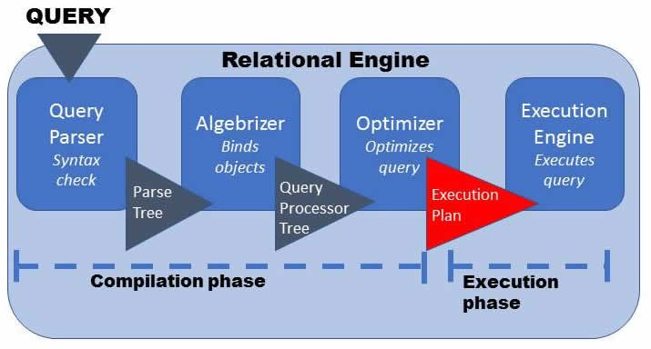
Parsing, in plain words
Binding, in plain words
Person.Person exists;
Product.Person does not, so compilation stops with "invalid object name".
Optimization
The optimizer receives three inputs:
| Input | What it tells the optimizer |
|---|---|
| Query processor tree | The logical shape of the query, plus the tables and indexes involved. |
| Statistics | How much data there is and how it is distributed. |
| Constraints | Primary keys, foreign keys and other rules that limit what data can exist. |
With those in hand it swaps the logical tree for a physical plan made of operators — one for reading an index, one for each join flavour (Nested Loops, Hash Match, Merge, Adaptive Join), ones for sorting, aggregating, computing values, and so on. It then scores candidate plans by estimated cost and takes the lowest.
Trivial plans
Very simple single-table queries can skip full cost-based optimization and get a trivial plan instead. Listing 1-1 is the book's example:
SELECT d.Name
FROM HumanResources.Department AS d
WHERE d.DepartmentID = 42;
This query also qualifies for auto-parameterization: the hard-coded
42 is replaced by a parameter when the plan is cached, so another
query with a different ID can reuse the same plan.
CREATE TABLE has only one sensible way to
happen. ALTER TABLE … ADD CONSTRAINT does get optimized.
Execution — and recompiles
The execution engine follows the plan it was given. But it may throw the plan away and ask
for a new one if the plan turns out to be invalid — for example the underlying table
changed, or statistics were refreshed. A whole batch is compiled at once, even branches
behind IF that never run; if one statement's plan goes stale,
only that statement is recompiled.
New in SQL Server 2017: interleaved execution for multi-statement table-valued functions. The optimizer pauses mid-way, runs the function's subtree to learn the real row count, then optimizes the rest of the query with that number.
2 Working with the optimizer
In C# you write the steps. In T-SQL you write only the result you want — and someone else chooses the steps.
The optimizer, not you, decides how a query runs. Your job is to write efficient, set-based SQL that describes the required data as succinctly as possible. Beyond that, a developer or DBA has two practical levers to help the optimizer:
- Keep statistics accurate and up to date.
- Encourage plan reuse rather than constant recompilation.
3 Why statistics decide everything
The quality of the plan is capped by the quality of the statistics behind it.
The optimizer cannot read your whole table for every plan it tries. Instead it uses statistics: aggregated samples that stand in for the full data set. The estimated cost of a plan rests mostly on cardinality estimation — how many rows are in the table, and how many of them will survive each filter or join.
Statistics come in three parts:
| Part | What it holds |
|---|---|
| Header | General metadata about this statistics object. |
| Density graph | How unique / selective the data is. |
| Histogram | Counts of value occurrences, built from up to 200 sample points chosen to represent the table. |
The key number is selectivity: the fraction of rows that pass the filter. Selectivity 1.0 (100%) is the worst case — every row passes. Cardinality is just selectivity × input rows.
4 The plan cache and plan reuse
Compiling is expensive work. Compiling the same query twice is wasteful work.
A simple query compiles in under a millisecond; a complex one can take seconds or even minutes. So SQL Server keeps finished plans in memory — the plan cache — and reuses them whenever it can.
Plan aging
Each plan carries an age = estimated compile cost × number of times it has been used.
A plan costing 10 to compile and used 5 times has age 50. The internal
lazywriter process periodically decrements every age by one, and
when memory is tight the lowest-age plans are evicted first. The intent: keep the plans
that are expensive to build and used often.
Clearing the cache on purpose
-- Everything, all databases. Never casually in production:
DBCC FREEPROCCACHE;
-- Just one plan, using a handle from a DMV (e.g. sys.dm_exec_query_stats) or Query Store:
DBCC FREEPROCCACHE(0x0500...plan handle...);
-- One database (undocumented, older method):
DBCC FLUSHPROCINDB(DB_ID('AdventureWorks2014'));
-- One database, documented, SQL Server 2016+:
ALTER DATABASE SCOPED CONFIGURATION CLEAR PROCEDURE_CACHE;When is a plan actually reusable?
The algebrizer assigns each query a QueryHash. For a match, all four of these must line up:
- the QueryHash matches (with a detailed comparison of the SQL text, right down to spaces and carriage returns — hash collisions are possible in theory),
- the SQL text matches exactly,
- the SET options used to create the plan match,
- the database ID matches.
Unqualified object names (no dbo. / schema prefix) can also produce
separate plans for different users.
Parameterize to avoid churn
Listing 1-2 joins three AdventureWorks tables and filters on a literal:
SELECT p.ProductID ,
p.Name AS ProductName ,
pi.Shelf ,
l.Name AS LocationName
FROM Production.Product p
INNER JOIN Production.ProductInventory AS pi
ON pi.ProductID = p.ProductID
INNER JOIN Production.Location AS l
ON l.LocationID = pi.LocationID
WHERE l.Name = 'Paint';
GO'Tool Cribs' and you get a second cached plan, even though the two queries are logically the same and share a QueryHash.The fix: the same query with a parameter instead of a literal.
-- Declare a parameter, so the SQL text is "set in stone"
DECLARE @LocationName nvarchar(50) = N'Paint';
SELECT p.ProductID ,
p.Name AS ProductName ,
pi.Shelf ,
l.Name AS LocationName
FROM Production.Product p
INNER JOIN Production.ProductInventory AS pi
ON pi.ProductID = p.ProductID
INNER JOIN Production.Location AS l
ON l.LocationID = pi.LocationID
WHERE l.Name = @LocationName;
GO
-- Same idea from application code / dynamic SQL: sp_executesql
EXEC sys.sp_executesql
N'SELECT ... WHERE l.Name = @LocationName;',
N'@LocationName nvarchar(50)',
@LocationName = N'Tool Cribs';What causes a recompile
- Structure changes to a referenced table, view or function
- An index used by the query changed or dropped
- Statistics used by the query updated
sp_recompilecalled on the object- DDL and DML mixed in a single batch
- Certain
SEToptions changed in the batch - Cursor options changed in the query
- Deferred compiles
- Remote rowset changes, e.g. through
OPENQUERY
5 Execution plan formats
Same plan, three ways to look at it. Pick based on what you need to do.
| Format | How to get it | Best for |
|---|---|---|
| XML | SET SHOWPLAN_XML ON (estimated) · SET STATISTICS XML ON (actual) |
Sharing with other DBAs. Queryable with XQuery. Not human-readable at a glance. |
| Text | SET SHOWPLAN_ALL ON · SET STATISTICS PROFILE ON · SET SHOWPLAN_TEXT ON |
Searching in an editor. Deprecated by Microsoft — the book recommends avoiding it. |
| Graphical | SSMS toolbar buttons / Ctrl+L, Ctrl+M | Actually reading plans. Fast to grasp; detail lives in tooltips and Properties. |
-- Estimated (does not run the query)
SET SHOWPLAN_XML ON; -- full XML plan
SET SHOWPLAN_ALL ON; -- text plan
-- Actual (runs the query, adds runtime info)
SET STATISTICS XML ON;
SET STATISTICS PROFILE ON;
-- Turn them back off when you're finished
SET SHOWPLAN_XML OFF;Permissions you need
sysadmin, dbcreator or
db_owner already have access. For everyone else, grant
SHOWPLAN in the specific database (Listing 1-3). Querying DMVs
additionally needs VIEW SERVER STATE or
VIEW DATABASE STATE.
GRANT SHOWPLAN TO [username];6 Estimated vs actual plans
The chapter's biggest myth-buster: they are not two different plans.
So can they ever differ?
Essentially no. There is one valid plan per query at any moment. If an estimated plan and a later actual plan look different, something invalidated the cached plan in between — data or schema changes, statistics updates, mix of DDL and DML — forcing a recompile.
Two genuine exceptions:
- Parallelism. The optimizer may produce a parallel plan, but at runtime the engine can strip the parallelism and run serially if resources are scarce. The plan wasn't changed; the execution shape was.
- The estimated plan simply cannot be produced. Listing 1-4 creates a temp table in the same batch and selects from it. Requesting the estimated plan fails, because the query is never executed and the table never exists. At runtime it works fine.
CREATE TABLE TempTable
(
Id INT IDENTITY(1, 1) ,
Dsc NVARCHAR(50)
);
INSERT INTO TempTable
( Dsc )
SELECT [Name]
FROM [Sales].[Store];
SELECT *
FROM TempTable;
DROP TABLE TempTable;Msg 208, Level 16, State 1, Line 7 · Invalid object name 'TempTable'.
The statement is marked for deferred name resolution, so it is excluded from compilation
until it actually runs.
7 Capturing your first plan
Two toolbar buttons and one keyboard shortcut are all you need.
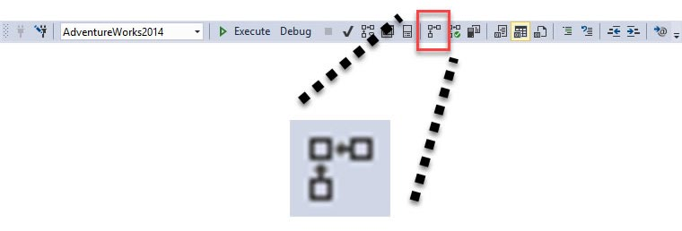
- Right-click in the query window → same options in the context menu.
- Menu bar → Query → same options.
- Keyboard:
Ctrl+Lestimated,Ctrl+Mactual (in Visual Studio:Ctrl+Alt+L/Ctrl+Alt+M). - Estimated plans must be requested every time. The actual plan button is an on/off switch per query window.
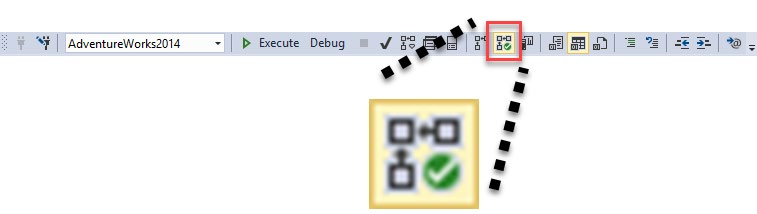
sys.dm_exec_query_statistics_xml (DMV in SQL Server 2014, graphical view in 2016). Covered in Chapter 17.Open a new query window and run Listing 1-5:
USE AdventureWorks2014;
GO
SELECT p.LastName + ', ' + p.FirstName,
p.Title,
pp.PhoneNumber
FROM Person.Person AS p
INNER JOIN Person.PersonPhone AS pp
ON pp.BusinessEntityID = p.BusinessEntityID
INNER JOIN Person.PhoneNumberType AS pnt
ON pnt.PhoneNumberTypeID = pp.PhoneNumberTypeID
WHERE pnt.Name = 'Cell'
AND p.LastName = 'Dempsey';
GO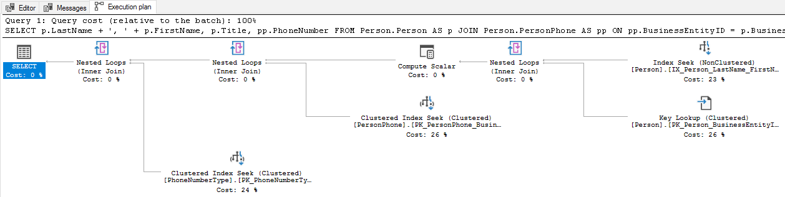
8 The parts of a graphical plan
Read right to left to follow the data; read left to right to follow the calls.
Most people start on the right, where data is read from tables and indexes, then follow the arrows left toward the SELECT operator, which hands rows to the client. Reading left to right is equally valid: that is the order in which operators call their children — data is pulled, not pushed.
Operators
Icons are the workhorses. Each implements one algorithm. Every operator has a physical side (how it is done) and a logical side (what it does) — e.g. Nested Loops (Inner Join).
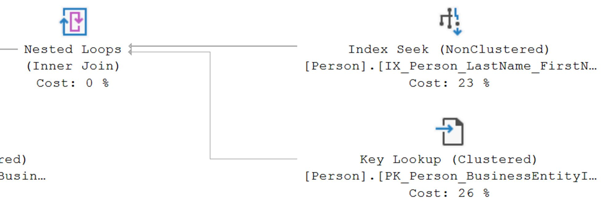
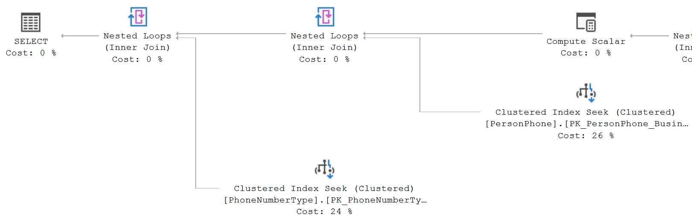
LastName + ', ' + FirstName), then joins PersonPhone and PhoneNumberType, ending at SELECT.The SELECT operator is special: it reports on the plan as a whole, while every other operator reports only on itself.
Data flow arrows
Arrow thickness = amount of data. A fat arrow on the right fading to a thin arrow on the left means "we processed a lot to return very little" — sometimes unavoidable, often an optimization opportunity. Hover an arrow for its exact row count. In an actual plan the thickness uses actual row counts.
Estimated operator costs
The percentage under each icon is that operator's estimated cost relative to the whole plan. These are abstract "cost units" from the optimizer's CPU and I/O math — not real seconds. They correlate with real cost, but they are still estimates. A 0% operator still has a small non-zero cost (visible in Properties). All values come from the optimizer, so costs are identical in estimated and actual plans.
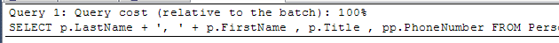
Operator properties
Right-click an icon → Properties. Pin the Properties window open while you read plans; this is where nearly all the useful information lives. Properties differ per operator type.
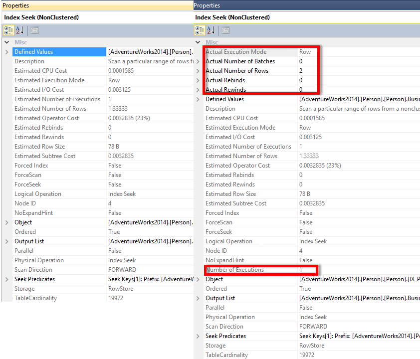
| Property | Meaning |
|---|---|
| Actual Number of Rows | True rows returned at runtime. Only exists in actual plans — and it is the single most useful number in the window. |
| Estimated Number of Rows | What statistics predicted. Compare it with the actual figure. |
| Estimated Operator Cost | The operator's cost, as a number and a percentage. Still an estimate even in an actual plan. |
| Object | The table or index being touched. |
| Predicate | The search condition pushed down into this operator. |
| Output List / Defined Values | Columns returned, and expressions computed here. |
| Table Cardinality | Number of rows in the table. |
Tooltips
Hover an icon or arrow for a pop-up that is a cut-down Properties window — fast, but incomplete, and it varies between SQL Server versions. For anything serious, use the Properties pane.

Saving a plan
Right-click the plan → Save Execution Plan As…. The .sqlplan
file is just XML. Since SQL Server 2008 the file type is preselected (in 2005 you had to type
the extension yourself). Saving a plan is the standard way to hand a slow query to a
colleague — they open the file in SSMS and see your exact graphical plan.
-- A .sqlplan file is XML. Load one and pull out the physical operators used.
DECLARE @plan xml = N'<ShowPlanXML ...>...</ShowPlanXML>'; -- or read from file / DMV
WITH XMLNAMESPACES ('http://schemas.microsoft.com/sqlserver/2004/07/showplan' AS p)
SELECT RelOp.value('@PhysicalOp', 'varchar(100)') AS PhysicalOp ,
RelOp.value('@LogicalOp', 'varchar(100)') AS LogicalOp ,
RelOp.value('@EstimatedTotalSubtreeCost', 'float') AS SubtreeCost
FROM @plan.nodes('//p:RelOp') AS T(RelOp);★ Key takeaways
- The plan is the truth. When a query is slow, stop guessing from the T-SQL and look at the plan.
- You write "what", the optimizer writes "how". Write set-based SQL and let it choose the algorithm.
- Statistics drive plan quality. Stale or missing stats mean bad cardinality estimates, and bad plans follow.
- Reuse is cheap, recompiling is not. Use stored procedures or parameters; consider Optimize for Ad Hoc Workloads.
- Estimated ≠ wrong. The estimated plan simply has no runtime data; costs are estimates in both.
- Compare estimated vs actual rows. The gap is your fastest diagnostic signal.
- Save as .sqlplan to share. It is portable XML that anyone with SSMS can open.
1 The language of execution plans
Learning plans is like learning a language — except the vocabulary is small. There are about 85 operators, and most queries use a handful.
Three kinds of icon appear in a graphical plan:
| Type | Icon colour | What it represents |
|---|---|---|
| Physical operators (with their logical operation) | Blue | Actual query execution, including DML and parallelism. The only kind you see in an actual plan. |
| Cursor operators | Yellow | T-SQL cursor operations (Chapter 14). |
| Language elements | Green | Language constructs such as ASSIGN, DECLARE, IF, WHILE. |
Every operator has two halves. The physical part is the algorithm chosen;
the logical part is the job being done. The label reads
physical (logical) — e.g. Nested Loops (Inner Join):
"do an inner join, using the nested loops algorithm". Physical operations only ever run in
row mode or batch mode (Chapter 12).
Reading data
Table ScanIndex ScanIndex Seek Lookup (Key / RID)Constant ScanCombining data
Nested LoopsMerge JoinHash Match Adaptive JoinSequenceConcatenationSwitchGrouping & ordering
SortStream AggregateHash Match (Aggregate) Window AggregateSegmentWindow SpoolManipulating data
Compute ScalarFilterTop Sequence ProjectAssertSplitCollapseModifying data
Table/Index InsertTable/Index Update Table/Index DeleteTable/Index MergePerformance
BitmapSpoolsParallelismSome operators — mainly Sort, Hash Match and Adaptive Join — need a variable amount of memory to run. A query using one may wait for a memory grant before it starts, which can hurt performance on its own.
2 Right to left, or left to right?
Both. Right to left follows the data; left to right follows the calls. Knowing the difference prevents a classic misreading.
SELECT TOP ( 5 )
BusinessEntityID ,
PersonType ,
NameStyle ,
Title ,
FirstName ,
LastName ,
ModifiedDate
FROM Person.Person
WHERE ModifiedDate >= '20130601'
AND ModifiedDate <= CURRENT_TIMESTAMP;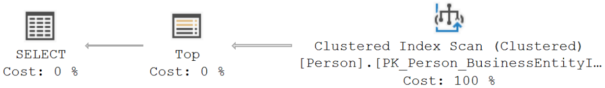
Reading right to left, you would think the scan reads every row matching the WHERE clause (over 13,000 of them) and Top then throws away all but five. That is not what happens. The arrow between the scan and Top is thin — the scan only read 5 rows.
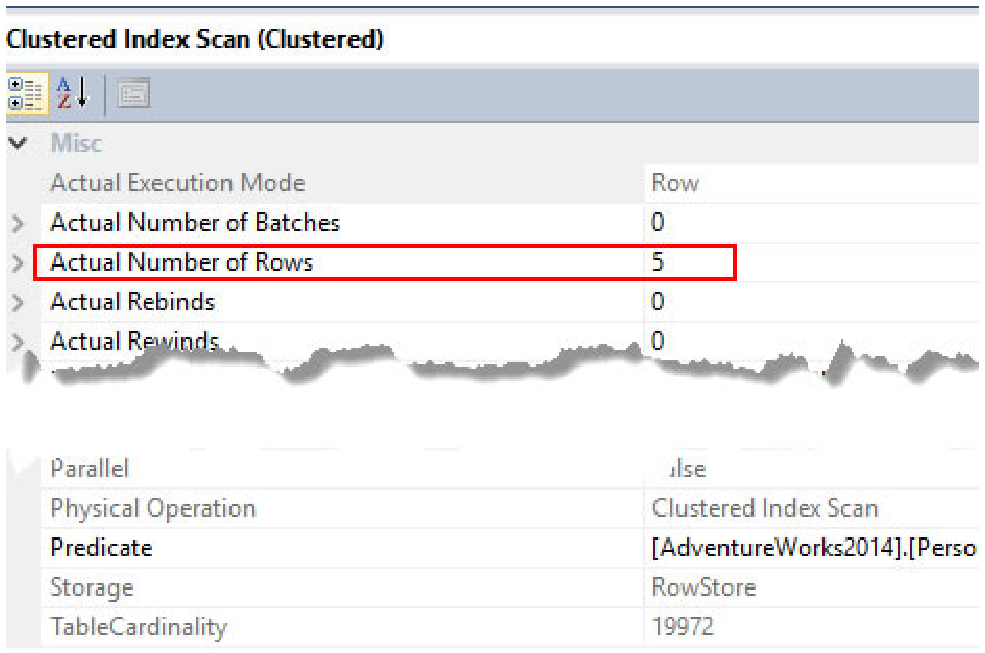
Why? Because execution is pull-based. Every operator implements a
GetNext() method — "give me the next row". Execution begins with a
GetNext call from Top down to the scan; the scan returns one qualifying row, Top keeps it
and asks again. After five rows Top is satisfied, execution stops, and the rest of the table is
never touched.
3 Streaming vs blocking operators
The single most useful thing to know about an operator: can it pass rows along immediately, or must it swallow everything first?
| Kind | Behaviour | Examples |
|---|---|---|
| Streaming (non-blocking) | Produces output as it receives input — rows flow straight through. | Clustered Index Scan, Index Seek, Nested Loops, Compute Scalar, Filter |
| Blocking | Must read the entire input before it can emit the first row. | Sort, Hash Match (Aggregate), Stream Aggregate (partly) |
| Semi-blocking | Consumes all of one input, then streams the other. | Hash Match (Join) — builds from the first input, streams the second |
Add ORDER BY ModifiedDate to Listing 2-1 and the plan changes shape:
SELECT TOP ( 5 ) BusinessEntityID , FirstName , LastName , ModifiedDate
FROM Person.Person
WHERE ModifiedDate >= '20130601'
AND ModifiedDate <= CURRENT_TIMESTAMP
ORDER BY ModifiedDate; -- now a Sort must see everything before it can emit a row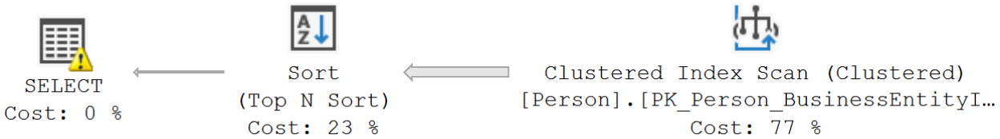
Everything downstream is now forced to do more work: the Sort cannot emit a single row until it has read every qualifying row, sorted them, and picked the top five. That is the cost of blocking — no early termination. Microsoft publishes no definitive list of which operators block; you infer it from behaviour and from the plan's own definitions.
4 The seven-point plan check
Instead of tracing every path in a big plan, run down this list first. The book calls these "pointers to sources of possible problems."
- First operator. Select it and read its Properties. It describes the whole plan — compile cost, SET options, and whether optimization finished or timed out.
- Warnings. Yellow or red exclamation marks (SQL Server 2012+). Each one has a description in its properties. Common ones: memory grant mismatch, Sort spilling to disk.
- Estimated vs actual rows. Do this before looking at any cost. All costs are built on cardinality estimates, so if the estimates are wrong the costs are meaningless.
- Operator cost. Only now rank operators by estimated cost. Compare operators within a plan — never between two different plans, because the numbers are mathematical constructs, not stopwatch readings.
- "Missing index" suggestions. Treat as hints, not instructions. The plan sees one query; your workload is many. Also, only the first suggestion appears at the top — check the first operator for more.
- Data flow / pipe thickness. Fat pipes mean lots of data. Watch for abrupt changes: a fat pipe narrowing sharply at the left means filtering happens late; thin pipes widening as you move left mean the query is multiplying rows.
- "Extra" operators. The author's invented heuristic: any operator you don't recognise, or recognise but can't explain why it's in that position, is an "extra" operator. The fix is simply to learn what it does — then it stops being extra.
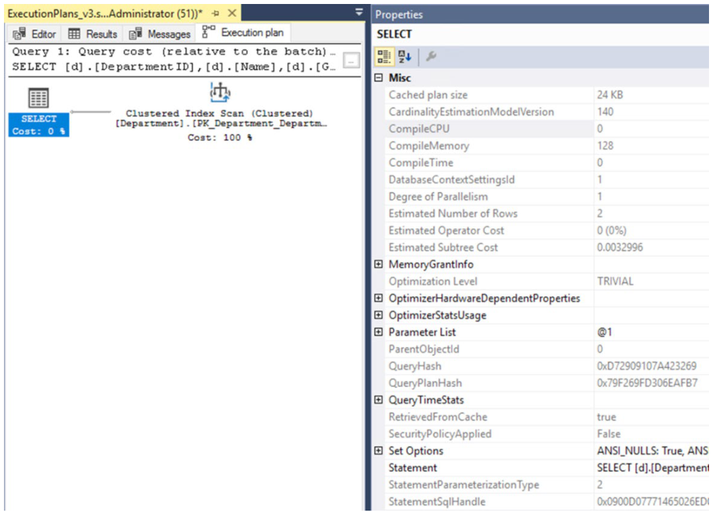
5 The information behind the first operator
Most people jump straight to the data-access operators on the right and never look left. That's a mistake — the first operator is a report card on how the plan was made.
Microsoft calls it the Result Showplan operator, but in the plan it is labelled by what the
statement does: SELECT, INSERT,
UPDATE, DELETE, or similar. It's a
Language Element (green), not a physical operator.
SELECT d.DepartmentID,
d.Name,
d.GroupName
FROM HumanResources.Department AS d
WHERE d.GroupName = 'Manufacturing';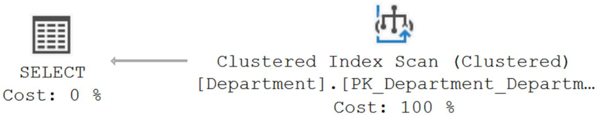
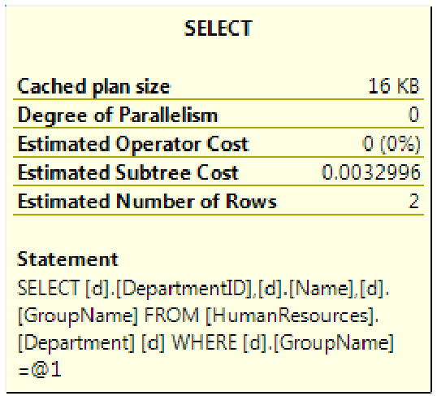
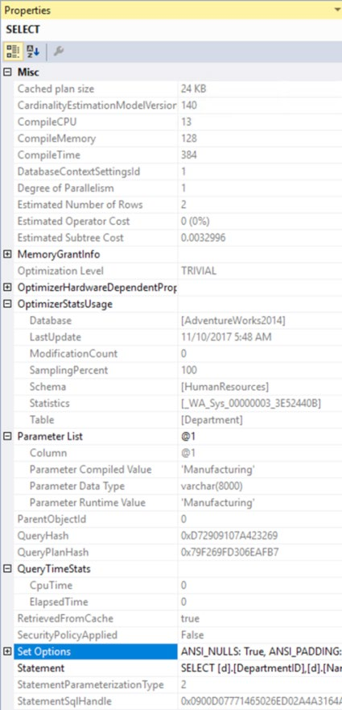
Properties worth knowing
| Property | Why you care |
|---|---|
| Cached plan size | Memory this plan occupies in the plan cache — useful when hunting cache bloat. |
| CardinalityEstimationModelVersion | 140 = the new (2014+) estimator; 70 = the original from SQL Server 7. Explains plan differences between versions. |
| CompileCPU / CompileMemory / CompileTime | What it cost to build the plan. Time in ms, memory in KB. High numbers justify caring about recompiles. |
| RetrievedFromCache | A misnomer: true means the plan is stored in cache, not that it was fetched from it. False means it isn't cached at all. |
| QueryTimeStats | SQL Server 2016+: actual CPU and elapsed time when you capture an actual plan. |
| Optimization Level | Trivial or Full — how much effort the optimizer spent. |
| Reason For Early Termination… | Why optimization stopped: Good Enough Plan Found, Timeout, or Memory Limit Exceeded. |
Trivial vs Full optimization
A trivial plan is one where the optimizer has no real choice — a simple single-table
SELECT, or an INSERT … VALUES. Add a JOIN
(Listing 2-3) and you get FULL.
SELECT d.DepartmentID,
d.Name,
d.GroupName,
edh.StartDate
FROM HumanResources.Department AS d
INNER JOIN HumanResources.EmployeeDepartmentHistory AS edh
ON edh.DepartmentID = d.DepartmentID
WHERE d.GroupName = 'Manufacturing';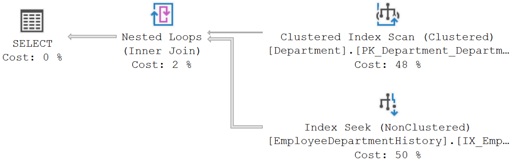
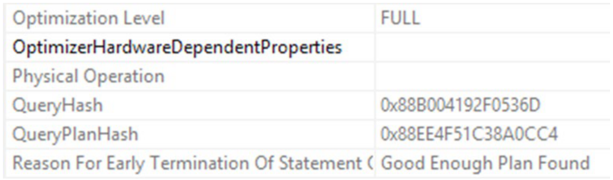
| Reason For Early Termination | Meaning |
|---|---|
| Good Enough Plan Found | After at least one optimization phase, the cheapest plan was already below the threshold for the next phase. Normal and healthy. |
| (not reported) | Full optimization ran to completion in whatever phase it entered — the plan is the genuine best it found. |
| Timeout | The optimizer ran out of attempts without finding a mathematically "good enough" plan, and returned the cheapest so far. |
| Memory Limit Exceeded | A very large, complex query against complex structures. The plan is probably not optimal — simplify the query or the schema to do better. |
Parameter List and simple parameterization
Listing 2-2 hard-codes 'Manufacturing' — no parameter, no variable.
Yet the SELECT properties show a Parameter List with @1.
That is simple (auto) parameterization: the optimizer notices it could reuse a plan if
the literal were a parameter, so it substitutes one. Your WHERE clause becomes
WHERE d.GroupName = @1.
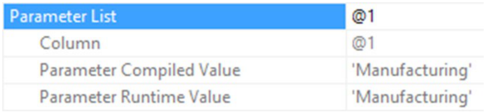
'Manufacturing'.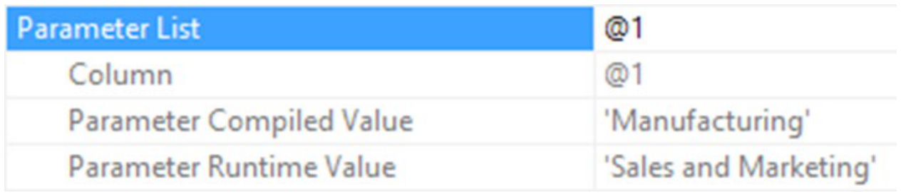
@1 block in Figure 2-12 is how you see which value the plan was built for.
QueryHash vs QueryPlanHash
| What you changed | QueryHash | QueryPlanHash |
|---|---|---|
| Only literals, plan unchanged | Same | Same |
| Only literals, different plan | Same | Different |
| Logic changed, plan unchanged | Different | Same |
QueryHash fingerprints the query text/logic (used to find candidate cached plans); QueryPlanHash fingerprints the plan's operations and their order. Together they're how you detect ad hoc / dynamic SQL generating duplicate plans.
SET options
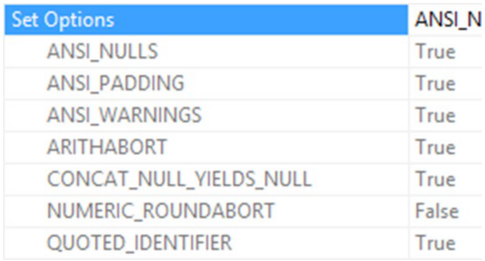
ARITHABORT OFF
(SSMS default) is unusable by an application connecting with ARITHABORT ON.
That's how "it's fast in SSMS but slow in the app" happens.
6 Measuring queries alongside the plan
A plan tells you where the work is; metrics tell you how much it cost. The book's recommendation is unambiguous: use Extended Events, not Trace.
STATISTICS IO / TIME
SET STATISTICS IO ON;
SET STATISTICS TIME ON;
SELECT d.DepartmentID,
d.Name,
d.GroupName
FROM HumanResources.Department AS d
WHERE d.GroupName = 'Manufacturing';
SET STATISTICS IO OFF;
SET STATISTICS TIME OFF;SQL Server parse and compile time:
CPU time = 0 ms, elapsed time = 0 ms.
(2 row(s) affected)
Table 'Department'. Scan count 1, logical reads 2, physical reads 0,
read-ahead reads 0, lob logical reads 0, lob physical reads 0,
lob read-ahead reads 0.
(1 row(s) affected)
SQL Server Execution Times:
CPU time = 0 ms, elapsed time = 6 ms.
SQL Server Execution Times:
CPU time = 0 ms, elapsed time = 0 ms.Pros: breaks I/O down per table. Cons, per the book:
- Returning the I/O messages to the client adds overhead, so your timing measurements are no longer accurate.
- It doesn't count all the work — I/O inside user-defined functions called many times is invisible, whereas Extended Events sees it.
Include Client Statistics — for fast, frequent queries
If results rendering costs more than the query itself, discard the results, run the query many
times with GO 100, and read elapsed time from SSMS's
Include Client Statistics output instead.
-- SSMS: Query ▸ Query Options ▸ Results ▸ Grid ▸ "Discard results after execution"
-- Then enable Query ▸ Include Client Statistics, and run the batch 100 times:
SELECT d.DepartmentID, d.Name
FROM HumanResources.Department AS d
WHERE d.GroupName = 'Manufacturing';
GO 100SQL Trace / Profiler — don't
- Profiler's buffering can hurt, or even take down, a production server.
- Trace cannot filter at capture time — everything is collected, then filtered, multiplying the overhead.
- Both are on Microsoft's deprecation list, so they will disappear.
Extended Events — the recommendation
Actively supported, filters far more effectively, runs lower in the call stack (less overhead), gives clear read/timing numbers, and since SQL Server 2012 has a full GUI for reviewing captured data. Listing 2-6 is a minimal session for procedures and batches:
CREATE EVENT SESSION QueryPerformance ON SERVER
ADD EVENT sqlserver.rpc_completed (
WHERE (sqlserver.database_name = N'AdventureWorks2014')),
ADD EVENT sqlserver.sql_batch_completed (
WHERE (sqlserver.database_name = N'AdventureWorks2014'))
ADD TARGET package0.event_file (SET filename = N'QueryPerformance')
WITH (MAX_MEMORY = 4096 KB,
EVENT_RETENTION_MODE = ALLOW_SINGLE_EVENT_LOSS,
MAX_DISPATCH_LATENCY = 3 SECONDS,
MAX_EVENT_SIZE = 0 KB,
MEMORY_PARTITION_MODE = NONE,
TRACK_CAUSALITY = OFF,
STARTUP_STATE = OFF);
GO
-- Start it when you're ready to measure:
ALTER EVENT SESSION QueryPerformance ON SERVER STATE = START;
-- ...run the workload...
ALTER EVENT SESSION QueryPerformance ON SERVER STATE = STOP;
-- Read the captured events straight out of the target file:
SELECT xe.*
FROM (SELECT CAST(target_data AS xml) AS event_data
FROM sys.dm_xe_session_targets AS t
JOIN sys.dm_xe_sessions AS s
ON s.address = t.event_session_address
WHERE s.name = 'QueryPerformance'
AND t.target_name = 'event_file') AS raw
CROSS APPLY raw.event_data.nodes('//event') AS xe(xe);★ Chapter 2 in ten lines
- Three icon colours: blue = physical operator, yellow = cursor, green = language element.
- Read right to left for data flow, left to right for who calls whom (
GetNext). - Thin arrows on the left of a scan + TOP mean early termination — the plan isn't reading everything.
- Blocking operators (Sort, aggregates) must consume all input first; they kill early termination.
- Check estimated vs actual rows before you believe any cost figure.
- Compare operator costs inside one plan, never across plans.
- Missing-index messages are suggestions for one query, not commands for your workload.
- The first operator reports optimization level, early-termination reason, compile cost, hashes and SET options.
- SET options and database ID must match for a plan to be reused — the usual cause of "fast in SSMS, slow in the app".
- Measure with Extended Events (or Query Store); avoid Trace/Profiler, and distrust STATISTICS IO timing.
1 How an index is built
Before you can read a plan, you need a mental picture of the structure underneath it.
A traditional SQL Server index is a set of 8 KB pages wired together in a b+tree (balanced tree — also called a bushy tree, or Bayer tree after its inventor). This chapter ignores columnstore, memory-optimized and full-text indexes; those come later.
| Clustered index | Nonclustered index | |
|---|---|---|
| Leaf level holds | The actual data rows, ordered by the clustering key | Index key columns + the clustered key + any INCLUDEd columns |
| How many per table | Exactly one — it is the table | Zero or more |
| Analogy | A dictionary in alphabetical order | The index at the back of a book |
There are essentially three ways to read an index — and only two ways to read a heap:
On an index
ScanSeekLookupOn a heap
Table ScanRID LookupPairing rule
Key Lookup → clustered indexRID Lookup → heap both paired with Nested Loops2 Scans
A scan navigates to the first (or last) leaf page and then walks the leaf level, forward or backward.
Scans show up when:
- all rows are needed to answer the query,
- so many rows qualify that scanning beats navigating the tree,
- no usable index exists for the
WHEREcolumns, - the query is written so a seek is impossible — e.g. a function wrapped around the indexed column.
Clustered Index Scan
SELECT e.LoginID,
e.JobTitle,
e.BirthDate
FROM HumanResources.Employee AS e
WHERE e.BirthDate < DATEADD(YEAR, -50, GETUTCDATE());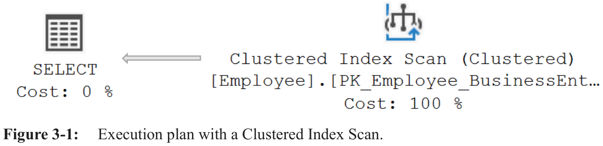
PK_Employee_BusinessEntityID.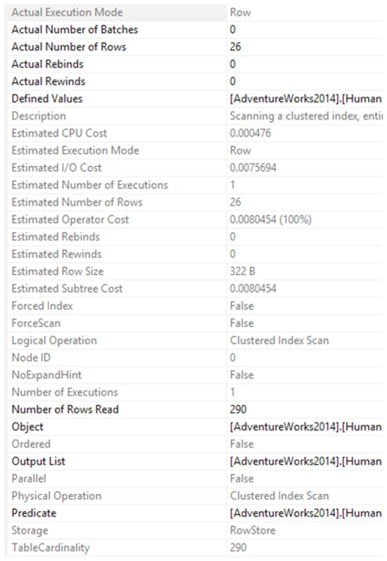
Properties worth reading on any read operator:
| Property | Meaning |
|---|---|
| Object | Which index was touched. Here the PK index, which is also the clustered index. |
| Number of Rows Read | How many rows the operator looked at: 290 — the whole table. |
| Actual / Estimated Number of Rows | How many rows it returned: 26. |
| Table Cardinality | Rows in the table: 290. |
| Ordered | Whether the output must be in index-key order. Add ORDER BY e.BusinessEntityID and it flips to True — a free sort. |
| Predicate | The filter applied after reading each row: [BirthDate] < dateadd(year,(-50),getutcdate()). |
| Seek Predicates | The filter used to navigate to rows. Empty on a scan — this is the crucial difference. |
Why a scan here? The clustered key is BusinessEntityID, so leaf pages are
ordered by that, not by BirthDate. Nothing lets the engine jump to the
birthdays, so it must visit every leaf page. One page = one logical read.
Index Scan (nonclustered)
SELECT e.LoginID,
e.BusinessEntityID
FROM HumanResources.Employee AS e;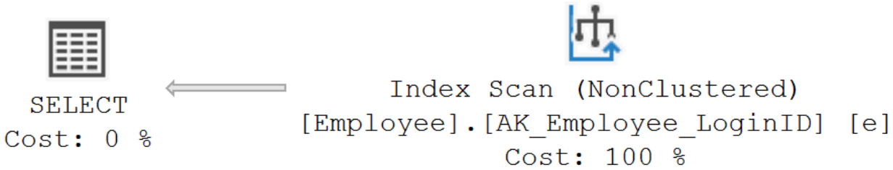
AK_Employee_LoginID.
The index is keyed on LoginID; the clustered key
BusinessEntityID rides along in the leaf level, so the index
covers this query. Fewer pages ⇒ fewer reads ⇒ faster scan. Same operation, better
target.
3 Seeks
A seek navigates straight to the pages that qualify — like using a book's index instead of reading every page.
A seek happens when:
- an index matches the predicate column and covers the query, or
- an index matches the predicate column, doesn't cover the query, but the predicate is highly selective (few rows).
SELECT e.BusinessEntityID,
e.NationalIDNumber,
e.LoginID,
e.VacationHours,
e.SickLeaveHours
FROM HumanResources.Employee AS e
WHERE e.BusinessEntityID = 226;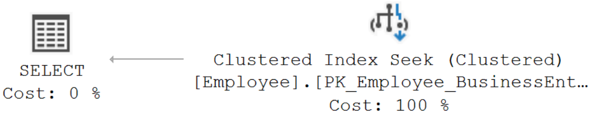
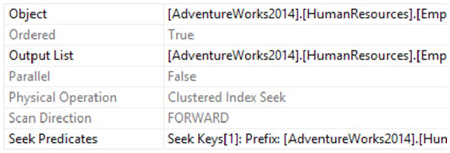
The Seek Predicates text is worth decoding:
Seek Keys[1]: Prefix: [AdventureWorks2014].[HumanResources].[Employee].
BusinessEntityID = Scalar Operator(CONVERT_IMPLICIT(int,[@1],0))@1 is simple parameterization at work, and the CONVERT_IMPLICIT is the 226 literal being typed as smallint and converted.int parameter — and therefore a
second plan. And some conversions are harmless (as here, a seek still happened) while others
force a scan where a seek was possible. Always check whether the seek survived.
Index Seek (nonclustered) — and a clever rewrite
SELECT p.BusinessEntityID,
p.LastName,
p.FirstName
FROM Person.Person AS p
WHERE p.LastName LIKE 'Jaf%';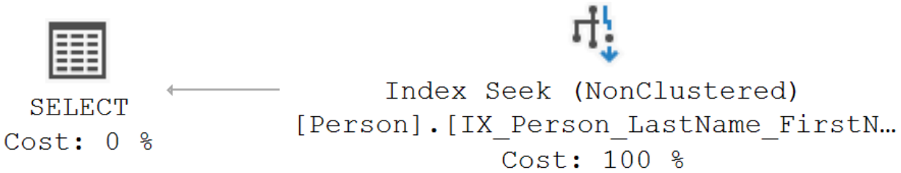
IX_Person_LastName_FirstName_MiddleName. Because the index contains every column the query needs, this is a covering index — no lookup required.
Buried in the properties is the optimizer doing real work. Given
LIKE 'Jaf%', it produced two different things:
-- Predicate: the original condition, still applied to each row
[Person].[Person].[LastName] like N'Jaf%'
-- Seek Predicates: LIKE rewritten as a range, to navigate the index
Seek Keys[1]:
Start: [Person].[Person].LastName >= Scalar Operator(N'Jaf'),
End: [Person].[Person].LastName < Scalar Operator(N'JaG')LastName >= 'Jaf' AND LastName < 'JaG'.
That rewrite — turning a LIKE prefix match into a half-open range — is what
makes the seek possible. The original LIKE stays as the Predicate because,
depending on collation, the interval can contain values the LIKE wouldn't match. Note also that this
query got no auto-parameterization: a LIKE pattern may or may not start
with a wildcard, so the optimizer can't parameterize it.
4 Lookups and covering indexes
When the index has the rows you want but not the columns you asked for, SQL Server has to go back for them.
SELECT p.BusinessEntityID,
p.LastName,
p.FirstName,
p.NameStyle -- not in the nonclustered index
FROM Person.Person AS p
WHERE p.LastName LIKE 'Jaf%';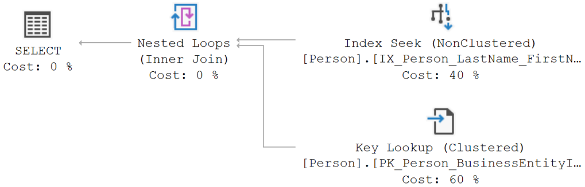
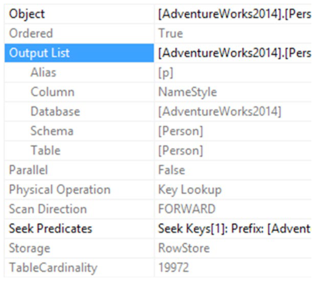
NameStyle.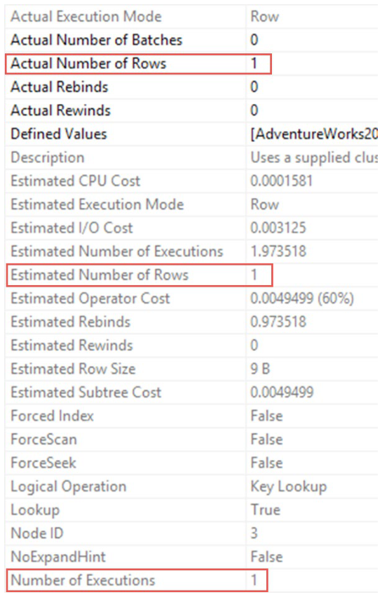
-- Option A: add the missing column to the key (widens the tree at every level)
CREATE NONCLUSTERED INDEX IX_Person_LastName_FirstName_NameStyle
ON Person.Person (LastName, FirstName, NameStyle);
-- Option B (usually better): keep the key, add the column at the leaf level only
CREATE NONCLUSTERED INDEX IX_Person_LastName_FirstName_MiddleName
ON Person.Person (LastName, FirstName) INCLUDE (NameStyle);
-- Measure the difference: logical reads before vs after
SET STATISTICS IO ON;
SELECT p.BusinessEntityID, p.LastName, p.FirstName, p.NameStyle
FROM Person.Person AS p
WHERE p.LastName LIKE 'Jaf%';
SET STATISTICS IO OFF;INCLUDE is the cheaper lever: it stores the column at the leaf level without widening the navigation levels, and without changing the sort order.5 Reading a heap
A heap is a table with no clustered index — rows sit in insertion order, and there is nothing to seek by.
You can still add nonclustered indexes. But instead of a clustered key, each entry carries a Row ID (RID) — the physical location of the row in the heap. That gives exactly two ways to read the table: scan or lookup.
Table Scan
SELECT dl.DatabaseUser,
dl.PostTime,
dl.Event,
dl.DatabaseLogID
FROM dbo.DatabaseLog AS dl;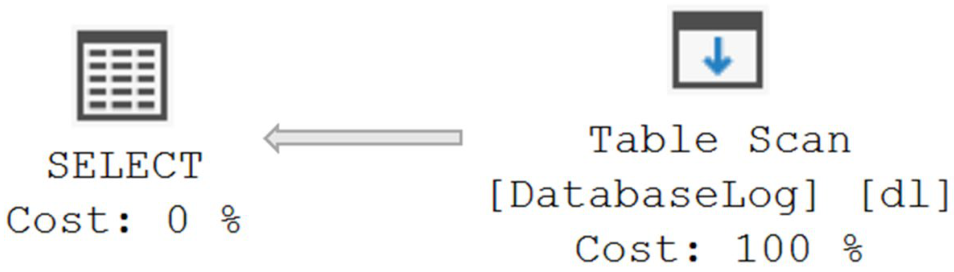
Table scans show up when:
- there is no useful nonclustered index, so every row must be examined,
- the query asks for all of the rows (this example),
- most rows are needed anyway — then scanning beats a lookup per row,
- the table is tiny, where a scan is cheap regardless.
RID Lookup
SELECT dl.DatabaseUser,
dl.PostTime,
dl.Event,
dl.DatabaseLogID
FROM dbo.DatabaseLog AS dl
WHERE dl.DatabaseLogID = 1;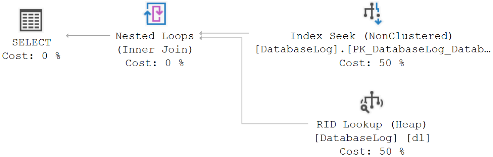
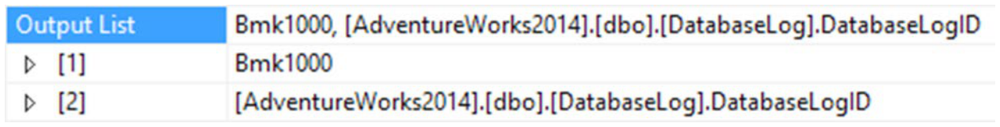
Bmk1000 value. One row here — cheap. Many rows means reconsider the design.★ Chapter 3 cheat sheet
| Operator | Structure | Reads | Look for |
|---|---|---|---|
| Clustered Index Scan | Clustered index | All leaf pages | Reads ≫ returned, and the predicate column isn't the clustering key |
| Index Scan | Nonclustered | All leaf pages | Usually chosen because the index is smaller than the clustered one |
| Clustered Index Seek | Clustered index | Only qualifying pages (~3 logical reads) | Has Seek Predicates; check for implicit conversions |
| Index Seek | Nonclustered | Only qualifying pages | Both Predicate and Seek Predicates (e.g. a rewritten LIKE) |
| Key Lookup | Clustered index, from a nonclustered seek | ~3 logical reads per execution | Number of Executions; missing column in Output List |
| Table Scan | Heap | All pages | No clustered index at all — consider adding one |
| RID Lookup | Heap, from a nonclustered seek | ~3 logical reads per execution | Bmk1000 in Output List; many executions |
- A clustered index is the table — that's why there can only be one.
- Nonclustered leaf pages = key columns + clustered key +
INCLUDEd columns. Nothing else. - Predicate = filter every row. Seek Predicate = navigate to rows. Never confuse them.
- The number that matters on a read operator is Rows Read vs Rows Returned.
- Scan ≠ bad, seek ≠ good. A seek that returns a million rows is worse than a scan that returns ten.
- Lookups are only expensive when executed many times — check Number of Executions, not the 60% cost label.
- Fix lookups by covering the query, preferably with
INCLUDEon an existing index.
1 Logical vs physical joins
You write a JOIN. The optimizer picks an algorithm. Those are two different things.
The optimizer can implement your join with one of four physical operators:
| Operator | How it works | Wins when… |
|---|---|---|
| Nested Loops | For each row in the top (outer) input, do one search of the bottom (inner) input. | The outer input is small and the inner input is cheap to seek. |
| Hash Match | Build a hash table from the top input, then probe it with rows from the bottom input. | Inputs are unsorted and large, or there are no usable indexes. |
| Merge Join | Read both inputs in order and merge them, matching values as it goes. | Both inputs are already sorted on the join column. |
| Adaptive Join 2017+ | Defers the choice — Hash Match or Nested Loops — until runtime, when the real row count is known. | Row counts are hard to estimate (e.g. columnstore), and you need both options available. |
Those four implement eight logical operations — plus two things that aren't really joins:
Written explicitly in T-SQL
Inner JoinOuter Join (Left/Right/Full)Produced by EXISTS / IN
Semi Join (Left/Right)Anti Semi Join (Left/Right)Not a join at all
Concatenation (UNION ALL)Union (UNION)SELECT e.JobTitle, a.City,
p.LastName + ', ' + p.FirstName AS EmployeeName
FROM HumanResources.Employee AS e
INNER JOIN Person.BusinessEntityAddress AS bea
ON e.BusinessEntityID = bea.BusinessEntityID
INNER JOIN Person.Address AS a
ON bea.AddressID = a.AddressID
INNER JOIN Person.Person AS p
ON e.BusinessEntityID = p.BusinessEntityID;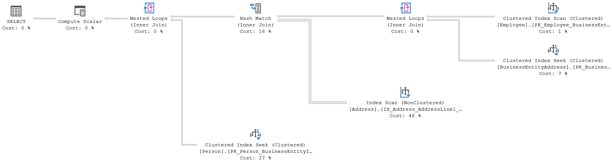
Read right to left: Employee ⨝ BusinessEntityAddress (Nested Loops) → that stream ⨝ Address (Hash Match, on AddressID) → that stream ⨝ Person (Nested Loops, on BusinessEntityID) → Compute Scalar → SELECT.
2 Nested Loops
Two cursors, one inside the other. Brilliant when the outer set is small — catastrophic when it isn't.
The outer input is the top pipe; the inner input is the bottom pipe. For every row from the outer input, the operator calls the inner input once. So everything in the bottom branch executes once per outer row. This is why "scan on top, seek below" is the classic Nested Loops shape.
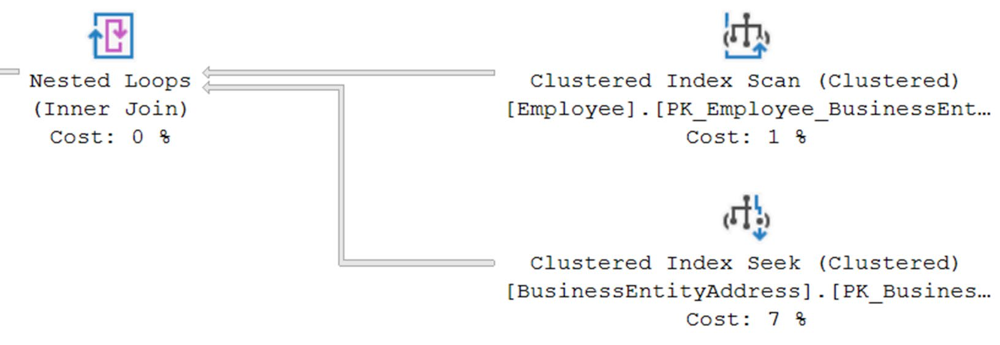
Here the outer input is a clustered index scan of Employee (290 rows), so the inner input — the clustered index seek on BusinessEntityAddress — runs 290 times.
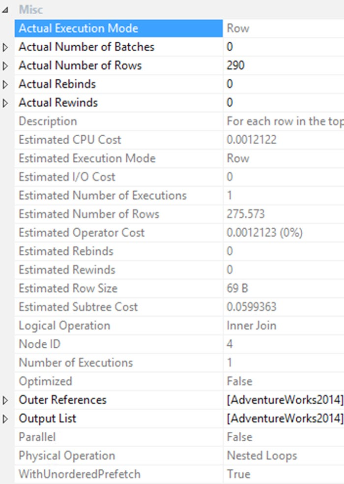
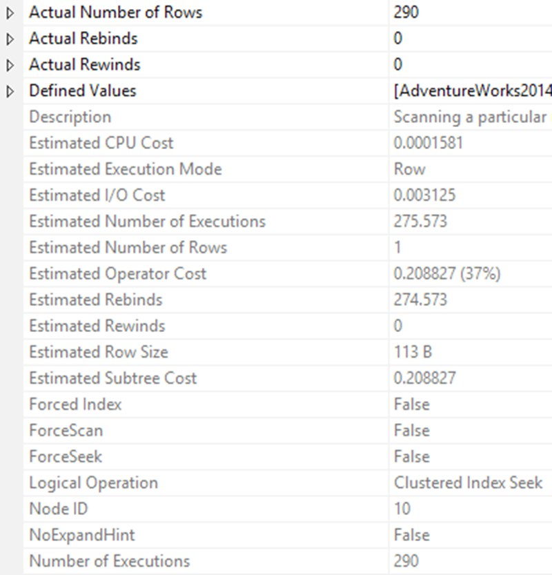
Note the comparison the book draws: the seek on BusinessEntityAddress runs even more often (290 times, versus ~275 for Person) yet costs less — because that table has fewer bytes per row, one less level of index pages, so 2 logical reads instead of 3 per execution.
Two ways to resolve the join condition
| Outer References | Predicate | |
|---|---|---|
| Mechanism | Values from the outer row are pushed down into the inner input, which can then seek on them. | Nothing is pushed down; the inner input returns the same rows every time, and Nested Loops filters them. |
| Effect | Inner input only ever returns matching rows — no validation work. | Inner input is re-read identically; fewer index seeks possible. |
| Best case | Pushed-down column is the leading column of a usable index ⇒ Index Seek. This is the situation you want. | Seen with non-sargable joins; usually the slower option. |
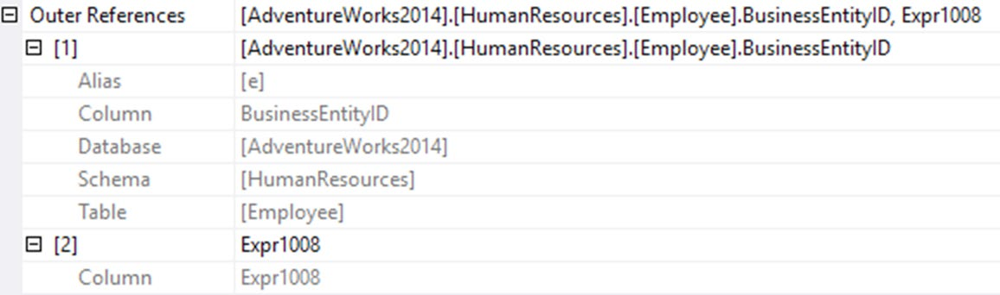
BusinessEntityID is pushed down, and it happens to be the leading column of the index on BusinessEntityAddress ⇒ seek. The mystery Expr1008 appears nowhere else in the plan; it's an artefact of the comparison inside the seek.Rebinds and Rewinds
Both count calls to an operator's Init(). Every execution of the inner
input is one or the other:
- Rebind — the pushed-down value changed (including the very first execution).
- Rewind — the value is unchanged, or there are no Outer References at all.
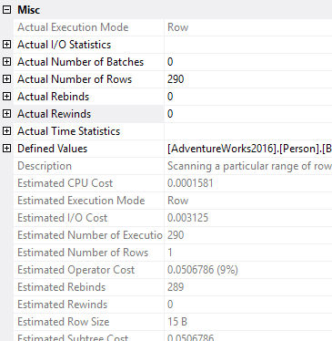
Why care? Because if the previous results are stored somewhere, a Rewind can skip all the downstream work. That only happens with operators that cache their output: Index Spool, Table Spool, Row Count Spool, Sort, Remote Query, and table-valued functions. With none of those present, Rebinds and Rewinds stay at zero and the properties are noise.
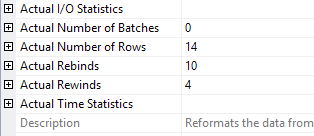
3 Hash Match
Build a lookup table in memory, then stream the other side against it.
Two phases: Build (top input → hash table in memory) and Probe (bottom input, row by row, hashed and matched). The optimizer always picks what it thinks is the smaller input as the Build side.
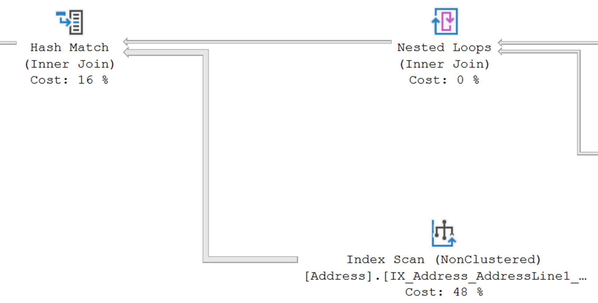
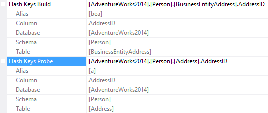
When Hash Match is chosen — and when it hurts
- It is blocking during Build: it must read the whole top input before emitting anything.
- Chosen when inputs are unsorted on the join column, or when no usable index exists, or when a large fraction of an index would be scanned anyway.
- If inputs are already sorted, the optimizer usually prefers a Merge Join — the sort is free.
- The only real failure mode: the Build input is far bigger than estimated, exceeds its memory grant, and spills to disk.
4 Compute Scalar (and its hidden cost)
Not a join — but it sits in this plan, and it hides a trap.
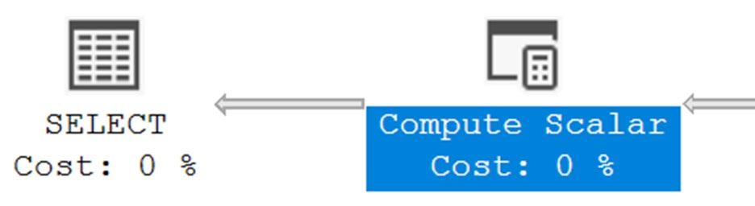
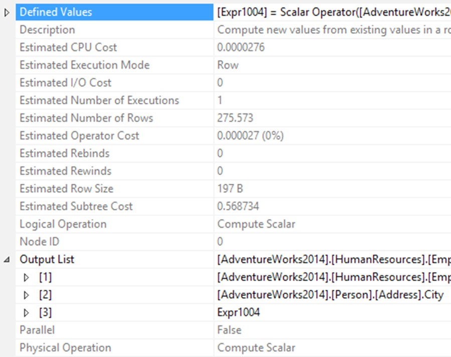
Expr1004 is the LastName + ', ' + FirstName concatenation, estimated at 0.000027.0.0000001 × Estimated Number of Rows
— regardless of how complex the expression is. Performance testing showed a UDF using a
thousand nested calls costed at the same 0.001 as one using a single call. Multiply that by 1,000
rows and the real cost is ~72 seconds, while the optimizer thinks it is 100 nanoseconds.
Two practical consequences:
- The logical position of a Compute Scalar in the plan is not necessarily where the work physically happens — so in an actual plan it may show no rows and no executions at all.
- With scalar UDFs inside, this is where truly surprising slowness hides. If a plan is slow for no visible reason, look for Compute Scalar with a function call.
5 Merge Join
Both sides sorted, zipped together in one pass. The fastest join — if you can get the sort for free.
SELECT c.CustomerID
FROM Sales.SalesOrderDetail AS sod
INNER JOIN Sales.SalesOrderHeader AS soh
ON sod.SalesOrderID = soh.SalesOrderID
INNER JOIN Sales.Customer AS c
ON soh.CustomerID = c.CustomerID;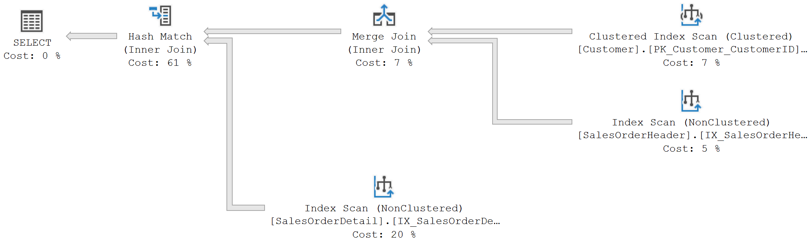
The optimizer reorders tables freely when it's safe (inner joins are commutative). Here the guaranteed-unique side — Customer — becomes the top input, giving a one-to-many join: both scans are already ordered on CustomerID, so nothing needs sorting.
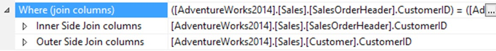
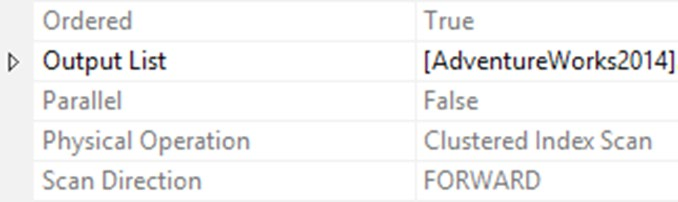
The Many-to-Many trap
SET STATISTICS IO ON;
SELECT sod.ProductID,
sod.SalesOrderID,
pv.BusinessEntityID,
pv.StandardPrice
FROM Sales.SalesOrderDetail AS sod
INNER JOIN Purchasing.ProductVendor AS pv
ON pv.ProductID = sod.ProductID;
SET STATISTICS IO OFF;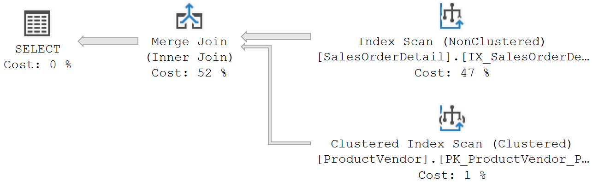
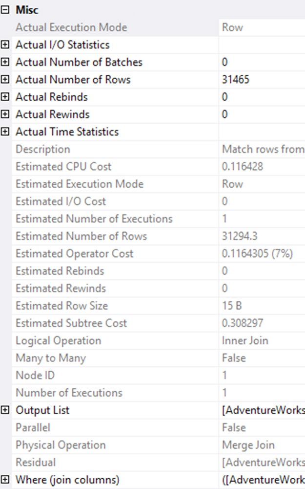
(74523 rows affected)
Table 'Worktable'. Scan count 19, logical reads 18013, ...
Table 'ProductVendor'. Scan count 1, logical reads 7, ...
Table 'SalesOrderDetail'. Scan count 1, logical reads 250, ...Why? For a many-to-many merge, rows from the bottom input are copied to a worktable in tempdb. When the same join value repeats, the worktable is used to rewind to the start of those duplicates; when the value changes, it's flushed and reloaded. That's the 18,000 reads.
6 Adaptive Join 2017+
Why guess the row count at compile time when you can look at it at runtime?
-- Clean up first if you've run this before
DROP INDEX IF EXISTS ix_csTest ON Production.TransactionHistory;
GO
CREATE NONCLUSTERED COLUMNSTORE INDEX IX_CSTest
ON Production.TransactionHistory
(
TransactionID,
ProductID,
ActualCost
);SELECT p.Name AS ProductName,
th.ActualCost
FROM Production.TransactionHistory AS th
JOIN Production.Product AS p
ON p.ProductID = th.ProductID
WHERE th.ActualCost > 0
AND th.ActualCost < .21;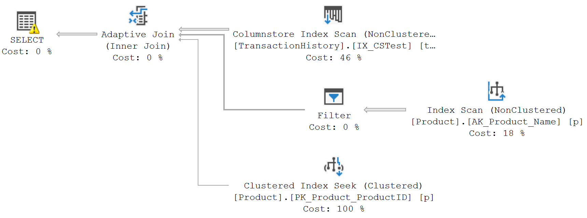
At compile time both join implementations are built into the plan. The operator runs the Build phase — which is why it needs a memory grant and is blocking — and then compares the number of rows actually in the hash table to a threshold.
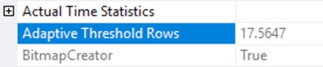
How to tell which branch actually ran
You need an actual plan — an estimated plan always shows both branches. Three tells:
adaptive_join_skipped tells you when and why the optimizer
couldn't use Adaptive Join for a query.
The trade-off is small and in your favour: if the row count turns out low, the Nested Loops branch costs slightly more than a pure Nested Loops plan would have — but far less than a Hash Match plan built for the wrong row count. If the row count is high, it behaves like a normal Hash Match.
7 Joins that aren't joins
Join operators turn up for EXISTS, IN, and plain old UNION ALL too.
You already met one in Chapter 3: the Nested Loops that pairs an Index Seek with its Key Lookup. Here are two more patterns.
Semi Join / Anti Semi Join
SELECT bom.ProductAssemblyID,
bom.PerAssemblyQty
FROM Production.BillOfMaterials AS bom
WHERE EXISTS ( SELECT *
FROM Production.BillOfMaterials AS bom2
WHERE bom.BillOfMaterialsID = bom2.ComponentID
AND bom2.EndDate IS NOT NULL
);| Logical operation | Comes from | Returns |
|---|---|---|
| Semi Join | EXISTS, IN | One copy of each row that has at least one match. No columns from the other side. |
| Anti Semi Join | NOT EXISTS, NOT IN | One copy of each row that has no match. |
| Outer Join (for contrast) | LEFT/RIGHT/FULL JOIN | All valid combinations plus one copy of each unmatched row from the preserved side. |
Left or Right is just a direction choice the optimizer makes based on the rest of the plan. Once a probe finds a match, that row is returned and no further comparisons are made — that's why semi joins are cheap.
Concatenation
SELECT p.LastName,
p.BusinessEntityID
FROM Person.Person AS p
UNION ALL
SELECT p.Name,
p.ProductID
FROM Production.Product AS p;UnionNNNN in an Output List is how you spot concatenation further up a plan.UNION ALL → Concatenation only. UNION (which
removes duplicates) → Concatenation plus a Sort or Hash Match to de-duplicate. That extra
operator is usually the expensive part.
IN clause can produce a
concatenation operation. And APPLY is implemented with join operators
too — covered in Chapter 7.
★ Chapter 4 cheat sheet
| Join | Blocking? | Needs sorted input? | Watch out for |
|---|---|---|---|
| Nested Loops | No | No | Inner branch runs once per outer row — check Number of Executions. Want Outer References, not Predicate. |
| Hash Match | Yes, during Build | No | Build input bigger than estimated ⇒ spills to disk. Also a clue for a missing index or non-SARGable predicate. |
| Merge Join | No | Yes | Sorts added to satisfy it; Many to Many = True using a tempdb worktable. |
| Adaptive Join | Yes, during Build | No | Batch mode only; both branches in the plan; check Number of Executions to see which ran. |
- Four physical operators, eight logical operations. The plan shows both: e.g.
Hash Match (Right Semi Join). - On a Nested Loops inner branch, estimated rows is per execution; actual rows is the total. Compare them via Number of Executions.
- Outer References = good (pushed-down values enable seeks). Predicate = the inner side returns the same rows every time.
- Rebinds/Rewinds only mean anything when a spool, sort, or TVF caches results downstream.
- The optimizer reorders inner joins — the plan's join order needn't match your query's.
- Compute Scalar costs are fiction (0.0000001 × rows). Scalar UDFs hide real cost there.
- Many to Many = True on a Merge Join often means a missing uniqueness constraint or an expression wrapped around the join column.
- Adaptive Join is only slightly worse than a perfect guess and much better than a wrong Hash Match.
1 Sorting data
Rows come back in no guaranteed order. The moment you ask for one, either an index already provides it — or you pay for a Sort.
SELECT pi.Shelf
FROM Production.ProductInventory AS pi
ORDER BY pi.Shelf;The Ordered property — two ways to scan
| Retrieval method | What it does | Order | Disk access |
|---|---|---|---|
| Ordered | Navigate to the first leaf page, then follow page pointers to the end. | Logical index order — guaranteed | Random (jumping around the pages) |
| IAM | Use Index Allocation Map pages to find every page belonging to the index — like a table scan. | "Semi-random" | Sequential (fast, unless pages are fragmented at OS level) |
ORDER BY ProductID instead of
Shelf — the optimizer sets Ordered = True and the Sort operator
disappears entirely.
Dealing with an expensive Sort
76% sounds alarming, but this plan has two operators — 76% of very little is still very little. The percentage only becomes meaningful when there are many operators.
Ask two questions, in order:
- Why is the Sort here? It may be for your ORDER BY — or added by the optimizer to feed a Merge Join, or for a DISTINCT, or for a window function. In big plans the reason isn't always obvious.
- Is it actually necessary? Common culprits:
- an
ORDER BYleft in from debugging that production doesn't need, - a missing index on the sort columns (here: an index on
Shelf), - no WHERE clause — you're sorting far more rows than you return.
- an
2 Top N Sort and Distinct Sort
Two specialisations of the same operator, both still blocking.
Top N Sort
SELECT TOP (50)
p.LastName,
p.FirstName
FROM Person.Person AS p
ORDER BY p.FirstName DESC;Distinct Sort
SELECT DISTINCT
p.LastName,
p.FirstName,
p.MiddleName,
p.Suffix
FROM Person.Person AS p;3 Sort warnings, and how to chase one down
A Sort warning is a story: starting at the Sort, you walk right until you find the operator whose estimate went wrong.
SELECT sod.CarrierTrackingNumber,
sod.LineTotal
FROM Sales.SalesOrderDetail AS sod
WHERE sod.UnitPrice = sod.LineTotal
ORDER BY sod.ModifiedDate DESC;Walking the plan to find the bad estimate
- Clustered Index Scan: estimated 121,317, actual 121,317. Fine — nothing wrong here.
- Two Compute Scalars: one evaluates the query's calculations, the other just aliases
LineTotal(a computed column — this is how you spot one in a plan). Neither changes row estimates. - Filter: this is the problem. It compares
UnitPrice = LineTotal, and becauseLineTotalis a calculated value, the predicate can't be pushed into the scan. The optimizer then applies a fixed 10% guess — 12,131.7 out of 121,317 — because it has no statistics for an expression. Actual: 74,612 (61%). - Sort: sized its memory grant for ~12k rows, received 74k, and spilled.
sod.UnitPrice = sod.LineTotal.LineTotal.
4 Stream Aggregate
Aggregate as you read. Fast, memory-light — and it requires ordered input.
SELECT c.TerritoryID,
COUNT(*)
FROM Sales.Customer AS c
GROUP BY c.TerritoryID;IX_Customer_TerritoryID index precisely so the data arrives already ordered by TerritoryID. No Sort needed.AggType = countstar, output type BIGINT.COUNT returns INT, the aggregate produced BIGINT, so an implicit CONVERT_IMPLICIT was needed. Use COUNT_BIG and this operator disappears.5 Hash Match (Aggregate)
Same operator as the join, different job: build a hash table keyed on the GROUP BY columns.
SELECT sod.UnitPrice,
AVG(sod.UnitPriceDiscount)
FROM Sales.SalesOrderDetail AS sod
GROUP BY sod.UnitPrice;UnitPrice.AVG as SUM ÷ COUNT. It accumulates both in the
hash table, then a Compute Scalar does the division:
[Expr1001] = Scalar Operator(
CASE WHEN [Expr1006] = (0) THEN NULL
ELSE [Expr1007] / CONVERT_IMPLICIT(money, [Expr1006], 0)
END)Hash Match (Aggregate) usually needs less memory than Hash Match (Join), because its hash table holds only the grouping key plus the running results — not whole rows.
6 HAVING, and the Filter operator
Filtering aggregates has to happen after aggregation — so a Filter operator appears.
SELECT sod.UnitPrice,
AVG(sod.UnitPriceDiscount)
FROM Sales.SalesOrderDetail AS sod
GROUP BY sod.UnitPrice
HAVING AVG(sod.UnitPriceDiscount) > .2
The optimizer can't evaluate AVG(...) > .2 before aggregating —
the average doesn't exist yet. So the Filter must sit after the aggregate.
HAVING sod.UnitPrice > 800 — and the optimizer effectively rewrites
HAVING as WHERE, pushing the predicate all the way into the Clustered Index Scan.
Writing it as WHERE yourself has the same effect, and is clearer.
Even when the Filter is unavoidable it's cheap: fewer rows go back to the client, and if the aggregated result feeds the rest of a larger query, everything downstream works on far fewer rows.
7 Spools — the optimizer's memo pad
A spool stores results in a temp worktable so they can be reused instead of recomputed.
| Lazy Spool | Eager Spool | |
|---|---|---|
| Behaviour | Streaming — asks the child for a row, stores it, passes it on immediately. | Blocking — drains the child completely, then returns rows from the worktable. |
| When used | The default; whenever caching results pays off. | Avoided generally, but ideal for Halloween protection (Chapter 6). |
The physical flavours are Index Spool, Table Spool, Row Count Spool and Window Spool. All spool data is held in a clustered index; an Index Spool adds a nonclustered index on top so rows can be found quickly.
Table Spool
SELECT sp.BusinessEntityID,
sp.TerritoryID,
( SELECT SUM(TaxAmt)
FROM Sales.SalesOrderHeader AS soh
WHERE soh.TerritoryID = sp.TerritoryID)
FROM Sales.SalesPerson AS sp
WHERE sp.TerritoryID IS NOT NULL
ORDER BY sp.TerritoryID;Index Spool
Add an index the optimizer can seek on, and the whole inner branch changes:
CREATE INDEX IX_SalesOrderHeader_TerritoryID
ON Sales.SalesOrderHeader
(
TerritoryID
)
INCLUDE
(
TaxAmt
);DROP INDEX IX_SalesOrderHeader_TerritoryID ON Sales.SalesOrderHeader;Trace the 14 outer rows and the arithmetic becomes visible:
- Row 1 (TerritoryID = 1): Rebind. The 1 is pushed down; the Index Seek finds matching rows; Stream Aggregate returns a single summed row; the spool stores it.
- Rows 2 and 3 (also TerritoryID = 1): Rewinds. The spool returns the stored result immediately — Stream Aggregate and the seek are not called.
- Row 4 (TerritoryID = 2, new value): Rebind again.
14 rows, 10 distinct values ⇒ the spool shows 10 Rebinds and 4 Rewinds, while the Stream Aggregate and Index Seek show only 10 executions.
8 Window functions
OVER (PARTITION BY … ORDER BY …) brings two new operators: Segment and Sequence Project.
SELECT soh.CustomerID,
soh.SubTotal,
ROW_NUMBER() OVER (PARTITION BY soh.CustomerID
ORDER BY soh.OrderDate ASC) AS RowNum,
soh.OrderDate
FROM Sales.SalesOrderHeader AS soh
WHERE soh.OrderDate BETWEEN '20130101'
AND '20130701'| Operator | Job | Property to look at |
|---|---|---|
| Segment | Splits the ordered stream into partitions, marking where each new segment starts. | Group By (here CustomerID); output column Segment1002 marks segment boundaries. |
| Sequence Project | Used exclusively by ranking functions. Walks the marked, ordered data assigning values. | Here it just counts rows within each segment — like an IDENTITY per partition. |
When windowing gets real
SELECT soh.CustomerID,
soh.SubTotal,
AVG(soh.SubTotal) OVER (PARTITION BY soh.CustomerID) AS AverageSubTotal,
ROW_NUMBER() OVER (PARTITION BY soh.CustomerID ORDER BY soh.OrderDate ASC) AS RowNum
FROM Sales.SalesOrderHeader AS soh
WHERE soh.OrderDate
BETWEEN '20130101' AND '20130701';Reading Figure 5-32 in three moves
- Right-hand branch — get and order the data. Scan (77%) → Sort (12%) → Segment → Table Spool (Lazy Spool), which becomes the outer input of a Nested Loops.
- Middle branch — compute the AVG. Table Spool → Stream Aggregate → Compute Scalar. The spool can serve both consumers, which is the whole point.
-
The two Nested Loops — reconcile row counts. Aggregation shrinks the row count:
the Stream Aggregate outputs 2,464 rows but the spool holds 2,784. The outer Nested
Loops re-attaches the per-row details to the per-customer averages, then feeds the final Segment
and Sequence Project for
ROW_NUMBER.
Expr1001) — the same SUM ÷ COUNT pattern as Listing 5-6.ROW_NUMBER. No final Sort, because this query has no ORDER BY.Expr1004/Expr1005
are born in the Stream Aggregate; Expr1001 is built from them in the
Compute Scalar; then they disappear into the output. Following those names is how you prove you
understand a plan, rather than just describing the icons.
★ Chapter 5 cheat sheet
| Operator | Streaming or blocking? | Needs sorted input? | Uses memory? |
|---|---|---|---|
| Sort / Top N Sort / Distinct Sort | Blocking | No | Yes — can spill to tempdb |
| Stream Aggregate | Streaming | Yes | No |
| Hash Match (Aggregate) | Blocking (builds a hash table) | No | Yes, but less than a join |
| Filter | Streaming | No | No |
| Segment | Streaming | Yes | No |
| Sequence Project | Streaming | Yes (+ segment marks) | No |
| Table / Index Spool | Lazy = streaming, Eager = blocking | No | Worktable in tempdb |
- Ordered = True on a scan means "the optimizer needs this order" — which is how a Sort gets eliminated.
- Distinct Sort = a Sort that both orders and de-duplicates, often with no ORDER BY in the query.
- A Sort warning is a memory-grant problem caused by a bad estimate upstream. Walk right to find it.
- Non-sargable predicates get a fixed 10% guess — the root cause of most spill warnings.
- Stream Aggregate needs ordered input; Hash Match doesn't. An index sorted on the GROUP BY columns flips one to the other.
- AVG is SUM ÷ COUNT — look for both aggregates plus a Compute Scalar doing the division.
- HAVING on an aggregate forces a Filter after aggregation; HAVING on a plain column gets pushed into the scan.
- Spools exist to avoid re-running sub-branches — Rebinds + Rewinds tell you how many runs were saved.
- Window functions = Sort → Segment → Sequence Project. The Sort is the price of partitioning.
1 INSERT plans
An INSERT hits one table — but it still has to invent an IDENTITY value, evaluate every expression, maintain every index, and check every constraint.
INSERT INTO Person.Address
(
AddressLine1,
AddressLine2,
City,
StateProvinceID,
PostalCode,
rowguid,
ModifiedDate
)
VALUES
( N'1313 Mockingbird Lane', -- AddressLine1 - nvarchar(60)
N'Basement', -- AddressLine2 - nvarchar(60)
N'Springfield', -- City - nvarchar(30)
79, -- StateProvinceID - int
N'02134', -- PostalCode - nvarchar(15)
NEWID(), -- rowguid - uniqueidentifier
GETDATE() -- ModifiedDate - datetime
);BEGIN TRAN … ROLLBACK — you'll meet that trick in Listings 6-5 and 6-6.
Despite the size of the plan it is still trivial, and the optimizer applied
simple parameterization, replacing every literal with a parameter. The
ParameterizedText property shows exactly how:
(@1 nvarchar(4000),@2 nvarchar(4000),@3 nvarchar(4000),@4 int,@5 nvarchar(4000))
INSERT INTO [Person].[Address]
([AddressLine1],
[AddressLine2],
[City],
[StateProvinceID],
[PostalCode],
[rowguid],
[ModifiedDate]
)
VALUES (@1,
@2,
@3,
@4,
@5,
newid(),
getdate()
)nvarchar(4000) parameters and one int. The literal types the optimizer infers are deliberately generous.Constant Scan — inventing a row from nothing
A Constant Scan creates rows out of the operator's own Values property, not from a table. It's how a plan gets a row to work with when the query supplies no data source.
SELECT * FROM (VALUES (1,2),(3,4),(5,6)): two columns, three rows.Where IDENTITY values come from
The first Compute Scalar calls getidentity:
[Expr1002] = Scalar Operator(getidentity((373576369),(11),NULL))object_id and database_id. The author admits he doesn't know what the third is; here it's NULL.getidentity call happens before the INSERT and before any
integrity checks. So a failed INSERT still consumes a value — which is exactly why IDENTITY
columns have gaps even with no rolled-back transactions.
The second Compute Scalar populates the remaining columns:
nvarchar(4000) type down to the column's real type, plus newid() and getdate().
Seven columns to insert, six defined values — because StateProvinceID is
already an INT, so no conversion is needed.
2 Clustered Index Insert, Nested Loops and Assert
The insert itself is 92% of the plan — but the foreign-key check is where the interesting operators live.
@4 is read directly, since it needed no conversion.StateProvinceID because it's a FOREIGN KEY — it has to be checked.The referential-integrity branch
CASE that returns NULL only when everything is fine. That's how a single
operator implements CHECK constraints, foreign keys and NOT NULL validation.
3 UPDATE plans and the Halloween Problem
An UPDATE that changes the column it filters on could read its own output — so the optimizer inserts a blocking spool.
UPDATE Person.Address
SET City = 'Munro',
ModifiedDate = GETDATE()
WHERE City = 'Monroe';
The plan is not trivial this time, because City is a key column of a
nonclustered index, and it's the column being changed. The scan estimates only 4.6 rows —
which is why a missing-index hint on City appears (whether to act on it
depends on how important and frequent this query is).
The Eager Spool and Halloween protection
This is the one situation where a blocking operator is unambiguously wanted — the optimizer normally avoids Eager Spools, but here blocking is the whole point.
The three Compute Scalars evaluate the GETDATE() and the new values.
The plan also contains expressions building Expr1012 from
Expr1006 that the author can't fully explain — possibly needed for
correctness, possibly just an artefact, because Compute Scalar is so cheap the optimizer doesn't
bother removing dead calculations.
CREATE TABLE dbo.Mytable (id INT IDENTITY(1, 1) PRIMARY KEY CLUSTERED,
val VARCHAR(50));
INSERT dbo.Mytable (val)
VALUES ('whoop');
UPDATE dbo.Mytable
SET val = 'WHOOP'
WHERE id = 1;4 DELETE plans
A DELETE plan can be a single operator — or a Sequence of two branches that must run in a precise order.
The simple case
BEGIN TRAN;
DELETE FROM Person.EmailAddress
WHERE BusinessEntityID = 42;
GO
ROLLBACK TRAN;ROLLBACK lets you capture an actual plan without destroying data.@1, not 42 — parameterization again.The per-index (wide) DELETE plan
Add an indexed (materialized) view to the mix, and the optimizer splits the work.
Listing 6-6 creates a view with SCHEMABINDING and a unique clustered
index, then deletes from the underlying table.
CREATE OR ALTER VIEW dbo.TransactionHistoryView
WITH SCHEMABINDING
AS
SELECT COUNT_BIG(*) AS ProductCount,
th.ProductID
FROM Production.TransactionHistory AS th
GROUP BY th.ProductID
GO
CREATE UNIQUE CLUSTERED INDEX TransactionHistoryCount
ON dbo.TransactionHistoryView(ProductID)
GO
BEGIN TRAN;
DELETE FROM Production.TransactionHistory
WHERE ProductID = 711;
ROLLBACK TRAN;The Sequence operator is the key to reading this plan:
- Takes multiple inputs and processes them in strict top-to-bottom order.
- In modification plans, each input is a different object in the database.
- Only the bottom and final input passes rows onward — which makes Sequence partially blocking: an input must finish before the next begins.
DROP INDEX TransactionHistoryCount ON dbo.TransactionHistoryView;
GO
DROP VIEW dbo.TransactionHistoryView;
GO5 MERGE plans — the "upsert"
One plan, one cached execution, that can INSERT, UPDATE or DELETE depending on what it finds.
DECLARE @BusinessEntityId INT = 42,
@AccountNumber NVARCHAR(15) = N'SSHI',
@Name NVARCHAR(50) = N'Shotz Beer',
@CreditRating TINYINT = 2,
@PreferredVendorStatus BIT = 0,
@ActiveFlag BIT = 1,
@PurchasingWebServiceURL NVARCHAR(1024) = N'http://shotzbeer.com',
@ModifiedDate DATETIME = GETDATE();
BEGIN TRANSACTION;
MERGE Purchasing.Vendor AS v
USING
( SELECT @BusinessEntityId,
@AccountNumber,
@Name,
@CreditRating,
@PreferredVendorStatus,
@ActiveFlag,
@PurchasingWebServiceURL,
@ModifiedDate) AS vn (BusinessEntityId, AccountNumber,
NAME, CreditRating, PreferredVendorStatus, ActiveFlag,
PurchasingWebServiceURL, ModifiedDate)
ON (v.AccountNumber = vn.AccountNumber)
WHEN MATCHED THEN
UPDATE SET v.Name = vn.NAME,
v.CreditRating = vn.CreditRating,
v.PreferredVendorStatus = vn.PreferredVendorStatus,
v.ActiveFlag = vn.ActiveFlag,
v.PurchasingWebServiceURL = vn.PurchasingWebServiceURL,
v.ModifiedDate = vn.ModifiedDate
WHEN NOT MATCHED THEN
INSERT (BusinessEntityID, AccountNumber, Name, CreditRating,
PreferredVendorStatus, ActiveFlag, PurchasingWebServiceURL, ModifiedDate)
VALUES (vn.BusinessEntityId, vn.AccountNumber, vn.NAME, vn.CreditRating,
vn.PreferredVendorStatus, vn.ActiveFlag, vn.PurchasingWebServiceURL,
vn.ModifiedDate);
ROLLBACK TRANSACTION;AK_Vendor_AccountNumber. Here it returns zero rows — so this statement will INSERT.The TrgPrb / Action pattern
This is the part worth learning, because the same pattern appears in triggers and any "does this row exist?" logic:
- A Compute Scalar sets
TrgPrb1001 = 1for each row it receives. - A Nested Loops (Left Outer Join) combines the empty Constant Scan row with that data. If the seek found nothing, the join still returns a row, with NULLs.
- Result: TrgPrb1001 = 1 if the row exists, NULL if it doesn't. That single value now drives every branch below.
[Action1003] = Scalar Operator(ForceOrder(
CASE WHEN [TrgPrb1001] IS NOT NULL THEN (1) ELSE (4) END))Action1003 then feeds a series of CASE expressions choosing either the incoming variable or the existing table value.TrgPrb1001 gets its value of 1.
The next Compute Scalar loads all the variables and picks, per column, whether to use the
parameter or the stored value — e.g.
Expr1011 = CASE WHEN [Action1003]=(4) THEN [@AccountNumber] ELSE [v].[AccountNumber] END.
Generated value names like Action1003 or Expr1005
vary between SQL Server versions and patches on an otherwise identical plan — don't read meaning
into the numbers.
IF branches — and
therefore multiple plans in cache. Change one value (Listing 6-9 uses
'SPEEDCO0001') and the same cached plan now performs an UPDATE instead.
★ Chapter 6 cheat sheet
| Operator | Appears when… | What it tells you |
|---|---|---|
| Constant Scan | The query supplies no data source (INSERT … VALUES, MERGE, VALUES) | Its Values property is the data; empty Output List = one placeholder row. |
| Clustered Index Insert / Update / Delete / Merge | Always — the actual modification | Object lists every index maintained; Seek Predicate shows how rows were found. |
| Table Spool (Eager) | The modified column is also filtered on | Halloween protection — read all rows first, then drive the plan from the worktable. |
| Table Spool (with Primary Node ID) | Multiple branches need the same data | Worktable is shared — data collected once, read twice. |
| Sequence | More than one object must be modified (e.g. a per-index plan) | Inputs run top to bottom, strictly ordered; only the last input passes rows on. Partially blocking. |
| Assert | Constraints and foreign keys | Predicate returns NULL = pass, non-NULL = rollback. |
| Nested Loops (Left Semi Join) | Foreign-key existence check, MERGE row-exists test | Only needs one match. Look for Pass Through to see if the inner side can be skipped. |
| Compute Scalar | getidentity, conversions, newid(), action logic | Where IDENTITY values are generated — before the insert, hence gaps. |
- Modification plans are read exactly like SELECT plans. Same direction, same properties, same cost logic.
- A simple INSERT can still be a trivial plan with simple parameterization — check
ParameterizedText. - IDENTITY values are assigned before the insert — that's the source of gaps.
- Narrow vs wide: one operator for all indexes, or one operator per index via Sequence. Filtered indexes and indexed views always get their own operator.
- Eager Spool = Halloween protection. Don't try to "fix" it.
- Assert: NULL means pass. Counter-intuitive, and everywhere in modification plans.
- MERGE gives you one reusable plan for insert-or-update, instead of two.
- To inspect a modification's actual plan safely:
BEGIN TRAN…ROLLBACK.
1 Stored procedures
A procedure is not one plan. It's one plan per statement — and no plan at all for DDL.
CREATE OR ALTER PROCEDURE Sales.TaxRateByState @CountryRegionCode NVARCHAR(3)
AS
SET NOCOUNT ON;
CREATE TABLE #TaxRateByState
(
SalesTaxRateID INT NOT NULL,
TaxRateName NVARCHAR(50) COLLATE DATABASE_DEFAULT NOT NULL,
TaxRate SMALLMONEY NOT NULL,
TaxType TINYINT NOT NULL,
StateName NVARCHAR(50) COLLATE DATABASE_DEFAULT NOT NULL
);
INSERT INTO #TaxRateByState (SalesTaxRateID, TaxRateName, TaxRate, TaxType, StateName)
SELECT st.SalesTaxRateID,
st.Name,
st.TaxRate,
st.TaxType,
sp.Name AS StateName
FROM Sales.SalesTaxRate AS st
JOIN Person.StateProvince AS sp
ON st.StateProvinceID = sp.StateProvinceID
WHERE sp.CountryRegionCode = @CountryRegionCode;
DELETE #TaxRateByState
WHERE TaxRate < 7.5;
SELECT soh.SubTotal,
soh.TaxAmt,
trbs.TaxRate,
trbs.TaxRateName
FROM Sales.SalesOrderHeader AS soh
JOIN Sales.SalesTerritory AS st
ON st.TerritoryID = soh.TerritoryID
JOIN Person.StateProvince AS sp
ON sp.TerritoryID = st.TerritoryID
JOIN #TaxRateByState AS trbs
ON trbs.StateName = sp.Name;
GOEXEC Sales.TaxRateByState @CountryRegionCode = N'US';
GOTwo statements get no plan at all:
- CREATE TABLE — DDL. It can only be resolved one way, so it's never optimized.
- SET NOCOUNT ON — not a query.
SET STATISTICS XML ON / OFF.
Parameter sniffing, visible in the plan
There is no "stored procedure operator" — the optimizer compiles the T-SQL inside just as if you'd run it from a query window. And because the procedure takes a parameter, you can watch sniffing happen:
- The batch is compiled first, setting
@CountryRegionCode = N'US'. EXECruns, no plan is cached, so the procedure is compiled — and the optimizer sniffs'US'to build statistics-based estimates.- Run it again with a different country: the plan is reused, and you see a new Runtime value with the same Compiled value.
That only matters when the compiled value's row count was atypical for the values you actually pass. Chapter 8 goes deeper.
2 Subqueries
A correlated subquery runs once per outer row. The plan shows exactly how expensive that is.
SELECT p.Name,
p.ProductNumber,
ph.ListPrice
FROM Production.Product AS p
INNER JOIN Production.ProductListPriceHistory AS ph
ON p.ProductID = ph.ProductID
AND ph.StartDate = ( SELECT TOP (1)
ph2.StartDate
FROM Production.ProductListPriceHistory AS ph2
WHERE ph2.ProductID = p.ProductID
ORDER BY ph2.StartDate DESC);The outer input pushes ProductID and StartDate down as Outer References. For each of the 395 merged rows, the inner branch seeks, the Top takes the single most recent row, and the Filter checks whether StartDate matched:
The real problem is the execution count. Swap in more typical numbers — 200 products, 15 prices each — and the Merge Join emits 3,000 rows, so the inner branch runs 3,000 times, re-reading the same 200 rows over and over.
SELECT TOP (1) … ORDER BY with
SELECT MAX(ph2.StartDate) — the plan changes to two Merge Joins and gets faster.
(2) Use APPLY with a derived table, below.
3 APPLY and derived tables
Same results, different plan, measurably different I/O — and a nice lesson in why you measure instead of guess.
SELECT p.Name,
p.ProductNumber,
ph.ListPrice
FROM Production.Product p
CROSS APPLY
(
SELECT TOP (1)
ph2.ProductID,
ph2.ListPrice
FROM Production.ProductListPriceHistory ph2
WHERE ph2.ProductID = p.ProductID
ORDER BY ph2.StartDate DESC
) ph;ON clause: the derived table's columns become
available to the rest of the query.
The subquery wins here — 395 executions vs. 504 — but only because of this data distribution: 211 products have no price history at all, so the 395 merged rows are fewer than the 504 products. With multiple prices for every product, APPLY would win.
Now add a WHERE clause
WHERE p.ProductID = 8394 Common Table Expressions
A CTE is still a derived table. Except when it's recursive — then the plan grows spools and a stack.
A CTE is a named result set scoped to a single statement. Two things a derived table can't do: be self-referential, and be referenced repeatedly in one query. (And one thing it can't do that a derived table can: be correlated, even with APPLY.)
CREATE OR ALTER PROCEDURE dbo.uspGetEmployeeManagers
@BusinessEntityID INT
AS
BEGIN
SET NOCOUNT ON;
WITH EMP_cte(BusinessEntityID, OrganizationNode, FirstName, LastName,
JobTitle, RecursionLevel)
AS (
-- ANCHOR MEMBER: get the initial employee
SELECT e.BusinessEntityID, e.OrganizationNode, p.FirstName, p.LastName,
e.JobTitle, 0
FROM HumanResources.Employee e
INNER JOIN Person.Person AS p
ON p.BusinessEntityID = e.BusinessEntityID
WHERE e.BusinessEntityID = @BusinessEntityID
UNION ALL
-- RECURSIVE MEMBER: join back to the CTE itself
SELECT e.BusinessEntityID, e.OrganizationNode, p.FirstName, p.LastName,
e.JobTitle, RecursionLevel + 1
FROM HumanResources.Employee e
INNER JOIN EMP_cte
ON e.OrganizationNode = EMP_cte.OrganizationNode.GetAncestor(1)
INNER JOIN Person.Person p
ON p.BusinessEntityID = e.BusinessEntityID
)
-- Join back to Employee to return the manager name
SELECT EMP_cte.RecursionLevel, EMP_cte.BusinessEntityID, EMP_cte.FirstName,
EMP_cte.LastName, EMP_cte.OrganizationNode.ToString() AS OrganizationNode,
p.FirstName AS 'ManagerFirstName',
p.LastName AS 'ManagerLastName'
FROM EMP_cte
INNER JOIN HumanResources.Employee e
ON EMP_cte.OrganizationNode.GetAncestor(1) = e.OrganizationNode
INNER JOIN Person.Person p
ON p.BusinessEntityID = e.BusinessEntityID
ORDER BY RecursionLevel, EMP_cte.OrganizationNode.ToString()
OPTION (MAXRECURSION 25)
END;
GOEXEC dbo.uspGetEmployeeManagers
@BusinessEntityID = 9;How the recursion is actually executed
RecursionLevel = 0.MAXRECURSION 25.
The tail of the story: the Concatenation emits 4 rows (1 anchor + 3 recursive), but only 3 reach the client. The fourth row is the CEO — no manager, so the Filter returns nothing and recursion stops; then the final join back to Employee finds no manager name for that row, and it's dropped.
5 Views
The optimizer never sees a view. It sees the query the view expands into.
SELECT *
FROM Sales.vIndividualCustomer
WHERE BusinessEntityId = 8743;SELECT * is used here deliberately — to show what happens when every column the view references is needed.SELECT ic.BusinessEntityID,
ic.Title,
ic.LastName,
ic.FirstName
FROM Sales.vIndividualCustomer AS ic
WHERE BusinessEntityID = 8743;
Simplification doesn't catch everything, though: EmailAddress is still being
touched in this plan even though nothing is selected from it.
Indexed views
An indexed view is a view plus a clustered index — a real physical structure. Creation cost is high but one-off; ongoing maintenance cost is the thing to weigh. If an underlying table takes 100 INSERTs a minute, every one of them must be reflected in the view.
DROP VIEW Person.vStateProvinceCountryRegion;
GO
CREATE OR ALTER VIEW Person.vStateProvinceCountryRegion
WITH SCHEMABINDING
AS
SELECT sp.StateProvinceID,
sp.StateProvinceCode,
sp.IsOnlyStateProvinceFlag,
sp.Name AS StateProvinceName,
sp.TerritoryID,
cr.CountryRegionCode,
cr.Name AS CountryRegionName
FROM Person.StateProvince sp
INNER JOIN Person.CountryRegion cr
ON sp.CountryRegionCode = cr.CountryRegionCode;
GO
CREATE UNIQUE CLUSTERED INDEX IX_vStateProvinceCountryRegion
ON Person.vStateProvinceCountryRegion
(
StateProvinceID ASC,
CountryRegionCode ASC
);
GOWITH (NOEXPAND) to get the behaviour in
Figure 7-23 — Chapter 10 covers the hint.
6 Functions — the hidden cost chapter
Scalar and multi-statement functions hide entire plans behind one innocent-looking operator. This is the most valuable section in the chapter.
Scalar functions
CREATE OR ALTER FUNCTION dbo.ufnGetStock(@ProductID int)
RETURNS int
AS
-- Returns the stock level for the product.
BEGIN
DECLARE @ret int;
SELECT @ret = SUM(p.Quantity)
FROM Production.ProductInventory p
WHERE p.ProductID = @ProductID
AND p.LocationID = '6'; -- misc storage only
IF (@ret IS NULL)
SET @ret = 0
RETURN @ret
END;SELECT p.Name,
dbo.ufnGetStock(p.ProductID) AS StockLevel
FROM Production.Product AS p
WHERE p.Color = 'Black';IF @ret IS NULL check) and RETURN.Each sub-branch carries its own Plan Hash and Optimization Level. And the arithmetic of the hidden cost is brutal:
-- STATISTICS IO reports only this:
Table 'Product'. logical reads 15 -- 93 rows returned
-- Extended Events reports the truth:
logical reads 211 -- 93 executions of the UDF, each seeking
rows 365 -- processed inside the functionSTATISTICS IO doesn't count the I/O inside it.A join between the same two tables would return the same rows with far fewer logical reads.
Inline table-valued functions
CREATE FUNCTION dbo.GetStock (@ProductID INT)
RETURNS TABLE
AS
RETURN
(
SELECT SUM(pi.Quantity) AS QuantitySum
FROM Production.ProductInventory AS pi
WHERE pi.ProductID = @ProductID
AND pi.LocationID = '6'
);SELECT p.Name,
gs.QuantitySum
FROM Production.Product AS p
CROSS APPLY dbo.GetStock(p.ProductID) AS gs
WHERE p.Color = 'Black';LocationID = '6' filter with the metadata that
ProductID is unique in the index, and concludes: at most one row per
product. If there can only be one row, summing is pointless — so the aggregation is eliminated.
The Compute Scalar is just the SMALLINT → INT conversion that SUM would
have done.
Crucially: no hidden cost. An estimated plan of Listing 7-17 looks the same as Figure 7-28 minus runtime values, and all the rows the query needs are visible.
Multi-statement table-valued functions
CREATE FUNCTION dbo.GetStock2 (@ProductID INT)
RETURNS @GetStock TABLE (QuantitySum int NULL)
AS
BEGIN
INSERT @GetStock (QuantitySum)
SELECT SUM(pi.Quantity) AS QuantitySum
FROM Production.ProductInventory AS pi
WHERE pi.ProductID = @ProductID
AND pi.LocationID = '6';
RETURN;
ENDdbo.GetStock (inline TVF) logical reads: 44
dbo.GetStock2 (multi-statement) logical reads: 1141★ Chapter 7 cheat sheet
| Construct | What the plan shows | The trap |
|---|---|---|
| Stored procedure | One plan per statement, each with cost relative to the batch | DDL and SET statements produce no plan; long procedures can generate hundreds. |
| Correlated subquery | Nested Loops whose inner branch runs per outer row | Execution count explodes. MAX() or APPLY often beats TOP(1) ORDER BY. |
| APPLY / derived table | Fully expanded join — no special operator | Which form wins depends on data distribution. Measure it. |
| Recursive CTE | Concatenation + Index Spool + Table Spool with With Stack = True | Primary Node ID tells you the spools are chained. |
| View | The expanded base tables — the view itself never appears | Narrow column lists let simplification remove tables; SELECT * doesn't. |
| Indexed view | One Clustered Index Scan (if matched) — or fully expanded again | Joining it can defeat matching; NOEXPAND or Enterprise/Developer may be needed. |
| Scalar UDF | Just a Compute Scalar — with a hidden second plan | Runs once per row; STATISTICS IO cannot see its I/O. |
| Inline TVF | Inline as a derived table; may even drop the aggregate | None — this is the good option. |
| Multi-statement TVF | A Table Valued Function operator with a hidden plan | Always estimated at 100 rows. Catastrophic estimates. |
- Nothing special about a stored procedure's plans — identify which statement is the problem via cost relative to the batch.
- Compiled vs runtime parameter values in the Parameter List is parameter sniffing, made visible.
- Estimated plans reveal more than actual plans for functions. Use both.
- Prefer inline TVFs; avoid scalar UDFs on large row counts and multi-statement TVFs entirely.
- Measure with Extended Events, not
STATISTICS IO, whenever functions are involved. - Test with representative data — the subquery-vs-APPLY verdict reversed with one
WHEREclause.
1 The optimizer's shopping list
An index is only used if it's selective — and "selective" is a number the optimizer pulls out of statistics, not a quality you can see by looking at your query.
The chapter opens with a warning worth taking literally: you cannot fix every slow query
by adding an index, and you can absolutely have too many indexes. Every index you add is
maintained on every INSERT, UPDATE,
DELETE and MERGE. The goal is the
minimal set that helps the optimizer resolve the most important, expensive and frequent
queries in your workload as cheaply as possible.
INCLUDE pads it with extra leaf-level columns.
To experiment, the book builds a heap-free copy of Sales.SalesOrderDetail
with a clustered primary key and two nonclustered indexes — one on
ProductID, one on OrderQty:
DROP TABLE IF EXISTS NewOrders ;
GO
SELECT SalesOrderID,
SalesOrderDetailID,
CarrierTrackingNumber,
OrderQty,
ProductID,
SpecialOfferID,
UnitPrice,
UnitPriceDiscount,
LineTotal,
rowguid,
ModifiedDate
INTO dbo.NewOrders
FROM Sales.SalesOrderDetail;
GO
ALTER TABLE dbo.NewOrders
ADD CONSTRAINT PK_NewOrders_SalesOrderID_SalesOrderDetailID
PRIMARY KEY CLUSTERED
(
SalesOrderID,
SalesOrderDetailID
);
CREATE NONCLUSTERED INDEX IX_NewOrders_ProductID
ON dbo.NewOrders (ProductID);
GO
CREATE NONCLUSTERED INDEX IX_NewOrders_OrderQty
ON dbo.NewOrders(OrderQty);
GOSELECT OrderQty,
SalesOrderID,
SalesOrderDetailID,
LineTotal
FROM dbo.NewOrders
WHERE OrderQty = 20;
Note what already happened there. The index isn't covering — the query asks for
LineTotal, which the index doesn't have — yet the optimizer still
preferred seek-plus-46-lookups over one big scan. It had a reason, and the reason is statistics.
2 Statistics: density, histogram, tipping point
The optimizer's "data about the data". Three result sets, and every index decision in the chapter comes out of them.
DBCC SHOW_STATISTICS('dbo.NewOrders',
'IX_NewOrders_OrderQty');It returns three result sets — header, density graph, histogram — in that order.
The header
The density graph
OrderQty = 0.02439024, i.e. roughly 1 in 41 rows.
Density is the optimizer's uniqueness estimate: lower density means more distinct values,
which means a more selective index. A unique column in a 10,000-row table has density
1/10000 = 0.0001, and an equality predicate on it has the same
selectivity as a number — they're computed identically.
Density has a second job: estimating rows after an aggregate. A
Color column with 5 distinct values in 10,000 rows has density
1/5 = 0.2, so GROUP BY Color is estimated at
1/0.2 = 5 rows. That's the same mechanism that gives every
GROUP BY its estimate in Chapter 5.
0.02439024 × 121317 ≈ 2958.95.Unknown value with an inequality (
>, <):
the density is ignored and the optimizer uses a hard-coded 30% estimate instead.
The histogram
EQ_ROWS = 46. That single cell is why the plan is a seek.
When the value is known — hard-coded, or sniffed — the optimizer switches from the density
graph to the histogram. An exact match on RANGE_HI_KEY means it reads
EQ_ROWS directly: 46 rows. No match means it looks at the range the value
falls into and uses AVG_RANGE_ROWS, which is just
RANGE_ROWS / DISTINCT_RANGE_ROWS. Ask for
OrderQty = 35 and there's no 35 row; 35 falls in the range topped by 36,
so the estimate becomes that row's AVG_RANGE_ROWS — 2 rows.
The tipping point
With 46 rows estimated, the optimizer prices one seek + 46 lookups against its only real alternative, one clustered index scan, and the seek wins. But lookups scale linearly while a scan doesn't, so there is a crossover. In this table it's around 400 rows:
WHERE OrderQty = 11→ 392 estimated rows → still seek + lookups.WHERE OrderQty = 12→ 466 estimated rows → it tips, and you get a scan.
The local-variable trap
DECLARE @OrderQuantity SMALLINT
SET @OrderQuantity = 20
SELECT OrderQty,
SalesOrderID,
SalesOrderDetailID,
LineTotal
FROM dbo.NewOrders
WHERE OrderQty = @OrderQuantity;Semantically identical to Listing 8-2, yet this one gets the scan — even though the actual row count is way below the tipping point. The optimizer cannot sniff a local variable, so it falls back to the density graph and estimates 2,958.95 rows, which is far above the crossover.
WHERE OrderQty > @OrderQuantity and there's no density to fall
back on at all: the optimizer applies its hard-coded 30% and estimates
36,395.1 rows when only 164 are returned. You will always get the scan. Variables
are the single easiest way to accidentally throw away a good index.
Covering indexes
All of the above is a fight over the lookup. When rows are few, a lookup is cheap; when
there are many, the lookups are the whole cost. Covering the index — either by putting the columns
in the key, or by INCLUDE-ing them at the leaf — removes the fight
entirely. But pay for it once, in writes: each added index or INCLUDE'd column is reordered,
inserted and deleted with the data. Weigh the query's importance and frequency against that
permanent tax.
ORDER BY.
3 When statistics go stale
Same query, same plan, wildly different cost. One script, three measurements — and one number that should make you sit up.
Four things can produce a bad plan out of the statistics themselves: missing statistics
(e.g. AUTO_CREATE_STATISTICS OFF), stale statistics,
reuse of a cached plan that no longer matches the data, and skewed distributions
that defeat averaging.
SET STATISTICS XML ON;
GO
SELECT OrderQty,
CarrierTrackingNumber
FROM dbo.NewOrders
WHERE ProductID = 897;
GO
SET STATISTICS XML OFF;
GO
--Modify the data
BEGIN TRAN;
INSERT INTO dbo.NewOrders (SalesOrderID,
CarrierTrackingNumber,
OrderQty,
ProductID,
SpecialOfferID,
UnitPrice,
UnitPriceDiscount,
LineTotal,
rowguid,
ModifiedDate)
SELECT TOP (5) PERCENT
SalesOrderID,
CarrierTrackingNumber,
OrderQty,
897,
SpecialOfferID,
UnitPrice,
UnitPriceDiscount,
LineTotal,
rowguid,
ModifiedDate
FROM Sales.SalesOrderDetail
ORDER BY SalesOrderID;
GO
SET STATISTICS XML ON;
GO
SELECT OrderQty,
CarrierTrackingNumber
FROM dbo.NewOrders
WHERE ProductID = 897;
GO
SET STATISTICS XML OFF;
GO
--Manually update statistics
UPDATE STATISTICS dbo.NewOrders
GO
SET STATISTICS XML ON;
GO
SELECT OrderQty,
CarrierTrackingNumber
FROM dbo.NewOrders
WHERE ProductID = 897;
GO
SET STATISTICS XML OFF;
GO
ROLLBACK TRAN;
--Manually update statistics
UPDATE STATISTICS dbo.NewOrders;
GOProductID = 897 — enough to skew the data, not enough to trip the automatic statistics update threshold. SET STATISTICS XML in separate batches is what keeps the INSERT's own plan out of the captures.ProductID index, estimating 50.817 rows from AVG_RANGE_ROWS. It actually returns 2 rows — the estimate was already wrong, but harmlessly so.UPDATE STATISTICS the cached plan is invalidated, a new one is compiled, and the optimizer picks the scan — correctly, because a large percentage of the table now matches. Reads drop to 1,723 for the same 6,068 rows.AUTO_UPDATE_STATISTICS on, always. For large tables consider
a scheduled UPDATE STATISTICS job, because the automatic threshold is
proportional and big tables can go a long time without a refresh. If a specific skew hurts a
specific important query, look at filtered statistics.
4 Parameter sniffing, both faces
The feature that saves you one day charges you 239,186 logical reads the next. It's the same plan, and it's doing exactly what it was told.
When a batch calls a procedure, SQL Server compiles the batch first — setting variables and evaluating expressions — then checks the plan cache, and only compiles the procedure if there's no plan. At that moment the optimizer can peek at the value being passed and use the histogram row for it instead of an average. That's parameter sniffing.
CREATE OR ALTER PROCEDURE dbo.OrdersByQty
@OrderQty SMALLINT = NULL
AS
SELECT SalesOrderID,
SalesOrderDetailID,
OrderQty,
LineTotal
FROM dbo.NewOrders
WHERE
(
OrderQty = @OrderQty
OR @OrderQty IS NULL
);
GO@OrderQty = 20: the good plan comes back, but as an Index Scan + Key Lookups, not a seek. 424 logical reads, ~10 ms.OrderQty = @OrderQty OR @OrderQty IS NULL, not a Seek Predicate. A plan has
to be safe for reuse: if a plan with a seek predicate on
OrderQty = @OrderQty were reused with no value supplied, the seek would
compare against NULL and return nothing — when the intent was to return everything. The
optimizer trades a little speed for correctness. Any OR … IS NULL
"optional parameter" pattern costs you seeks.
The dark side
EXEC dbo.OrdersByQty @OrderQty = 1;
GOThe cached plan is reused — it was compiled for 46 rows, and now 74,954 rows match. So the Key Lookup executes 74,954 times. Logical reads go from 424 to 239,186; runtime from about 10 ms to about 1,400 ms.
DECLARE @PlanHandle VARBINARY(64);
SELECT @PlanHandle = deps.plan_handle
FROM sys.dm_exec_procedure_stats AS deps
WHERE deps.object_id = OBJECT_ID('dbo.OrdersByQty');
IF @PlanHandle IS NOT NULL
BEGIN
DBCC FREEPROCCACHE(@PlanHandle);
END
GORe-run Listing 8-7 and the optimizer compiles fresh, reads the histogram, estimates 74,954 rows (spot on), and chooses the clustered index scan: 1,512 logical reads instead of 239,186. Same result set.
The four ways out
| Fix | What it does | What it costs |
|---|---|---|
OPTION (RECOMPILE) | Recompiles that one statement for the actual value every time | Compilation on every execution. Put it on only the affected statement, not the whole procedure. |
OPTION (OPTIMIZE FOR @p = 20) | Forces the plan to be built for a value you choose | You must know the best value — and it may stop being the best as data changes. |
OPTION (OPTIMIZE FOR (@p UNKNOWN)) | Generic plan from the density graph (2,958.95 rows here) | Deliberately imprecise: fine for most values, poor for the extremes. |
| Plan forcing (Chapter 9) | Pin a known-good plan | The data may move out from under the pinned plan. |
A useful side effect of RECOMPILE: because the plan will never be reused,
the optimizer no longer has to play safe with the optional parameter, so the Index Seek
comes back instead of the Index Scan.
5 Columnstore indexes
Different storage, different rules: no seeks at all, aggregation that happens inside the scan, and estimated rows that mean the opposite of what you expect.
A columnstore index stores data by column rather than by row — all the values for one column packed into their own pages and compressed. A clustered columnstore replaces the heap with a column-wise copy of the whole table; a nonclustered columnstore can sit alongside your normal rowstore indexes.
SELECT p.Name,
COUNT(th.ProductID) AS CountProductID,
SUM(th.Quantity) AS SumQuantity,
AVG(th.ActualCost) AS AvgActualCost
FROM Production.TransactionHistory AS th
JOIN Production.Product AS p
ON p.ProductID = th.ProductID
GROUP BY th.ProductID,
p.Name;ProductID, Compute Scalar computing the AVG, then a Hash Match (Inner Join) whose probe input is an Index Scan of AK_Product_Name for the name.That plan returns 441 rows in an average 127 ms, with 803 logical reads. Now add a nonclustered columnstore index over just the columns the query needs:
CREATE NONCLUSTERED COLUMNSTORE INDEX ix_csTest
ON Production.TransactionHistory
(
ProductID,
Quantity,
ActualCost,
ReferenceOrderID,
ReferenceOrderLineID,
ModifiedDate
);Same query, same 441 rows: 55 ms and 84 logical reads. The structure lets the engine read only the requested columns and skip the rest of the table entirely.
Aggregate pushdown
That looks like a contradiction until you know about aggregate pushdown (SQL Server 2016+). Because the data is stored pivoted by column, the scan itself can do some or all of the aggregation and inject the results straight into the aggregating operator. The arrow out of the operator only carries rows that couldn't be aggregated locally — here, none. That's why the Hash Match (Aggregate) appears to thicken the arrow: rows arrive out of band, not through it.
No seek, but predicates get pushed down
SELECT p.Name,
COUNT(th.ProductID) AS CountProductID,
SUM(th.Quantity) AS SumQuantity,
AVG(th.ActualCost) AS AvgActualCost
FROM Production.TransactionHistory AS th
JOIN Production.Product AS p
ON p.ProductID = th.ProductID
WHERE th.TransactionID > 150000
GROUP BY th.ProductID,
p.Name;The plan keeps the same shape and the same operators — still a Columnstore Index Scan. There is no Seek operator for a columnstore index, ever: the data isn't sorted, so there's no structure to navigate to a value. Filtering is done by pushing the predicate into the scan.
TransactionID > 150000 pushed into the scan as a Predicate.
Pushdown matters far more here than on a rowstore index, because a pushed predicate enables
rowgroup elimination (older documentation calls it segment elimination). Each partition is
split into rowgroups of up to about a million rows, compressed together; with min/max metadata per
rowgroup, whole rowgroups can be skipped without being read. You see it in
SET STATISTICS IO as "segment skipped":
(434 rows affected)
Table 'TransactionHistory'. Scan count 2, logical reads 0, physical
reads 0, read-ahead reads 0, lob logical reads 63, lob physical
reads 0, lob read-ahead reads 0.
Table 'TransactionHistory'. Segment reads 1, segment skipped 0.
Table 'Worktable'. Scan count 0, logical reads 0, physical reads 0,
read-ahead reads 0, lob logical reads 0, lob physical reads 0, lob
read-ahead reads 0.
Table 'Product'. Scan count 1, logical reads 6, physical reads 0,
read-ahead reads 0, lob logical reads 0, lob physical reads 0, lob
read-ahead reads 0.6 Memory-optimized indexes
Two new index structures, and plans that look almost reassuringly normal — with two sharp edges: a hash index can't do ranges, and natively-compiled plans report every cost as zero.
WHERE key = value.These exist for the very-high-throughput OLTP case where you'd otherwise be bottlenecked on page latches. Their other common use is making table variables faster (Chapter 7's 100-row estimate relies on the same machinery).
CREATE DATABASE InMemoryTest
ON PRIMARY (NAME = InMemTestData,
FILENAME = 'C:\Data\InMemTest.mdf',
SIZE = 10GB,
FILEGROWTH = 10GB),
FILEGROUP InMem CONTAINS MEMORY_OPTIMIZED_DATA (NAME = InMem,
FILENAME = 'c:\data\inmem.ndf')
LOG ON (NAME = InMemTestLog,
FILENAME = 'C:\Data\InMemTestLog.ldf',
SIZE = 5GB,
FILEGROWTH = 1GB);
GO
--Move to the new database
USE InMemoryTest;
GO
--Create some tables
CREATE TABLE dbo.Address (AddressID INTEGER NOT NULL IDENTITY
PRIMARY KEY NONCLUSTERED HASH
WITH (BUCKET_COUNT = 128),
AddressLine1 VARCHAR(60) NOT NULL,
City VARCHAR(30) NOT NULL,
StateProvinceID INT NOT NULL)
WITH (MEMORY_OPTIMIZED = ON, DURABILITY = SCHEMA_AND_DATA);
GO
CREATE TABLE dbo.StateProvince (StateProvinceID INTEGER NOT NULL
PRIMARY KEY NONCLUSTERED,
StateProvinceName VARCHAR(50) NOT NULL,
CountryRegionCode NVARCHAR(3) NOT NULL)
WITH (MEMORY_OPTIMIZED = ON, DURABILITY = SCHEMA_AND_DATA);
CREATE TABLE dbo.CountryRegion (CountryRegionCode NVARCHAR(3) NOT NULL
PRIMARY KEY NONCLUSTERED,
CountryRegionName NVARCHAR(50) NOT NULL)
WITH (MEMORY_OPTIMIZED = ON, DURABILITY = SCHEMA_AND_DATA);
--Add Data to the tables
--Cross database queries can't be used with in-memory tables
SELECT a.AddressLine1,
a.City,
a.StateProvinceID
INTO dbo.AddressStage
FROM AdventureWorks2014.Person.Address AS a;
INSERT INTO dbo.Address (AddressLine1,
City,
StateProvinceID)
SELECT a.AddressLine1,
a.City,
a.StateProvinceID
FROM dbo.AddressStage AS a;
DROP TABLE dbo.AddressStage;
SELECT sp.StateProvinceID,
sp.Name,
sp.CountryRegionCode
INTO dbo.ProvinceStage
FROM AdventureWorks2014.Person.StateProvince AS sp;
INSERT INTO dbo.StateProvince (StateProvinceID,
StateProvinceName,
CountryRegionCode)
SELECT ps.StateProvinceID,
ps.Name,
ps.CountryRegionCode
FROM dbo.ProvinceStage AS ps;
DROP TABLE dbo.ProvinceStage;
SELECT cr.CountryRegionCode,
cr.Name
INTO dbo.CountryStage
FROM AdventureWorks2014.Person.CountryRegion AS cr;
INSERT INTO dbo.CountryRegion (CountryRegionCode,
CountryRegionName)
SELECT cs.CountryRegionCode,
cs.Name
FROM dbo.CountryStage AS cs
DROP TABLE dbo.CountryStage;
GOFirst, the disk-based baseline
SELECT a.AddressLine1,
a.City,
sp.Name,
cr.Name
FROM Person.Address AS a
JOIN Person.StateProvince AS sp
ON sp.StateProvinceID = a.StateProvinceID
JOIN Person.CountryRegion AS cr
ON cr.CountryRegionCode = sp.CountryRegionCode
WHERE a.AddressID = 42;USE InMemoryTest;
GO
SELECT a.AddressLine1,
a.City,
sp.StateProvinceName,
cr.CountryRegionName
FROM dbo.Address AS a
JOIN dbo.StateProvince AS sp
ON sp.StateProvinceID = a.StateProvinceID
JOIN dbo.CountryRegion AS cr
ON cr.CountryRegionCode = sp.CountryRegionCode
WHERE a.AddressID = 42;Address. (2) The
Storage property of every seek reads MemoryOptimized instead of
RowStore. (3) Estimated costs are lower — and that means nothing on
its own. Estimated cost assumes disk access in a rowstore plan and memory access here; you can't
compare an operator's cost across two different plans. They're estimates, not measurements.
Where the hash index falls over
SELECT a.AddressLine1,
a.City,
sp.StateProvinceName,
cr.CountryRegionName
FROM dbo.Address AS a
JOIN dbo.StateProvince AS sp
ON sp.StateProvinceID = a.StateProvinceID
JOIN dbo.CountryRegion AS cr
ON cr.CountryRegionCode = sp.CountryRegionCode
WHERE a.AddressID BETWEEN 42
AND 52;BETWEEN is still an Index Seek. A B-tree doesn't care whether it's one value or eleven.
The fix would be a memory-optimized nonclustered (range) index on
AddressID. This is the general lesson: a hash index is a point-lookup
machine, and the plan tells you immediately when you've asked it for something else.
Natively-compiled procedures: costs of zero
CREATE OR ALTER PROC dbo.AddressDetails @AddressIDMin INT, @AddressIDMax INT
WITH NATIVE_COMPILATION, SCHEMABINDING, EXECUTE AS OWNER AS
BEGIN ATOMIC WITH (TRANSACTION ISOLATION LEVEL = SNAPSHOT, LANGUAGE = N'us_english')
SELECT a.AddressLine1,
a.City,
sp.StateProvinceName,
cr.CountryRegionName
FROM dbo.Address AS a
JOIN dbo.StateProvince AS sp
ON sp.StateProvinceID = a.StateProvinceID
JOIN dbo.CountryRegion AS cr
ON cr.CountryRegionCode = sp.CountryRegionCode
WHERE a.AddressID BETWEEN @AddressIDMin
AND @AddressIDMax;
END
GO
EXECUTE dbo.AddressDetails @AddressIDMin = 42, -- int
@AddressIDMax = 52; -- intIsNativelyCompiled = True. No Reason for Early Termination, no row counts — the complete property list, and it's short.The costs are zero because these procedures are costed in a new way that isn't exposed externally; the plans aren't even in the plan cache. You lose costs and row counts, which weakens your ability to make decisions — but you still see which operators ran and in what order, which is often enough to explain why a query is slow. And if you add a range index later, the plan won't visibly change: the engine picks the index at runtime.
★ Chapter 8 cheat sheet
| Situation | What you see | The number to check |
|---|---|---|
| Index seek + key lookups | Nested Loops with a non-covering index on the outer side | Lookup execution count. Few rows = fine; thousands = tipping point passed. |
| Tipping point | Identical query flipping from seek/lookups to a scan | Estimated rows vs. the crossover (~400 here), not actual rows. |
| Unknown value | Estimate = density × rows, e.g. 0.02439024 × 121317 ≈ 2,958.95 | Density graph, All density for the key. |
| Unknown inequality | Hard-coded 30% estimate — 36,395 for 164 actual rows | Nothing to check in statistics; it never looked. |
| Known value | Estimate from the histogram | EQ_ROWS for an exact hit, AVG_RANGE_ROWS otherwise. |
| Stale statistics | Same plan, wildly more actual rows than estimated | Actual vs. estimated rows on the seek. Fix: UPDATE STATISTICS. |
| Bad parameter sniffing | Good plan for one value, terrible for another | Compiled value vs. runtime value in the Parameter List. |
| Optional parameter | Index Scan where you expected a seek | Predicate col = @p OR @p IS NULL — a plan-safety compromise, not a bug. |
| Columnstore index | Columnstore Index Scan; no seek, ever; Aggregate pushdown | Locally Aggregated Rows vs. Actual Number of Rows = 0; segment skipped. |
| Batch vs. row mode | Actual and estimated execution mode on the columnstore scan | Both should read Batch. Row actual + Batch estimated = fallback. |
| Hash index | Index Seek (NonClusteredHash) for equality — Table Scan for a range | Storage = MemoryOptimized; row count hitting the Filter (19,614). |
| Natively compiled | Every estimated cost is 0; no row counts; estimated plans only | IsNativelyCompiled. Trust the shape, not the numbers. |
- The optimizer doesn't judge your index — it prices it. Every decision in this chapter is estimated rows × estimated cost.
- Seek vs. scan is an estimate fight, not a data fight. Listing 8-4 returns 46 rows and gets a scan; Listing 8-2 returns the same 46 and gets a seek.
- Variables kill estimates. Density (2,958.95 rows) for equality, a blanket 30% for inequality.
- Reused plans are reused decisions. A plan compiled for 46 rows run against 6,068 rows costs 19,385 reads.
- Compiled value ≠ runtime value is the one property that diagnoses parameter sniffing in seconds.
- Columnstore: pushdown and pushdown. Predicate pushdown → rowgroup elimination; aggregate pushdown → locally aggregated rows that never travel the arrow.
- Memory-optimized: hash for points, Bw-tree for ranges. Estimated costs are lower because they assume memory — don't compare them to rowstore plan costs.
- Zero costs still have a shape. Natively-compiled plans omit the numbers but keep the operator order, which explains the slowness even when it can't measure it.
1 The plan cache, and how to look inside it
A plan is an asset. Reusing it is the whole point; the cache is where it's stored, and three DMOs are how you audit it.
A simple query's plan can be built in under a millisecond — but an OLTP system runs thousands of them per second, and a reporting query can take far longer. So SQL Server stores every compiled plan in a slice of the buffer pool called the plan cache, and on the next identical query it hands the ready-made plan straight to the execution engine. The win is obvious: CPU spent executing instead of planning.
objtype = Adhoc), auto-parameterized queries and prepared statements (Prepared). No Object ID.Proc for procedures and UDFs, Trigger for triggers.
Every cached plan is identified by a plan_handle, which you feed to
sys.dm_exec_sql_text() for the SQL text and
sys.dm_exec_query_plan() for the plan as XML. The two DMOs you'll use
constantly:
sys.dm_exec_cached_plans— one row per cached plan: its type, its size, and usecounts.sys.dm_exec_query_stats— one row per statement inside a cached plan, with execution counters aggregated while the plan has been in cache.
Plus the object-specific versions of the same thing:
sys.dm_exec_procedure_stats, sys.dm_exec_trigger_stats
and sys.dm_exec_function_stats. Two wrinkles worth remembering: a
multi-statement TVF has a plan with an object_id but appears only in
sys.dm_exec_query_stats; an inline TVF or view has no plan of its
own at all, because it's folded into the query that uses it (Chapter 7). And for queries
currently running, sys.dm_exec_requests carries the plan_handle —
useful when the server is under pressure right now.
2 Ad hoc queries defeat reuse
Three queries, identical hashes, one cached plan. The litmus test for whether a plan could be reused is not whether the plans look the same — it's whether the text matches.
On submission the engine computes a QueryHash, finds candidates in
cache, then compares the full SQL text. Identical text, identical SET options, same
database ID — and compilation is skipped entirely.
ALTER DATABASE SCOPED CONFIGURATION CLEAR PROCEDURE_CACHE;
GO
SELECT ISNULL(p.Title, '') + ' ' + p.FirstName + ' ' + p.LastName
FROM Person.Person AS p
WHERE p.BusinessEntityID = 5;
SELECT ISNULL(p.Title, '') + ' ' + p.FirstName + ' ' + p.LastName
FROM Person.Person AS p
WHERE p.BusinessEntityID = 6;
SELECT ISNULL(p.Title, '') + ' ' + p.FirstName + ' ' + p.LastName
FROM Person.Person AS p WHERE p.BusinessEntityID = 6;
GOSELECT cp.usecounts,
cp.objtype,
cp.plan_handle,
DB_NAME(st.dbid) AS DatabaseName,
OBJECT_NAME(st.objectid, st.dbid) AS ObjectName,
st.text,
qp.query_plan
FROM sys.dm_exec_cached_plans AS cp
CROSS APPLY sys.dm_exec_sql_text(cp.plan_handle) AS st
CROSS APPLY sys.dm_exec_query_plan(cp.plan_handle) AS qp
WHERE st.text LIKE '%Person%'
AND st.dbid = DB_ID('AdventureWorks2014')
AND st.text NOT LIKE '%dm[_]exec[_]%' ;st.dbid filter does.usecounts = 1: the batch was compiled once, as a single unit.
That's the first important idea: a batch of several statements is compiled as a batch, and
the cached text is the whole batch — with individual plans for each
statement inside it.
QueryHash and QueryPlanHash, different text.SELECT SUBSTRING(
dest.text,
(deqs.statement_start_offset / 2) + 1,
(CASE deqs.statement_end_offset
WHEN -1 THEN
DATALENGTH(dest.text)
ELSE
deqs.statement_end_offset - deqs.statement_start_offset
END
) / 2 + 1
) AS QueryStatement,
deqs.creation_time,
deqs.execution_count,
deqp.query_plan
FROM sys.dm_exec_query_stats AS deqs
CROSS APPLY sys.dm_exec_query_plan(deqs.plan_handle) AS deqp
CROSS APPLY sys.dm_exec_sql_text(deqs.plan_handle) AS dest
WHERE dest.text LIKE '%Person%'
AND deqp.dbid = DB_ID('AdventureWorks2016')
AND dest.text NOT LIKE '%dm[_]exec[_]%'
ORDER BY deqs.execution_count DESC,
deqs.creation_time;/ 2 for nvarchar. Note the book's filter here says AdventureWorks2016 — a typo for 2014; adjust to your database.This DMO also exposes aggregated reads, writes and CPU per statement — the columns you'd use to find the most expensive statement in a cached procedure.
What all those one-off compiles cost
The worst offenders are unparameterized ad hoc queries generated by a poorly written library or a
badly configured ORM — including ORMs that build different parameter definitions per string
length (VARCHAR(3) for 'Dog',
VARCHAR(5) for 'Horse').
DECLARE @ii INT;
DECLARE @IterationsToDo INT = 500;
DECLARE @id VARCHAR(8);
SELECT @ii = 1;
WHILE @ii <= @IterationsToDo
BEGIN
SELECT @ii = @ii + 1,
@id = CONVERT(VARCHAR(5), @ii);
EXECUTE ('SELECT ISNULL(Title, '''') + '' '' + FirstName + '' '' + LastName FROM Person.Person WHERE BusinessEntityID =' + @id);
END;
GO
DECLARE @ii INT;
DECLARE @IterationsToDo INT = 500;
DECLARE @id VARCHAR(8);
SELECT @ii = 1;
WHILE @ii <= @IterationsToDo
BEGIN
SELECT @ii = @ii + 1,
@id = CONVERT(VARCHAR(5), @ii);
EXEC sys.sp_executesql N'
SELECT ISNULL(Title, '''') + '' '' + FirstName + '' '' + LastName
FROM Person.Person WHERE BusinessEntityID = @id',
N'@id int',
@id = @ii;
END;
GOSTATISTICS IO won't show you the difference — it reports work done
by the query, not work done on behalf of it. Only about 4 extra reads per
iteration are attributable to cache management, but the compile CPU is the real cost.
Scale that up and you get the classic trio of symptoms: 500 single-use copies of the same plan, wasted buffer pool memory, and cache churn — useful plans evicted to make room for one-shot ones, eventually memory pressure.
SELECT decp.objtype,
CAST(100.0 * COUNT(*) / SUM(COUNT(*)) OVER () AS DECIMAL(5, 2)) AS plans_In_Cache
FROM sys.dm_exec_cached_plans AS decp
GROUP BY decp.objtype
ORDER BY plans_In_Cache;3 Simple parameterization — cautious, and easily deterred
Sometimes the optimizer quietly turns your literal into @1. There are rules, and the chapter's best trick is a plan that looks parameterized and isn't.
For very simple one-table queries, the optimizer may recognise that a parameter would let it reuse a plan, and auto-create one. But it only dares do this for trivial plans (Chapter 1), because only there can it be sure the same plan works for every possible value.
SELECT a.AddressID,
a.AddressLine1,
a.City
FROM Person.Address AS a
WHERE a.AddressID = 42;WHERE [a].[AddressID] = @1, not = 42.@1 (tinyint), and StatementParameterizationType = 2 — the code for simple parameterization.
You control neither the parameter names (they're numbered in creation order) nor the data types.
For integers the optimizer picks the smallest type that fits: 42 becomes a
tinyint, and a value of 300 would have become a
smallint. So even successful simple parameterization can leave more than
one plan in cache for the same query.
@1 as a tinyint. The plan was reused.SELECT qsqt.query_sql_text,
qsq.query_parameterization_type_desc,
qsq.count_compiles,
qsp.is_trivial_plan,
qsrs.count_executions
FROM sys.query_store_query AS qsq
JOIN sys.query_store_query_text AS qsqt
ON qsqt.query_text_id = qsq.query_text_id
JOIN sys.query_store_plan AS qsp
ON qsp.query_id = qsq.query_id
JOIN sys.query_store_runtime_stats AS qsrs
ON qsrs.plan_id = qsp.plan_id
WHERE qsqt.query_sql_text LIKE '%@1%';is_trivial_plan set.It's easy to break
The optimizer is "very cautious and easily deterred". Two ways to kill it, both mundane:
- Wrap the column in a function. The queries in Listing 9-1 also get trivial plans — but no Parameter List, because of the
ISNULL(). Remove it and it works. (ALIKEpredicate did the same thing back in Chapter 3.) - Join anything. Add one join and the Optimization Level becomes FULL, and since TRIVIAL is a precondition, there are no parameters.
SELECT a.AddressID,
a.AddressLine1,
a.City,
bea.BusinessEntityID
FROM Person.Address AS a
JOIN Person.BusinessEntityAddress AS bea
ON bea.AddressID = a.AddressID
WHERE a.AddressID = 42;GROUP BY, DISTINCT, TOP, UNION, INTO, BULK INSERT, COMPUTE.The trap: parameterization that was undone
SELECT Person.FirstName + ' ' + Person.LastName,
Person.Title
FROM Person.Person
WHERE Person.LastName = 'Diaz';
The book's reconstruction: two phases. First, a pre-compilation pass looks only at the text
for a long list of disqualifying keywords; if clean, it parameterizes and hands the query to the
optimizer. The optimizer then checks TRIVIAL — and this time it also considers constraints,
indexes and so on. If it concludes parameterization would be unsafe, it undoes the
parameterization and compiles the original query. But SSMS and Query Store still display the
parameterized shape, so the plan you're looking at is not the plan that ran. Only
StatementParameterizationType = 0 tells you.
Title made it unsafe
Including Title means the query needs a Key Lookup, so there's a
row count above which a clustered index scan becomes the better plan — an unstable plan. Drop
Title and the index covers the query and will always be used, so the
parameterization survives.
Title removed, simple parameterization succeeds. Note the string parameter's very long data type — chosen so the plan can be reused for much longer input strings.4 Programming for reuse: prepared statements and procedures
Four ways to parameterize the same query — and they produce three different plans, because of when compilation happens and whether values are available.
Hard-coding a literal into dynamic SQL is both unreusable and a SQL injection hole. The
fix is to send the text once with parameters: from application code (ODBC / ADO.NET / OLEDB
prepared statements), or from T-SQL with sp_executesql or
sp_prepare. In SQL Server itself, the best option for anything complex —
and for parameters both in and out — is a stored procedure or function.
DECLARE @sql NVARCHAR(400);
DECLARE @param NVARCHAR(400);
SELECT @sql =
N'SELECT p.Name,
p.ProductNumber,
th.ReferenceOrderID
FROM Production.Product AS p
JOIN Production.TransactionHistory AS th
ON th.ProductID = p.ProductID
WHERE th.ReferenceOrderID = @ReferenceOrderID;';
SELECT @param = N'@ReferenceOrderID int';
EXEC sys.sp_executesql @sql, @param, 53465;
The batch is compiled first, variables set, then EXECUTE runs — at which
point the parameter value can be sniffed. The estimate is therefore accurate (72 rows) and
the plan is built for that value.
using System.Data;
using System.Data.SqlClient;
namespace ExecuteSQL
{
class Program
{
static void Main(string[] args)
{
string connectionString = "Data Source=MySQLInstance;Database=AdventureWorks2014;Integrated Security=true";
try
{
using (SqlConnection myConnection = new SqlConnection(connectionString))
{
myConnection.Open();
SqlCommand prepStatement = myConnection.CreateCommand();
prepStatement.CommandText = @"SELECT p.Name, p.ProductNumber,
th.ReferenceOrderID
FROM Production.Product AS p
JOIN Production.TransactionHistory AS th
ON th.ProductID = p.ProductID
WHERE th.ReferenceOrderID = @ReferenceOrderID";
prepStatement.Parameters.Add("@ReferenceOrderID", SqlDbType.Int);
prepStatement.Prepare();
prepStatement.Parameters["@ReferenceOrderID"].Value = 53465;
prepStatement.ExecuteReader();
}
}
catch (SqlException e)
{
Console.WriteLine(e.Message);
Console.Read();
}
}
}
}Prepare() after the parameter is declared but before the value is assigned — this ordering matters, as the next listing shows.DECLARE @sql NVARCHAR(400);
DECLARE @param NVARCHAR(400);
DECLARE @PreparedStatement INT;
DECLARE @MyID INT;
SELECT @sql =
N'SELECT p.Name,
p.ProductNumber,
th.ReferenceOrderID
FROM Production.Product AS p
JOIN Production.TransactionHistory AS th
ON th.ProductID = p.ProductID
WHERE th.ReferenceOrderID = @ReferenceOrderID;';
SELECT @param = N'@ReferenceOrderID int';
SELECT @MyID = 53465;
EXEC sp_prepare @PreparedStatement OUTPUT, @param, @sql;
EXEC sp_execute @PreparedStatement, @MyID;
EXEC sp_unprepare @PreparedStatement;Stored procedures
CREATE OR ALTER PROC dbo.ProductTransactionHistoryByReference (@ReferenceOrderID INT)
AS
BEGIN
SELECT p.Name,
p.ProductNumber,
th.ReferenceOrderID
FROM Production.Product AS p
JOIN Production.TransactionHistory AS th
ON th.ProductID = p.ProductID
WHERE th.ReferenceOrderID = @ReferenceOrderID;
END
GOEXEC dbo.ProductTransactionHistoryByReference @ReferenceOrderID = 41798;The procedure's plan lives in the object cache, keyed by object ID — which makes it retrievable directly. This first call compiles for a small row count, so the leftmost join is Nested Loops (Figure 9-13).
SELECT DB_NAME(deps.database_id) AS DatabaseName,
deps.cached_time,
deps.min_elapsed_time,
deps.max_elapsed_time,
deps.last_elapsed_time,
deps.total_elapsed_time,
deqp.query_plan
FROM sys.dm_exec_procedure_stats AS deps
CROSS APPLY sys.dm_exec_query_plan(deps.plan_handle) AS deqp
WHERE deps.object_id = OBJECT_ID('AdventureWorks2014.dbo.ProductTransactionHistoryByReference');
Execute a third time with @ReferenceOrderID = 53465 and
last_elapsed_time jumps to roughly 12 ms — the plan built for 3
rows is now returning 72. Not a crisis here, but this is exactly the shape of the bad
parameter-sniffing problem from Chapter 8.
SELECT dest.text,
deqp.query_plan,
deqs.execution_count,
deqs.max_worker_time,
deqs.max_logical_reads,
deqs.max_logical_writes
FROM sys.dm_exec_query_stats AS deqs
CROSS APPLY sys.dm_exec_query_plan(deqs.plan_handle) AS deqp
CROSS APPLY sys.dm_exec_sql_text(deqs.sql_handle) AS dest
WHERE dest.text LIKE 'CREATE PROC dbo.ProductTransactionHistoryByReference%';CREATE… filter is needed because for objects the text column holds the object definition, not the statement.5 Fixing it without touching the code
Two database-wide levers for two different problems: one shrinks the cache cost of one-shot plans, the other forces reuse whether it's good for you or not.
Two distinct problems need fixing when vendor code can't change: (1) memory and CPU pressure from a flood of unreusable ad hoc plans; (2) erratic performance from bad parameter sniffing on plans that are being reused.
optimize for ad hoc workloads
The first thing to try for problem (1). It's a server-wide setting (since SQL Server 2016 also available per database), so test its impact carefully before production.
EXECUTE sp_configure 'show advanced options', '1';
RECONFIGURE;
GO
EXECUTE sp_configure 'optimize for ad hoc workloads', 1;
RECONFIGURE;
DBCC FREEPROCCACHE;
GODBCC is for demonstration only. In real life, pass a plan_handle or use ALTER DATABASE SCOPED CONFIGURATION CLEAR PROCEDURE_CACHE.ALTER DATABASE SCOPED CONFIGURATION SET OPTIMIZE_FOR_AD_HOC_WORKLOADS = ON;
ALTER DATABASE SCOPED CONFIGURATION CLEAR PROCEDURE_CACHE;SELECT 42 AS TheAnswer,
em.EmailAddress,
a.City
FROM Person.BusinessEntityAddress AS bea
JOIN Person.Address AS a
ON bea.AddressID = a.AddressID
JOIN Person.StateProvince AS sp
ON a.StateProvinceID = sp.StateProvinceID
JOIN Person.EmailAddress AS em
ON bea.BusinessEntityID = em.BusinessEntityID
WHERE em.EmailAddress LIKE 'david%'
AND sp.StateProvinceCode = 'WA';usecounts
doesn't tick up when the real plan is stored — it's effectively a new cache entry.
EXECUTE sp_configure 'show advanced options', 1;
RECONFIGURE;
GO
EXECUTE sp_configure 'optimize for ad hoc workloads', 0;
RECONFIGURE;
GO
EXECUTE sp_configure 'show advanced options', 0;
RECONFIGURE;
GOForced parameterization
If compilation CPU is the problem and the queries can't change, you can force the optimizer to replace all literals with parameters. The exceptions are important:
- Literals in the select list are not replaced.
- No parameterization inside statements of procedures, triggers and UDFs — they get their own plans anyway.
- The
patternandescape_characterof aLIKEare left alone. - XQuery literals are left alone.
SELECT ISNULL(Person.Title, '') + ' ' + Person.FirstName + ' ' + Person.LastName
FROM Person.Person
WHERE Person.BusinessEntityID = 278;ISNULL().ALTER DATABASE AdventureWorks2014 SET PARAMETERIZATION FORCED;
GOusecounts = 2). For this query that's a pure win: a clustered index seek, the same plan at any value.
Re-run Listing 9-19 under forced parameterization and the plan is unchanged — but the stored text
isn't. It now reads sp.StateProvinceCode = @0. Because
LIKE is on the exception list, the 'david%'
literal stays hard-coded, so this plan will only ever be reused for searches for david, in
any state. Great or terrible depending on your workload.
ALTER DATABASE AdventureWorks2014 SET PARAMETERIZATION SIMPLE;
GO6 Plan guides: hints you can't put in the code
Three flavours, one purpose: apply a hint to code you can't edit — narrowly, instead of across a whole database.
Available on every edition except Express. Advantage over the two settings above: a plan guide affects only the objects or queries you apply it to. They come in three types — object, SQL and template guides — and the customary warning applies with extra force: hints are commands, not suggestions. A plan guide should be a last resort, retested over time as data changes.
Template plan guide → localized forced parameterization
You want forced parameterization for one vendor query, not the database. Generate the
template with sp_get_query_template (its outputs mimic the
forced-parameterized form), then hand those outputs to sp_create_plan_guide:
DECLARE @templateout NVARCHAR(MAX),
@paramsout NVARCHAR(MAX);
EXEC sys.sp_get_query_template @querytext = N'SELECT 42 AS TheAnswer
,em.EmailAddress
,e.BirthDate
,a.City
FROM Person.Person AS p
JOIN HumanResources.Employee e
ON p.BusinessEntityID = e.BusinessEntityID
JOIN Person.BusinessEntityAddress AS bea
ON p.BusinessEntityID = bea.BusinessEntityID
JOIN Person.Address a
ON bea.AddressID = a.AddressID
JOIN Person.StateProvince AS sp
ON a.StateProvinceID = sp.StateProvinceID
JOIN Person.EmailAddress AS em
ON e.BusinessEntityID = em.BusinessEntityID
WHERE em.EmailAddress LIKE ''david%''
AND sp.StateProvinceCode = ''WA'';',
@templatetext = @templateout OUTPUT,
@parameters = @paramsout OUTPUT;
EXEC sys.sp_create_plan_guide
@name = N'MyTemplatePlanGuide',
@stmt = @templateout,
@type = N'TEMPLATE',
@module_or_batch = NULL,
@params = @paramsout,
@hints = N'OPTION(PARAMETERIZATION FORCED)';The parameters of sp_create_plan_guide, in plain words:
| Parameter | What it does |
|---|---|
@name | Guide name. Scoped to the database, not the server. |
@stmt | Must match the query the optimizer sees. White space and carriage returns don't matter; everything else does. |
@type | TEMPLATE, SQL or OBJECT. |
@module_or_batch | The target object for an object guide; NULL otherwise. |
@params | Template guides only: comma-separated parameter names and types. |
@hints | The hint(s) to apply — e.g. OPTION(PARAMETERIZATION FORCED). |
Rerun Listing 9-19 and it's now forcibly parameterized. One quirk: a template plan guide is
not identified inside the execution plan, so use the Extended Event
plan_guide_successful to confirm it fired.
SQL plan guide → OPTIMIZE FOR UNKNOWN
Now the opposite problem: parameterized queries with bad sniffing. Recall the prepared statement from Listing 9-10 — a few rows gives simple Nested Loops (Figure 9-13), 72 rows gives a Merge Join (Figure 9-11). If the simpler plan is best for most values, force a generic plan:
EXEC sys.sp_create_plan_guide
@name = N'MySQLPlanGuide',
@stmt = N'SELECT p.Name,
p.ProductNumber,
th.ReferenceOrderID
FROM Production.Product AS p
JOIN Production.TransactionHistory AS th
ON th.ProductID = p.ProductID
WHERE th.ReferenceOrderID = @ReferenceOrderID;',
@type = N'SQL',
@module_or_batch = NULL,
@params = N'@ReferenceOrderID int',
@hints = N'OPTION (OPTIMIZE FOR UNKNOWN)';OPTIMIZE FOR (@ReferenceOrderID = 41798)? Because a specific value's plan can go wrong when the data changes. The generic plan is stable.Object plan guide → RECOMPILE
Same idea, applied to a statement inside a procedure you can't edit. Only valid for
statements in T-SQL procedures, scalar UDFs, multi-statement TVFs and DML triggers. Here the
target is AdventureWorks' dbo.uspGetManagerEmployees:
-- The @stmt below must match the procedure's statement exactly.
-- Trimmed here to the essential shape; see Chapter 7 for the full recursive CTE.
EXEC sys.sp_create_plan_guide
@name = N'MyObjectPlanGuide',
@stmt = N'WITH [EMP_cte]([BusinessEntityID], [OrganizationNode],
[FirstName], [LastName], [RecursionLevel])
AS (
SELECT e.[BusinessEntityID], e.[OrganizationNode], p.[FirstName],
p.[LastName], 0
FROM [HumanResources].[Employee] e
INNER JOIN [Person].[Person] p
ON p.[BusinessEntityID] = e.[BusinessEntityID]
WHERE e.[BusinessEntityID] = @BusinessEntityID
UNION ALL
SELECT e.[BusinessEntityID], e.[OrganizationNode], p.[FirstName],
p.[LastName], [RecursionLevel] + 1
FROM [HumanResources].[Employee] e
INNER JOIN [EMP_cte]
ON e.[OrganizationNode].GetAncestor(1) = [EMP_cte].[OrganizationNode]
INNER JOIN [Person].[Person] p
ON p.[BusinessEntityID] = e.[BusinessEntityID]
)
SELECT [EMP_cte].[RecursionLevel],
[EMP_cte].[OrganizationNode].ToString() as [OrganizationNode],
p.[FirstName] AS ''ManagerFirstName'',
p.[LastName] AS ''ManagerLastName'',
[EMP_cte].[BusinessEntityID], [EMP_cte].[FirstName],
[EMP_cte].[LastName]
FROM [EMP_cte]
INNER JOIN [HumanResources].[Employee] e
ON [EMP_cte].[OrganizationNode].GetAncestor(1) = e.[OrganizationNode]
INNER JOIN [Person].[Person] p
ON p.[BusinessEntityID] = e.[BusinessEntityID]
ORDER BY [RecursionLevel], [EMP_cte].[OrganizationNode].ToString()
OPTION (MAXRECURSION 25) ',
@type = N'OBJECT',
@module_or_batch = N'dbo.uspGetManagerEmployees',
@params = NULL,
@hints = N'OPTION(RECOMPILE,MAXRECURSION 25)';OPTION (MAXRECURSION 25) had to be copied into @stmt for the text to match, and the plan guide replaces the existing OPTION entirely — so MAXRECURSION must be repeated in @hints or it's lost.From now on that statement recompiles every execution, with no edit to the procedure. One catch: you can't alter a procedure that has a plan guide.
Housekeeping
SELECT *
FROM sys.plan_guides;SELECT pg.plan_guide_id,
pg.name,
fvpg.message,
fvpg.severity,
fvpg.state
FROM sys.plan_guides AS pg
OUTER APPLY sys.fn_validate_plan_guide(pg.plan_guide_id) AS fvpg;EXEC sys.sp_control_plan_guide @operation = N'DROP ALL', @name = N'*';sp_control_plan_guide can also DISABLE / ENABLE one guide or all of them — disabling keeps the definition but stops it being used.7 Plan forcing
When a hint still leaves the optimizer a choice, take the choice away — with an XML plan in a plan guide, or far more easily through Query Store.
Hints constrain the optimizer, but they still leave it room to pick among candidate plans, and you can't control which. When you need to strong-arm it and can't touch the code, force the plan.
CREATE PROCEDURE Sales.CreditInfoBySalesPerson (@SalesPersonID INT)
AS
SELECT soh.AccountNumber,
soh.CreditCardApprovalCode,
soh.CreditCardID,
soh.OnlineOrderFlag
FROM Sales.SalesOrderHeader AS soh
WHERE soh.SalesPersonID = @SalesPersonID;@SalesPersonID = 277: a Clustered Index Scan for a large data set.
Testing says the seek-and-lookup plan is much faster for most SalesPersonIDs. Rather than
recompile or OPTIMIZE FOR, capture the plan you want as XML:
SET STATISTICS XML ON;
GO
SELECT soh.AccountNumber,
soh.CreditCardApprovalCode,
soh.CreditCardID,
soh.OnlineOrderFlag
FROM Sales.SalesOrderHeader AS soh
WHERE soh.SalesPersonID = 285;
GO
SET STATISTICS XML OFF;
GOEXEC sys.sp_create_plan_guide
@name = N'UsePlanPlanGuide',
@stmt = N'SELECT soh.AccountNumber,
soh.CreditCardApprovalCode,
soh.CreditCardID,
soh.OnlineOrderFlag
FROM Sales.SalesOrderHeader AS soh
WHERE soh.SalesPersonID = @SalesPersonID;',
@type = N'OBJECT',
@module_or_batch = N'Sales.CreditInfoBySalesPerson',
@params = NULL,
@hints = N'<ShowPlanXML xmlns="http://sche..." ... >';@hints and sp_create_plan_guide interprets it as a USE PLAN hint automatically.EXEC Sales.CreditInfoBySalesPerson @SalesPersonID = 277;Query Store plan forcing — the easier way
On Azure SQL Database or SQL Server 2016+, force plans from Query Store instead. First find the plan you want:
SELECT Object_Name(qsq.object_id) AS ObjectName,
Cast(qsp.query_plan AS XML) AS xmlplan, qsq.query_id, qsp.plan_id
FROM sys.query_store_query AS qsq
JOIN sys.query_store_plan AS qsp
ON qsp.query_id = qsq.query_id
WHERE qsq.object_id = Object_Id('Sales.CreditInfoBySalesPerson');query_id, three plan_ids: the plans for 277 and 285, plus a third entry for the forced plan. Note the query text is unchanged — because a plan guide was used, not an edited query.EXEC sys.sp_query_store_force_plan @query_id = 5004, @plan_id = 5111;
GO
-- later, to release it:
EXEC sp_query_store_unforce_plan @query_id = 5004, @plan_id = 5111;
Execute the procedure with 285 and you now get the Clustered Index Scan — even though
UsePlanPlanGuide is still in place forcing the seek. Query Store plan
forcing takes precedence over a plan guide.
★ Chapter 9 cheat sheet
| Approach | What gets reused | What it costs / risks |
|---|---|---|
| Ad hoc literal | Nothing, unless the exact text repeats — same format, same values | A new compile and cache entry per variant. The default cause of cache bloat. |
| Simple parameterization | Trivial plans only, if the text contains no disqualifying keyword | You control neither names nor types (smallest integer type wins). Killed by ISNULL(), LIKE, any join, and more. |
sp_executesql | Yes — explicit parameters, values sniffed | Excellent. Also the answer to SQL injection. |
sp_prepare / sp_execute | Yes, but compiled at prepare — no values to sniff | Always an unknown-value plan: density graph, like a local variable. |
| Stored procedure | Yes, keyed by object_id | Classic parameter sniffing. Inspect with sys.dm_exec_procedure_stats. |
| optimize for ad hoc workloads | Reusable queries still cached; one-shot ones leave only a stub | Server-wide (or database-scoped in 2016+). One extra compile for anything called twice. |
| Forced parameterization | Every literal becomes a parameter — database-wide | Blunt. May convert a compile problem into a bad-sniffing problem. |
| Template plan guide | Forced parameterization for one query | Not visible in the plan; verify with plan_guide_successful. |
| SQL / object plan guide | A hint you can't put in the code (OPTIMIZE FOR UNKNOWN, RECOMPILE) | Can't alter a procedure that has a guide. Guides silently break on upgrade — validate them. |
| USE PLAN in a plan guide | One specific XML plan | No DML queries. Keep XML out of the query itself (8 KB cache limit). |
| Query Store plan forcing | One specific plan, chosen from history | Easiest of the forcing options, and it overrides plan guides. |
- Reuse requires identical text. One space or one literal is enough to force a new compile.
usecounts = 1on a repeated query is a finding. So is a cache full ofAdhoc.- Reuse is measured in microseconds. 500 unparameterized iterations cost ~14× the elapsed time of 500 parameterized ones — and
STATISTICS IOshows none of it. - A Parameter List is not proof of reuse. Check
StatementParameterizationType: 0 = none, 1 = explicit, 2 = simple, 3 = forced. - Prepare-then-execute ≠ execute-with-values. The former can't be sniffed and always gets the generic plan.
- Every forcing mechanism is temporary. Data moves; retest. Prefer Query Store, use plan guides as a last resort, and never forget hints are commands.
! The ground rules
If you take one thing from this chapter, take the warning. The demos are the proof.
The optimizer gets it right most of the time. The cases where it doesn't are well understood by now: jagged data distributions that statistics can't describe accurately, complex predicates that are hard to estimate, and predicates that force a hard-coded selectivity guess (Chapters 8 and 9). In those cases you may want to force the optimizer's hand with hints about how to access tables, which join strategy to use, or how to optimize an entire query. But:
INDEX() hint). A hint that is right for one query can radically slow
another, cause severe blocking and timeouts, and it removes the optimizer's ability to pick a
better plan later when the data changes, or when you patch or upgrade SQL Server.
The book's rule of thumb is a good one: if you're putting hints on most of your queries, you're doing something wrong. Apply one only after copious testing, document why it's there, and schedule re-testing as the system changes. This chapter deliberately shows as many hints hurting as helping, "as this simply reflects reality. Hints more often hurt performance than they help it."
OPTION clause — every operator, every join, every aggregate. Cannot be used on INSERT (except in its associated SELECT) and cannot be used in subqueries.JOIN clause. A join hint overrides the matching query hint.WITH ( … ). Always use WITH and always comma-separate: safe, consistent and future-proof.1 Aggregation and UNION hints
Two hints that each add an operator the optimizer had deliberately avoided. Both times, the plan gets more expensive.
SELECT ...
OPTION (<hint>,<hint>...);HASH GROUP / ORDER GROUP
SELECT p.Suffix,
COUNT(*) AS SuffixUsageCount
FROM Person.Person AS p
GROUP BY p.Suffix;SELECT p.Suffix,
COUNT(p.Suffix) AS SuffixUsageCount
FROM Person.Person AS p
GROUP BY p.Suffix
OPTION (ORDER GROUP);Suffix in order.COUNT(*) becoming
COUNT(p.Suffix) in the book's listing; the point stands either way.
And the deeper problem: the hint freezes this shape forever, regardless of new indexes or
changed data. If you want stream aggregation, the fix is a nonclustered index the optimizer
can use to deliver the order — not a hint.
MERGE / HASH / CONCAT UNION
SELECT pm1.Name,
pm1.ModifiedDate
FROM Production.ProductModel AS pm1
UNION
SELECT p.Name,
p.ModifiedDate
FROM Production.Product AS p;UNION requires. 121 ms, 29 reads.So: can a join operator do the de-duplication and lose that Sort?
... OPTION (MERGE UNION);... OPTION (HASH UNION);HASH UNION can never apply to UNION ALL, which the optimizer implements as Concatenation by definition.Name column from Listing 10-6. A hint doesn't make a plan cheap; it
changes what the optimizer is allowed to consider.
2 LOOP / MERGE / HASH JOIN — four plans, one query
The most instructive comparison in the book: the same four-table query, four join hints, and a different definition of "better" every time.
These set the method for all joins in the query, including the semi-joins behind
EXISTS and IN. A join hint on a specific join
overrides them.
SELECT pm.Name,
pm.CatalogDescription,
p.Name AS ProductName,
i.Diagram
FROM Production.ProductModel AS pm
LEFT JOIN Production.Product AS p
ON pm.ProductModelID = p.ProductModelID
LEFT JOIN Production.ProductModelIllustration AS pmi
ON p.ProductModelID = pmi.ProductModelID
LEFT JOIN Production.Illustration AS i
ON pmi.IllustrationID = i.IllustrationID
WHERE pm.Name LIKE '%Mountain%'
ORDER BY pm.Name;
The LIKE '%Mountain%' is non-SARGable — it can never be an index
seek, so the Clustered Index Scan on ProductModel is inevitable. The two small tables get scanned
rather than seeked simply because they're so small that scanning costs nothing measurable.
...OPTION ( LOOP JOIN );OPTION ( MERGE JOIN );OPTION ( HASH JOIN );97 logical reads — the best — at roughly the original runtime, but with a memory grant up to about 6,080 KB from hashing every table. So: if you have severe I/O contention, this could be a win; under additional load, you'd have to test to know.
LIKE '%Mountain%'. The right fix is to change the database
structure (or the search pattern) so that wildcard scans aren't necessary. Hints are what you
reach for when the code and schema are out of your control.
3 FAST n — optimise for the first screenful
A hint that optimises for what the user perceives rather than what the query costs. It works — spectacularly — and the bill arrives at the storage layer.
SELECT soh.SalesOrderNumber,
soh.OrderDate,
soh.DueDate,
sod.CarrierTrackingNumber,
sod.OrderQty
FROM Sales.SalesOrderDetail AS sod
JOIN Sales.SalesOrderHeader AS soh
ON sod.SalesOrderID = soh.SalesOrderID
ORDER BY soh.DueDate DESC;cost threshold for parallelism at or below that, you'd get the parallel version (Chapter 11).OPTION ( FAST 10 );TOP (10) — same
plan choices, minus the operators that implement TOP. Estimated cost drops from
11.3573 to 2.72567, but that's the cost of the first ten rows. Hence the nonsense
estimates: the Sort is estimated at 2.6 rows when it actually returns 31,465.
And the reads: 1,935 → 106,505. On a busy server that trade-off can hurt everyone else.
4 FORCE ORDER and MAXDOP
One hint takes away the optimizer's join-order search. The other takes away its parallelism. Both are for the edges of the problem, not the middle.
FORCE ORDER
SELECT pc.Name AS ProductCategoryName,
ps.Name AS ProductSubCategoryName,
p.Name AS ProductName,
pdr.Description,
pm.Name AS ProductModelName,
c.Name AS CultureName,
d.FileName,
pri.Quantity,
pr.Rating,
pr.Comments
FROM Production.Product AS p
LEFT JOIN Production.ProductModel AS pm
ON p.ProductModelID = pm.ProductModelID
LEFT JOIN Production.ProductSubcategory AS ps
ON p.ProductSubcategoryID = ps.ProductSubcategoryID
LEFT JOIN Production.ProductInventory AS pri
ON p.ProductID = pri.ProductID
LEFT JOIN Production.ProductReview AS pr
ON p.ProductID = pr.ProductID
LEFT JOIN Production.ProductDocument AS pd
ON p.ProductID = pd.ProductID
LEFT JOIN Production.Document AS d
ON pd.DocumentNode = d.DocumentNode
LEFT JOIN Production.ProductCategory AS pc
ON ps.ProductCategoryID = pc.ProductCategoryID
LEFT JOIN Production.ProductModelProductDescriptionCulture AS pmpdc
ON pm.ProductModelID = pmpdc.ProductModelID
LEFT JOIN Production.ProductDescription AS pdr
ON pmpdc.ProductDescriptionID = pdr.ProductDescriptionID
LEFT JOIN Production.Culture AS c
ON c.CultureID = pmpdc.CultureID;Reason For Early Termination shows the optimizer timed out searching join orders. Not all permutations were tried.OPTION (FORCE ORDER);So it does exactly what it says — and 149 ms → 166 ms because of all the extra Sorts. Worth knowing for three situations, though: you're certain your join order beats the optimizer's; you see optimizer timeouts on huge queries; or you see excessive compiles/recompiles from one query and need the plan to stabilise.
MAXDOP
The scenario is the nastiest one in practice: a query that's usually fine and occasionally terrible. Extended Events or Query Store eventually show you two plans.
The honest first question is why did it recompile, and why are the costs different? For a
parameterized query, parameter sniffing is the prime suspect (Chapter 8). Here it's a simple query
and the book chooses the "easy" fix. Note the advice around it: tune
cost threshold for parallelism properly (don't leave it at 5), set
MAXDOP at the database level rather than server level, and don't simply switch parallelism
off — a well-configured system benefits from it.
--enable advanced options
EXEC sys.sp_configure 'show advanced options', 1
GO
RECONFIGURE WITH OVERRIDE
GO
--change the cost threshold to 1
EXEC sp_configure 'cost threshold for parallelism', 1;
GO
RECONFIGURE WITH OVERRIDE;
GO
--Execute the query which will go parallel
SELECT wo.DueDate,
MIN(wo.OrderQty) AS MinOrderQty,
MIN(wo.StockedQty) AS MinStockedQty,
MIN(wo.ScrappedQty) AS MinScrappedQty,
MAX(wo.OrderQty) AS MaxOrderQty,
MAX(wo.StockedQty) AS MaxStockedQty,
MAX(wo.ScrappedQty) AS MaxScrappedQty
FROM Production.WorkOrder AS wo
GROUP BY wo.DueDate
ORDER BY wo.DueDate;
GO
--reset the cost threshold to the default value
--if your cost threshold is set to a different value, change the 5
EXEC sys.sp_configure 'cost threshold for parallelism', 5;
GO
RECONFIGURE WITH OVERRIDE;
GO
--disable advanced options
EXEC sys.sp_configure 'show advanced options', 0
GO
RECONFIGURE WITH OVERRIDE
GOOPTION ( MAXDOP 1 );Add it and the plan becomes Figure 10-17 — serial, no parallelism at all. More commonly you'd use a value between 1 and the processor count, so a single long query can't take the whole box.
5 OPTIMIZE FOR and RECOMPILE
Two fixes for parameter sniffing, and the recursive irony: a hint that stops the optimizer guessing, and a hint that makes it guess again — every time.
OPTIMIZE FOR
SELECT AddressID,
AddressLine1,
AddressLine2,
City,
StateProvinceID,
PostalCode,
SpatialLocation,
rowguid,
ModifiedDate
FROM Person.Address
WHERE City = 'Mentor';
SELECT AddressID,
AddressLine1,
AddressLine2,
City,
StateProvinceID,
PostalCode,
SpatialLocation,
rowguid,
ModifiedDate
FROM Person.Address
WHERE City = 'London';OPTIMIZE FOR (@City = 'London') "fixes" it — until the data changes and
London stops being the common case. The book's honest view: OPTIMIZE FOR UNKNOWN is generally
more stable than optimizing for any particular value.
DECLARE @City NVARCHAR(30)
SET @City = 'Mentor'
SELECT AddressID,
AddressLine1,
AddressLine2,
City,
StateProvinceID,
PostalCode,
SpatialLocation,
rowguid,
ModifiedDate
FROM Person.Address
WHERE City = @City;
SET @City = 'London'
SELECT AddressID,
AddressLine1,
AddressLine2,
City,
StateProvinceID,
PostalCode,
SpatialLocation,
rowguid,
ModifiedDate
FROM Person.Address
WHERE City = @City;CREATE OR ALTER PROCEDURE dbo.AddressByCity @City NVARCHAR(30)
AS
SELECT AddressID,
AddressLine1,
AddressLine2,
City,
StateProvinceID,
PostalCode,
SpatialLocation,
rowguid,
ModifiedDate
FROM Person.Address
WHERE City = @City
OPTION (OPTIMIZE FOR UNKNOWN);
GO
EXEC dbo.AddressByCity @City = N'Mentor';CREATE OR ALTER PROCEDURE dbo.AddressDetails
@City NVARCHAR(30),
@PostalCode NVARCHAR(15),
@AddressLine2 NVARCHAR(60) NULL
AS
SELECT a.AddressLine1,
a.AddressLine2,
a.SpatialLocation
FROM Person.Address AS a
WHERE a.City = @City
AND a.PostalCode = @PostalCode
AND ( a.AddressLine2 = @AddressLine2
OR @AddressLine2 IS NULL)
OPTION (OPTIMIZE FOR (@City = 'London', @PostalCode = 'W1Y 3RA'));OR … IS NULL optional-parameter pattern — the one that costs you seeks (Chapter 8).This is one of the few hints the author uses regularly, "though still not often" — and always with the caveat that using it requires intimate knowledge of the data. The wrong value doesn't just fail to help; it actively hurts.
RECOMPILE
SELECT soh.SalesOrderNumber ,
soh.OrderDate ,
soh.SubTotal ,
soh.TotalDue
FROM Sales.SalesOrderHeader soh
WHERE soh.SalesPersonID = 279;
GO
SELECT soh.SalesOrderNumber ,
soh.OrderDate ,
soh.SubTotal ,
soh.TotalDue
FROM Sales.SalesOrderHeader soh
WHERE soh.SalesPersonID = 280;DECLARE @IDValue INT;
DECLARE @MaxID INT = 280;
DECLARE @PreparedStatement INT;
SELECT @IDValue = 279;
EXEC sp_prepare @PreparedStatement OUTPUT,
N'@SalesPersonID INT',
N'SELECT soh.SalesPersonID, soh.SalesOrderNumber,
soh.OrderDate,
soh.SubTotal,
soh.TotalDue
FROM Sales.SalesOrderHeader soh
WHERE soh.SalesPersonID = @SalesPersonID';
WHILE @IDValue <= @MaxID
BEGIN
EXEC sp_execute @PreparedStatement, @IDValue;
SELECT @IDValue = @IDValue + 1;
END
EXEC sp_unprepare @PreparedStatement;
Because sp_prepare compiles before any value exists, there's no sniffing:
you get one clustered index scan plan, used for both values, in either execution order.
Stable — and wrong for the selective value.
…
EXEC sp_prepare @PreparedStatement OUTPUT,
N'@SalesPersonID INT',
N'SELECT soh.SalesPersonID, soh.SalesOrderNumber,
soh.OrderDate,
soh.SubTotal,
soh.TotalDue
FROM Sales.SalesOrderHeader soh
WHERE soh.SalesPersonID = @SalesPersonID
OPTION (RECOMPILE)';
…RECOMPILE you see the two different plans in SSMS again — and in the
plan cache, neither. For code modules, every statement stays cached but the hinted statement
recompiles every execution; for ad hoc queries the plan isn't stored at all. You swap cache
pressure for compile CPU, deliberately.
6 EXPAND VIEWS and the columnstore ignore hint
Two hints that say "don't use the clever structure I built" — and the measurements that explain why you usually shouldn't say it.
SELECT vspcr.StateProvinceCode,
vspcr.StateProvinceName,
vspcr.CountryRegionName
FROM Person.vStateProvinceCountryRegion AS vspcr;
OPTION (EXPAND VIEWS) replaces any referenced indexed view with its
definition during compilation and then skips view matching — so the optimizer never gets the
chance to use the materialised copy.
Person.CountryRegion and Person.StateProvince, a Sort and a Merge Join. 189 ms instead of 54 ms.WITH (NOEXPAND). And in most cases
(not all) the indexed view is the better plan — test before you expand.
IGNORE_NONCLUSTERED_COLUMNSTORE_INDEX does what it says for the
whole query: any nonclustered columnstore index is ignored. It does not affect a
clustered columnstore index. Useful when a columnstore that's great for aggregations is
being chosen for a point lookup it's bad at (Chapter 8).
7 Join hints and table hints
Now the surgical ones: a single join, a single index, a single operator type. More precision, more ways to hurt yourself.
Join hints
LOOP, HASH or MERGE,
written into the JOIN clause. Two consequences worth knowing: a join hint
also forces the join order — effectively the same as
OPTION (FORCE ORDER) — and you cannot force an Adaptive Join (Chapter 4)
with any hint. A fourth kind, REMOTE, pushes the join to a remote server and
doesn't change the visible plan.
SELECT pm.Name,
pm.CatalogDescription,
p.Name AS ProductName,
i.Diagram
FROM Production.ProductModel AS pm
LEFT JOIN Production.Product AS p
ON pm.ProductModelID = p.ProductModelID
LEFT JOIN Production.ProductModelIllustration AS pmi
ON p.ProductModelID = pmi.ProductModelID
LEFT JOIN Production.Illustration AS i
ON pmi.IllustrationID = i.IllustrationID
WHERE pm.Name LIKE '%Mountain%'
ORDER BY pm.Name;SELECT pm.Name,
pm.CatalogDescription,
p.Name AS ProductName,
i.Diagram
FROM Production.ProductModel AS pm
LEFT JOIN Production.Product AS p
ON pm.ProductModelID = p.ProductModelID
LEFT JOIN Production.ProductModelIllustration AS pmi
ON pm.ProductModelID = pmi.ProductModelID
LEFT HASH JOIN Production.Illustration AS i
ON pmi.IllustrationID = i.IllustrationID
WHERE pm.Name LIKE '%Mountain%'
ORDER BY pm.Name;LEFT HASH JOIN, not LEFT JOIN … OPTION(HASH JOIN). That's the whole difference between one join and every join.Table hints and NOEXPAND
Table hints can change locking behaviour and therefore data integrity, so they deserve even more caution than the others. The syntax is always the same:
FROM TableName WITH (hint, hint,…)WITH and commas aren't mandatory for every hint, but they're allowed for all of them — use both and stop guessing.SELECT a.City,
v.StateProvinceName,
v.CountryRegionName
FROM Person.Address AS a
JOIN Person.vStateProvinceCountryRegion AS v WITH (NOEXPAND)
ON a.StateProvinceID = v.StateProvinceID
WHERE a.AddressID = 22701;ANSI_NULLS, ANSI_WARNINGS,
CONCAT_NULL_YIELDS_NULL, ANSI_PADDING,
ARITHABORT and QUOTED_IDENTIFIER all ON, and
NUMERIC_ROUNDABORT OFF. On Standard, matching doesn't happen at all
— so NOEXPAND is how you get the indexed view used.
INDEX()
-- by number (from sys.indexes) — not recommended, numbering can change
…FROM dbo.TableName WITH (INDEX(2))…
-- by name — the book's recommendation
…FROM dbo.TableName WITH (INDEX (IndexName))…
-- several indexes in ONE hint = force an index intersection
…FROM TableName WITH (INDEX (IndexName1,IndexName2))…0 forces a scan of the clustered index or heap; 1 forces a scan or seek on a clustered index and errors on a heap. And note what the multi-index form does — it doesn't let the optimizer pick among those indexes, it forces all of them, in the listed order.CREATE TABLE dbo.IndexSample (ID INT NOT NULL IDENTITY(1, 1),
ColumnA INT,
ColumnB INT,
ColumnC INT,
CONSTRAINT IndexSamplePK
PRIMARY KEY (ID));
CREATE INDEX FirstIndex ON dbo.IndexSample (ColumnA);
CREATE INDEX SecondIndex ON dbo.IndexSample (ColumnB);
CREATE INDEX ThirdIndex ON dbo.IndexSample (ColumnC);
SELECT isa.ID,
isa.ColumnA,
isa.ColumnB,
isa.ColumnC
FROM dbo.IndexSample AS isa WITH (INDEX(FirstIndex, SecondIndex, ThirdIndex));
DROP TABLE dbo.IndexSample;-- the unhinted query
SELECT de.Name,
e.JobTitle,
p.LastName + ', ' + p.FirstName
FROM HumanResources.Department AS de
JOIN HumanResources.EmployeeDepartmentHistory AS edh
ON de.DepartmentID = edh.DepartmentID
JOIN HumanResources.Employee AS e
ON edh.BusinessEntityID = e.BusinessEntityID
JOIN Person.Person AS p
ON e.BusinessEntityID = p.BusinessEntityID
WHERE de.Name LIKE 'P%';
-- the same query, forcing the Department clustered index
SELECT de.Name,
e.JobTitle,
p.LastName + ', ' + p.FirstName
FROM HumanResources.Department AS de WITH (INDEX(PK_Department_DepartmentID))
JOIN HumanResources.EmployeeDepartmentHistory AS edh
ON de.DepartmentID = edh.DepartmentID
JOIN HumanResources.Employee AS e
ON edh.BusinessEntityID = e.BusinessEntityID
JOIN Person.Person AS p
ON e.BusinessEntityID = p.BusinessEntityID
WHERE de.Name LIKE 'P%';Twice the speed here, identical reads. Which is exactly why the "just make it seek" instinct is unreliable — as the next pair of hints proves.
FORCESEEK / FORCESCAN
The mirror image of INDEX(): force the operator and let the
optimizer choose the index.
SELECT p.Name AS ComponentName,
p2.Name AS AssemblyName,
bom.StartDate,
bom.EndDate
FROM Production.BillOfMaterials AS bom
JOIN Production.Product AS p
ON p.ProductID = bom.ComponentID
JOIN Production.Product AS p2
ON p2.ProductID = bom.ProductAssemblyID;SELECT p.Name AS ComponentName,
p2.Name AS AssemblyName,
bom.StartDate,
bom.EndDate
FROM Production.BillOfMaterials AS bom WITH (FORCESEEK)
JOIN Production.Product AS p
ON p.ProductID = bom.ComponentID
JOIN Production.Product AS p2
ON p2.ProductID = bom.ProductAssemblyID;★ Chapter 10 cheat sheet
| Hint | What it forces | What the book measured |
|---|---|---|
HASH GROUP | Hash Match for every aggregation | Usually already the optimizer's choice — the safe direction. |
ORDER GROUP | Stream Aggregate — adds a Sort if data isn't ordered | 9.7 ms → 18 ms, cost +39%. Fix with an index instead. |
MERGE UNION | Merge Join (Union) — removes the Distinct Sort, adds input Sorts | 121 → 193 ms, reads 29 → 41. Worse. |
HASH UNION | Hash Match (Union) — no Sorts at all | 121 → 99 ms, same reads. Works only if the probe input has no duplicates; never applies to UNION ALL. |
LOOP JOIN | Nested Loops everywhere | Reads 485 → 1,250, runtime flat — but a much smaller memory grant. |
MERGE JOIN | Merge Joins everywhere (adds Sorts) | Fewest reads yet (116), same runtime: three Sorts + a many-to-many worktable in tempdb. |
HASH JOIN | Hash Match everywhere | Best reads (97), same runtime, memory grant up to ~6 MB. |
FAST n | Plan optimised for the first n rows (treated like TOP (n)) | First rows faster, total worse: reads 1,935 → 106,505, Sort estimated at 2.6 rows for 31,465 actual. |
FORCE ORDER | Join order exactly as written | For optimizer timeouts and runaway recompiles. Here: 149 → 166 ms. |
MAXDOP n | Degree of parallelism for this query only | For the occasional bad parallel plan once cost threshold and database MAXDOP are properly tuned. |
OPTIMIZE FOR | Plan built for a value you choose — or UNKNOWN for a generic plan | Requires knowing your data; the value can go stale. UNKNOWN is usually more stable. |
RECOMPILE | A fresh plan for the current values, every execution | Fixes sniffing, costs compiles; ad hoc plans aren't cached at all. |
EXPAND VIEWS | Ignore indexed views (skip view matching) | 54 → 189 ms. Enterprise only; NOEXPAND is the opposite and usually the better bet. |
IGNORE_NONCLUSTERED_ | Skip nonclustered columnstore indexes for the query | For point lookups that shouldn't have been given a columnstore. Doesn't affect clustered columnstore. |
Join hint LEFT HASH JOIN | One join's method — and, implicitly, the join order | Best result in the chapter: 485 → 34 reads. No Adaptive Join can be forced. |
INDEX(name) / INDEX(a,b) | A specific index — or all listed indexes in order | 217 → 103 ms, same reads. 0 = scan clustered/heap, 1 = clustered only, errors on a heap. |
FORCESEEK / FORCESCAN | The operator, not the index | 145 → 290 ms, 34 → 1,160 reads. The seek myth, disproved. |
WITH (NOEXPAND) | Don't expand this indexed view | 189 → 162 ms, reads 6 → 4. The only way to use an indexed view on Standard Edition. |
- Hints are commands. The optimizer will obey, or fail with an error — it will not quietly do the sensible thing.
- A hint removes the optimizer's ability to improve later. Data changes, patches land, upgrades happen; the hint doesn't.
- Most hints in this chapter made things worse. That's not a coincidence of the book's examples; it's the base rate.
- Fewer reads ≠ faster, and faster ≠ cheaper. Compare reads, elapsed time, and memory grant — then choose which one you actually need.
- Always ask what the real problem is. Every join-hint experiment above still had a non-SARGable
LIKE '%Mountain%'at its centre. - Document and re-test. A hint without a note explaining why is a landmine with a timer on it.
1 The two dials: MAXDOP and cost threshold
Parallelism isn't a plan property you choose; it's the result of two server settings and one estimated cost.
There are two different kinds of parallelism on a SQL Server. Many small queries each running on their own thread, all at once — those have ordinary plans. And one query running across several threads — that produces a different kind of plan, and it's what this chapter is about.
The sequence is worth internalising, because it explains why the same query behaves differently on two servers:
- Compile time: if only one processor is available, or MAXDOP is 1, no parallel plan is produced at all.
- Otherwise the optimizer picks a plan as usual, and if its estimated cost exceeds cost threshold for parallelism, it produces a parallel version.
- Runtime: the engine decides how many processors to actually use, up to MAXDOP (instance setting or the
MAXDOPquery hint from Chapter 10). - It also checks with the OS that enough threads exist. If not, it strips the parallelism out and runs a serial version — a plan eligible for parallelism that simply doesn't go parallel. Query Store is the only place you'll see both versions.
EXEC sys.sp_configure @configname = 'show advanced options',
@configvalue = 1;
GO
RECONFIGURE WITH OVERRIDE;
GO
--show the current value
EXEC sys.sp_configure @configname = 'max degree of parallelism'
--change value
EXEC sys.sp_configure @configname = 'max degree of parallelism',
@configvalue = 4;
GO
RECONFIGURE WITH OVERRIDE;
GO
EXEC sys.sp_configure @configname = 'show advanced options',
@configvalue = 0;
GO
RECONFIGURE WITH OVERRIDE;
GORECONFIGURE is what actually activates the change.run_value = 0: the default, meaning use every processor you've got. One query can therefore take the whole machine.Cost threshold: don't leave it at 5. A rough recommendation is 25+ for a reporting system and 50 for OLTP — because OLTP should be spending its processors on lots of queries, not one.
EXEC sys.sp_configure @configname = 'show advanced options',
@configvalue = 1;
GO
RECONFIGURE WITH OVERRIDE;
GO
EXEC sys.sp_configure @configname = 'cost threshold for parallelism',
@configvalue = 50;
GO
RECONFIGURE WITH OVERRIDE;
GO
EXEC sys.sp_configure @configname = 'show advanced options',
@configvalue = 0;
GO
RECONFIGURE WITH OVERRIDE;
GO2 What silently kills parallelism
Before you tune settings, check whether your query can go parallel at all. Some constructs force serial execution outright.
A few statements force the entire plan serial, whatever your settings:
- Scalar functions using T-SQL (see Chapter 7 — and now you have third reason to avoid them)
- CLR multi-statement, table-valued or user-defined functions that access data
- Some internal functions:
ERROR_NUMBER(),IDENT_CURRENT(),@@TRANCOUNTand others - Accessing system tables
- Dynamic cursors
And these make the parts of the plan that use them run serially (the list varies by version):
- Recursive CTEs (Chapter 7's
EMP_cte) TOP- Paging functions such as
ROW_NUMBER() - Backward scans
- Multi-statement table-valued functions
- Global scalar aggregates
3 Reading a parallel plan
Eight operators, one story: split the work, aggregate what you can locally, move rows so equal keys meet, then merge the streams back into one.
SELECT so.ProductID,
COUNT(*) AS Order_Count
FROM Sales.SalesOrderDetail so
WHERE so.ModifiedDate >= '20140301'
AND so.ModifiedDate < DATEADD(mm, 3, '20140301')
GROUP BY so.ProductID
ORDER BY so.ProductID;
Because the whole plan costs only 1.3, it will never go parallel at the default threshold. To see
one, the book lowers cost threshold for parallelism to 1:
EXEC sys.sp_configure @configname = 'show advanced options',
@configvalue = 1;
GO
RECONFIGURE WITH OVERRIDE;
GO
EXEC sys.sp_configure @configname = 'cost threshold for parallelism',
@configvalue = 1;
GO
RECONFIGURE WITH OVERRIDE;
GO
SET STATISTICS XML ON;
SELECT so.ProductID,
COUNT(*) AS Order_Count
FROM Sales.SalesOrderDetail AS so
WHERE so.ModifiedDate >= 'March 3, 2014'
AND so.ModifiedDate < DATEADD(mm,
3,
'March 1, 2014')
GROUP BY so.ProductID
ORDER BY so.ProductID;
SET STATISTICS XML OFF;
GO
EXEC sys.sp_configure @configname = 'cost threshold for parallelism',
@configvalue = 5; --your value goes here
GO
RECONFIGURE WITH OVERRIDE;
GO
EXEC sys.sp_configure @configname = 'show advanced options',
@configvalue = 0;
GO
RECONFIGURE WITH OVERRIDE;
GOStep 1 — the scan splits the work
Step 2 — aggregate locally
Those counts are not final — the same ProductID can exist on several threads. That's why the logical operation is renamed Partial Aggregate even though the operator is the same Hash Match. The arithmetic in the book is a nice sanity check: there are 178 distinct ProductIDs, so the theoretical minimum output is 178 rows (every ProductID landed on one thread) and the theoretical maximum is 4 × 178 = 712 (every ProductID on every thread). The book sees 470 — comfortably in between.
Step 3 — move rows so equal keys meet
Step 4 — finish the aggregation, then put it back together
Now every ProductID sits on exactly one thread, so a second aggregation completes the job — the local-global pattern. Because the partial aggregate already cut the row count to almost nothing, the optimizer decides it's cheaper to Sort the data and use a Stream Aggregate than to hash again. Sorts are one of the biggest beneficiaries of parallelism, so a parallel Sort often shows a dramatic cost reduction against its serial equivalent.
From that point on it's an ordinary serial plan again: one stream, a Compute Scalar that
converts the count to an int (implying the running value was a
bigint during aggregation), then the SELECT.
4 Good or bad?
It depends on the plan's estimated cost, the number of rows, and what everyone else on the server is trying to do.
Parallelism has a fixed overhead: dividing work into threads, coordinating them, and gathering the results back together. For a few rows that overhead far outweighs any benefit — you pay four threads' worth of coordination to move forty rows.
There's no rule that tells you in advance. The book's procedure is to observe execution times and wait states for parallel queries alongside whole-system metrics like requests per second. If a system gets very high concurrency, letting one user's query grab every CPU is going to cause blocking.
MAXDOP query hint (Chapter 10) for the individual outlier. Disabling
parallelism server-wide throws away the wins to avoid the losses.
★ Chapter 11 cheat sheet
| Operator / setting | What it means | What to look for |
|---|---|---|
| Yellow double arrow | This operator's work is split across threads | Work per thread, not total work. Number of Executions = number of threads. |
| Parallelism (Repartition Streams) | Hash-routes rows so matching keys land on one thread | Partition Columns — should be the grouping/join key. No Order By = order lost. |
| Parallelism (Gather Streams) | Merges threads back into one stream | Order By present = order-preserving exchange. Everything after it is serial. |
| Hash Match (Partial Aggregate) | Per-thread aggregation — counts are not final | Row count sits between distinct values and threads × distinct values (here 178 → 712, actual 470). |
| Stream Aggregate (Aggregate) | The final, global aggregation after repartitioning | Follows a Sort. The whole point of the local-global pattern. |
| Degree of Parallelism | Threads actually used at runtime | Actual plans only. Could be lower than MAXDOP — or the plan could have gone serial entirely. |
| Parallel Page Supplier | Hands out row batches to threads on demand | Never visible in the plan. Explains the uneven per-thread row counts. |
max degree of parallelism | Max processors per query (default 0 = all) | 0 lets one query take the machine. Don't leave it there. |
cost threshold for parallelism | Estimated cost before a parallel plan is considered (default 5) | Don't leave it at 5. ~25 reporting, ~50 OLTP. |
- Eligible ≠ parallel. Runtime thread availability can turn a parallel plan serial — and only Query Store shows you both versions.
- Check the blockers first. A scalar T-SQL UDF, a multi-statement TVF, a recursive CTE,
TOP,ROW_NUMBER, a dynamic cursor — any of these can make your tuning irrelevant. - Partial aggregates don't add up the way you expect. Per-thread counts between the minimum and maximum is correct behaviour, not a bug.
- Two exchange properties tell you the story — partition column (what moved) and Order By (whether order survived).
- MAXDOP 1 as a test, never as a policy. If it gets faster, that query needs a hint or better settings, not a server-wide switch.
- Parallelism spends other people's CPU. A query that's individually faster can still make the system slower.
1 What batch mode actually saves
Not CPU per row. Negotiation — the back-and-forth by which one operator asks another for the next row.
In row mode — how everything else in the book works — an operator asks the one below it for a row, does its work, passes that one row on, and asks again. A blocking operator asks for every input row one at a time, then hands out its results one at a time. That constant request negotiation is a costly operation, and it gets worse the more rows you move.
Two preconditions matter, and both are moving targets. Batch mode currently requires a table with a columnstore index somewhere in the query, and — since SQL Server 2016 — it works in serial plans as well as parallel ones (before that, it required parallelism; more below). Microsoft has announced batch mode for rowstore tables too, so expect the rules to keep loosening.
2 Setting up, and spotting batch mode in a plan
Two properties answer the whole question — and they're the same two you'll use to catch a plan that fell back from batch to row mid-flight.
CREATE NONCLUSTERED COLUMNSTORE INDEX TransactionHistoryCS
ON dbo.bigTransactionHistory
(
ProductID,
TransactionDate,
Quantity,
ActualCost,
TransactionID
);dbo.bigTransactionHistory comes from a script by Adam Machanic that builds large test tables inside AdventureWorks — the book links to it, and you'll need something on that scale to see batch mode behave realistically.SELECT th.ProductID,
AVG(th.ActualCost),
MAX(th.ActualCost),
MIN(th.ActualCost)
FROM dbo.bigTransactionHistory AS th
GROUP BY th.ProductID;That last number is aggregate pushdown from Chapter 8 doing its work across 31+ million rows: the scan compresses away some of the aggregation and injects the results directly into the Hash Match's output rather than passing them through the arrow.
3 Batch mode before SQL Server 2016
The rule that used to make batch mode hard to reach: it required a parallel plan. Drop the compatibility level and watch the plan change shape.
ALTER DATABASE AdventureWorks2014
SET COMPATIBILITY_LEVEL = 120;Why? Because before 2016 batch mode required a parallel plan, so the serial plan couldn't use batch mode at all. Without batch mode the serial version cost too much — enough to cross the cost threshold — so the optimizer went parallel to get at the faster processing model.
OPTION (MAXDOP 1) to Listing 12-2 and capture the actual plan: the
serial plan's cost comes out around 150, and the optimizer stops choosing the columnstore
index entirely, because using it in a serial plan is estimated even higher (about
200). Force it back with an INDEX() hint (Chapter 10) to see that
for yourself. Same query, same data — a completely different decision, because a processing mode
wasn't available.
SELECT th.ProductID,
AVG(th.ActualCost),
MAX(th.ActualCost),
MIN(th.ActualCost)
FROM dbo.bigTransactionHistory AS th
GROUP BY th.ProductID
OPTION(QUERYTRACEON 8649);ALTER DATABASE AdventureWorks2014
SET COMPATIBILITY_LEVEL = 140;4 Mixing columnstore and rowstore
One row-mode operator and four batch-mode ones, in a single plan — and the tell-tale pair of aggregations that means "local, then global".
SELECT bp.Name,
AVG(th.ActualCost),
MAX(th.ActualCost),
MIN(th.ActualCost)
FROM dbo.bigTransactionHistory AS th
JOIN dbo.bigProduct AS bp
ON bp.ProductID = th.ProductID
GROUP BY bp.Name;bigProduct.
The plan looks over-engineered for one GROUP BY, and the reason is
aggregation being split in two. The scan does some of the work itself (aggregate pushdown, cutting
about 1.5 million rows), and the Hash Match does the rest — but only locally, on
ProductID.
[partialagg1005] — a set of partial aggregates over several columns. That name is your proof this isn't the final answer.Name you grouped by.
That choice is deliberate. Aggregating on ProductID first cuts roughly
30 million rows down to 25,200 — the number of distinct ProductIDs — before the join
even happens. Only then does the plan join to bigProduct to pick up
Name, sort by it, and let a Stream Aggregate produce the final
global values.
Name — and it runs in row mode, because it doesn't support batch mode at all.bigProduct · Stream Aggregate. Row mode isn't a downgrade — it's the only option for these operators.
The Adaptive Join (Chapter 4) is worth a second look: its actual join type was
Hash Match, with the Clustered Index Scan as the lower input, because the row count exceeded
the Adaptive Threshold Rows property. It made that decision during
execution, not during compilation — which is the whole point of an adaptive operator.
5 Adaptive memory grants
A query that over-estimates by 25×, asks for 80 MB, uses 3 MB — and then fixes itself on the next execution without recompiling.
CREATE OR ALTER PROCEDURE dbo.CostCheck (@Cost MONEY)
AS
SELECT p.Name,
AVG(th.Quantity)
FROM dbo.bigTransactionHistory AS th
JOIN dbo.bigProduct AS p
ON p.ProductID = th.ProductID
WHERE th.ActualCost = @Cost
GROUP BY p.Name;EXEC dbo.CostCheck @Cost = 0;The chain of over-estimation is worth following, because each step feeds the next:
- The columnstore scan estimated 12.3 million rows; the actual was 10.8 million.
- The Hash Match estimated its output at 25,200 rows from the sampled statistics; it produced about 10,000.
- The Hash Match (Aggregate) uses a hash table optimised for aggregation — it holds GROUP BY values and intermediate results, not the input rows — so its grant is based on rows produced, not read.
- And because the Adaptive Join's build phase overlaps with the Hash Match, its grant is added on top, along with the Sort's.
Net result: 80,840 KB requested, 3,192 KB used. The book is honest that these particular over-estimates don't fully explain a grant quite that large — SQL Server deliberately allows a generous margin to avoid spills.
EXEC dbo.CostCheck @Cost = 15.035;@Cost = 0 — reused, not rebuilt.This is adaptive memory grants, available from SQL Server 2017 and in Azure SQL Database: the engine adjusts the grant up or down on subsequent executions, based on what previous executions actually needed. Since 2016's columnstore plans can be serial, this is another case where the chapter's two topics — batch mode and parallelism — keep overlapping.
6 Losing batch mode
The list of constructs that used to break it — and the reason SQL Server 2017 rarely lets it go.
SQL Server 2017 has "a very heavy bias" towards batch mode for any query touching a columnstore index, for all or at least part of the plan. On SQL Server 2014 or 2016, these operations would not run in batch mode:
| Construct | Effect on 2014 / 2016 | Chapter |
|---|---|---|
UNION ALL | That part of the plan drops to row mode | Ch. 5 / 10 |
OUTER JOIN | Row mode for the join | Ch. 4 |
IN / EXISTS, including NOT versions | Row mode for the semi/anti join | Ch. 4 |
OR in a WHERE | Row mode | Ch. 3 |
Aggregation without GROUP BY | Row mode | Ch. 5 |
OVER() | Row mode for the window aggregate | Ch. 5 |
On 2017 the book tested each of these and found the plan went to batch mode in whole or in part every time. But the method doesn't change: read the actual plan and check each operator's execution mode. That's the only reliable answer, on any version.
★ Chapter 12 cheat sheet
| Property / feature | What it tells you | What to watch for |
|---|---|---|
| Actual / Estimated Execution Mode | Batch or Row, per operator | Batch estimated + Row actual = runtime fallback. Catastrophic, and (per Ch. 8) a 2012 spill issue. |
| Actual Number of Batches | How many ~900-row chunks moved | 29.6 M rows in 32,990 batches; 25,200 rows out in 28. Divide rows by batches to sanity-check size. |
| Locally Aggregated Rows | Rows aggregated inside the scan (aggregate pushdown) | These never travel the arrow — which is why "actual rows = 0" can be normal (Ch. 8, Fig 8-15). |
| Hash Match with two of them | Local (partial) + global aggregation | Defined Values says partialagg####; Hash Keys Build shows the local key. |
| Stream Aggregate in a batch plan | Row mode — it doesn't support batch | Mixed modes in one plan are normal, not a problem. |
| Adaptive Join | Join type chosen at runtime | Actual Join Type vs. the threshold; often the batch-mode plan's only adaptive operator. |
| MemoryGrantWarning | ExcessiveGrant, grant vs. used | 80,840 KB granted, 3,192 used. Warnings: tooltip shows only the first — use Properties. |
| Adaptive memory grant | Grant adjusted on later executions, no recompile | 2017+/Azure. Disables itself per-plan if it thrashes; re-enables on recompile. |
| Trace flag 8649 | QUERYTRACEON 8649 forces parallelism (so batch mode pre-2016) | Undocumented. Prefer a newer version or a lower cost threshold. |
- Batch mode saves negotiation, not arithmetic. 9,000 rows in 10 batches instead of 9,000 requests.
- The requirement is "a columnstore somewhere", not "read from the columnstore". One qualifying table enables batch mode across the plan.
- Before 2016, batch mode needed a parallel plan — which is why the same query changed shape at compatibility level 120.
- Two aggregation operators are usually local-then-global. Look for
partialaggand the local hash key. - An excessive grant is a symptom, not a cause. Follow the estimate chain — scan estimate → aggregate output estimate → join and sort grants.
- Adaptive memory can hide a bad estimate by correcting it on the second execution. Don't mistake "no warning now" for "the estimate was fine".
1 The plan is XML; the picture is a renderer
An XML plan isn't a different plan. It contains exactly the same information as the operators and property sheets — just in the format SQL Server actually stores and saves.
This is worth stating plainly, because the XML has barely been mentioned in twelve chapters and that's deliberate: you don't need to read XML to understand execution plans. The two ways to get at it:
.sqlplan file.SET SHOWPLAN_XML ON for the estimated plan, SET STATISTICS XML ON for the actual plan. More on that distinction shortly.SELECT c.CustomerID, a.City, s.Name, st.Name
FROM Sales.Customer AS c
JOIN Sales.Store AS s
ON c.StoreID = s.BusinessEntityID
JOIN Sales.SalesTerritory AS st
ON c.TerritoryID = st.TerritoryID
JOIN Person.BusinessEntityAddress AS bea
ON c.CustomerID = bea.BusinessEntityID
JOIN Person.Address AS a
ON bea.AddressID = a.AddressID
JOIN Person.StateProvince AS sp
ON a.StateProvinceID = sp.StateProvinceID
WHERE st.Name = 'Northeast' AND sp.Name = 'New York';
GO
Right-click → Show Execution Plan XML and you get a document that, even for this simple query, is far too big to print. The book shows just the opening. Don't be alarmed if yours differs in shape: new versions add content, and attribute order (sometimes elements) varies between versions.

ShowPlanXML → BatchSequence → Batch → Statements → StmtSimple, with the plan itself hanging below QueryPlan.StmtSimple elements, which is exactly how a cached
batch-from-Chapter-9 keeps its per-statement plans.
<StmtSimple StatementText="SELECT c.CustomerID, a.City, s.Name,
st.Name FROM Sales.Customer AS c
JOIN Sales.Store AS s ON c.StoreID = s.BusinessEntityID
JOIN Sales.SalesTerritory AS st
…etc…
WHERE st.Name = 'Northeast' AND sp.Name = 'New York'"
StatementId="1" StatementCompId="1" StatementType="SELECT"
StatementSqlHandle="0x0900A7CAC098F11600D15964667F6395453000000 …"
DatabaseContextSettingsId="3" ParentObjectId="0"
StatementParameterizationType="0" RetrievedFromCache="true"
StatementSubTreeCost="1.04758" StatementEstRows="1"
SecurityPolicyApplied="false" StatementOptmLevel="FULL"
QueryHash="0x6F422E0A48C0E2DA" QueryPlanHash="0xBF47C4983DC8361D"
StatementOptmEarlyAbortReason="TimeOut"
CardinalityEstimationModelVersion="140">
<StatementSetOptions QUOTED_IDENTIFIER="true" ARITHABORT="true"
CONCAT_NULL_YIELDS_NULL="true" ANSI_NULLS="true"
ANSI_PADDING="true" ANSI_WARNINGS="true"
NUMERIC_ROUNDABORT="false">
</StatementSetOptions>StatementText is the whole statement — which is the first clue about why sharing plans needs care. StatementParameterizationType="0" is the Chapter 9 code for "no parameterization".<QueryPlan NonParallelPlanReason="CouldNotGenerateValidParallelPlan"
CachedPlanSize="104" CompileTime="10" CompileCPU="10"
CompileMemory="1160">
<MemoryGrantInfo SerialRequiredMemory="2048" SerialDesiredMemory="2632" />
<OptimizerHardwareDependentProperties EstimatedAvailableMemoryGrant="157286"
EstimatedPagesCached="19660"
EstimatedAvailableDegreeOfParallelism="2"
MaxCompileMemory="1475656" />
<OptimizerStatsUsage>…</OptimizerStatsUsage>Listings 13-2 and 13-3 together are the same information as the properties of the first operator in the graphical plan. And you can see the translation table:
| In the XML | In the Properties sheet |
|---|---|
CompileTime | Compile Time |
CachedPlanSize | Cached Plan Size |
StatementOptmEarlyAbortReason | Reason for Early Termination of Statement Optimization |
StatementSubTreeCost | Estimated Subtree Cost |
NonParallelPlanReason | Why this plan isn't parallel (Chapter 11) |
NonParallelPlanReason="CouldNotGenerateValidParallelPlan" is the XML telling
you, in words, why Chapter 11's double arrows are absent. And
StatementOptmEarlyAbortReason="TimeOut" is the same message Chapter 10's
ten-table query gave us — the optimizer gave up searching join orders. These strings are often
easier to search for across thousands of plans than to spot by eye one plan at a time,
which is the whole point of the last section.
RelOp: one element per operator
Inside QueryPlan sits a nested hierarchy of RelOp
elements. They appear in the order they are called — like reading a graphical plan from left
to right. So NodeId 0 is the outermost operator (a Nested Loops), NodeId 1 the next Nested
Loops, and so on down to the last operator called.
<RelOp NodeId="0" PhysicalOp="Nested Loops" LogicalOp="Inner Join" EstimateRows="1"
EstimateIO="0" EstimateCPU="5.9304e-005" AvgRowSize="149"
EstimatedTotalSubtreeCost="1.04758" Parallel="0" EstimateRebinds="0"
EstimateRewinds="0" EstimatedExecutionMode="Row">EstimatedExecutionMode="Row" is Chapter 12's other half.<OutputList>
<ColumnReference Database="[AdventureWorks2016]" Schema="[Sales]"
Table="[Customer]" Alias="[c]" Column="CustomerID" />
<ColumnReference Database="[AdventureWorks2016]" Schema="[Sales]"
Table="[Store]" Alias="[s]" Column="Name" />
<ColumnReference Database="[AdventureWorks2016]" Schema="[Sales]"
Table="[SalesTerritory]" Alias="[st]" Column="Name" />
<ColumnReference Database="[AdventureWorks2016]" Schema="[Person]"
Table="[Address]" Alias="[a]" Column="City" />
</OutputList>Then come the operator-specific properties. Compare the two joins in this plan, because they resolve their join condition in different ways — and the XML names the difference exactly:
<NestedLoops Optimized="0">
<OuterReferences>
<ColumnReference Database="[AdventureWorks2016]" Schema="[Sales]"
Table="[Customer]" Alias="[c]" Column="StoreID">
</ColumnReference>
</OuterReferences>
<RelOp AvgRowSize="101" EstimateCPU="0.00059304" EstimateIO="0"
EstimateRebinds="0" EstimateRewinds="0" EstimatedExecutionMode="Row"
EstimateRows="14.1876" LogicalOp="Inner Join" NodeId="1" Parallel="false"
PhysicalOp="Nested Loops" EstimatedTotalSubtreeCost="1.03974">…</RelOp>
<RelOp AvgRowSize="61" EstimateCPU="0.0001581" EstimateIO="0.003125"
EstimateRebinds="1.78078" EstimateRewinds="11.4068"
EstimatedExecutionMode="Row" EstimateRows="1" EstimatedRowsRead="1"
LogicalOp="Clustered Index Seek" NodeId="14" Parallel="false"
PhysicalOp="Clustered Index Seek" EstimatedTotalSubtreeCost="0.00778646"
TableCardinality="701">…</RelOp>StoreID: the outer input's StoreID values are pushed down into the inner input, a Clustered Index Seek on Store (NodeId 14) — the last operator called. Exactly the Outer References mechanic from Chapter 4, written out.<NestedLoops Optimized="0">
<Predicate>
<ScalarOperator ScalarString="[AdventureWorks2016].[Sales].[SalesTerritory].[TerritoryID]
as [st].[TerritoryID]=
[AdventureWorks2016].[Sales].[Customer].[TerritoryID]
as [c].[TerritoryID]">
…Etc…
</Predicate>2 What the actual plan's XML adds
Execute the same query and the document grows: grant details, degree of parallelism, and per-thread runtime counters for every operator.
<!-- estimated plan -->
<QueryPlan NonParallelPlanReason="CouldNotGenerateValidParallelPlan"
CachedPlanSize="104" CompileTime="9" CompileCPU="9" CompileMemory="1160">
<MemoryGrantInfo SerialRequiredMemory="2048" SerialDesiredMemory="2632">
<!-- actual plan: same, plus runtime values -->
<QueryPlan DegreeOfParallelism="0"
NonParallelPlanReason="CouldNotGenerateValidParallelPlan"
MemoryGrant="2632"
CachedPlanSize="104" CompileTime="9" CompileCPU="9" CompileMemory="1160">
<MemoryGrantInfo SerialRequiredMemory="2048" SerialDesiredMemory="2632"
RequiredMemory="2048" DesiredMemory="2632" RequestedMemory="2632"
GrantWaitTime="0" GrantedMemory="2632" MaxUsedMemory="640"
MaxQueryMemory="576112" />ExcessiveGrant warning, where granted was 80,840 KB against 3,192 used.<RelOp AvgRowSize="149" EstimateCPU="5.9304E-05" EstimateIO="0"
EstimateRebinds="0" EstimateRewinds="0" EstimatedExecutionMode="Row"
EstimateRows="1" LogicalOp="Inner Join" NodeId="0" Parallel="false"
PhysicalOp="Nested Loops" EstimatedTotalSubtreeCost="1.04758">
<OutputList>
…Etc…
</OutputList>
<RunTimeInformation>
<RunTimeCountersPerThread Thread="0" ActualRows="1" Batches="0"
ActualEndOfScans="1" ActualExecutions="1"
ActualExecutionMode="Row"
ActualElapsedms="6" ActualCPUms="6" />
</RunTimeInformation>RunTimeCountersPerThread per thread — which is precisely where Chapter 11's per-thread row distributions came from, and why a parallel plan's operator has four of these elements.3 Saving and sharing plans — carefully
The native format is the XML, and it round-trips to a picture. But it also carries your query text and parameter values.
You can only save a plan from the graphical view: right-click → Save Execution Plan As…
→ a .sqlplan file. Saving from the results grid only captures what's
displayed on screen. (A PowerShell script works too, if you want to write XML straight to
.sqlplan.) The payoff: collect many plans as files, then open them all in a
viewer and compare graphical plans side by side. Third-party tools use the same format
(Chapter 17).
4 The three times you genuinely need the XML
Plan forcing, Extended Events captures, and missing-index detail. Only the first is common; all three are cases where the picture is missing something.
Plan forcing (Chapter 9 revisited)
A plan guide applying USE PLAN needs the plan's XML as the
@hints parameter. Capture it with SET STATISTICS XML:
SET STATISTICS XML ON;
SELECT poh.PurchaseOrderID,
poh.ShipDate,
poh.ShipMethodID
FROM Purchasing.PurchaseOrderHeader AS poh
WHERE poh.ShipDate BETWEEN '20140103' AND '20140303';
GO
SET STATISTICS XML OFF;
@hints. In text mode you get an unclickable, possibly truncated fragment — set output to grid.Extended Events plans are missing their first operator
Capture a plan with Extended Events (Chapter 15) and the graphical version has no SELECT/INSERT/ UPDATE/DELETE operator — so all the metadata that operator carries is inaccessible, unless you switch to the XML. The XML from Extended Events (and Trace) is a reduced document, different from SSMS, the plan cache and Query Store:
<StmtSimple StatementSubTreeCost="1.04758" StatementEstRows="1"
SecurityPolicyApplied="false" StatementOptmLevel="FULL"
QueryHash="0x6F422E0A48C0E2DA" QueryPlanHash="0xBF47C4983DC8361D"
StatementOptmEarlyAbortReason="TimeOut"
CardinalityEstimationModelVersion="140">
<QueryPlan DegreeOfParallelism="0" MemoryGrant="2632"
NonParallelPlanReason="CouldNotGenerateValidParallelPlan"
CachedPlanSize="104" CompileTime="10" CompileCPU="10"
CompileMemory="1160">
<MemoryGrantInfo SerialRequiredMemory="2048" SerialDesiredMemory="2632"
RequiredMemory="2048" DesiredMemory="2632"
RequestedMemory="2632" GrantWaitTime="0" GrantedMemory="2632"
MaxUsedMemory="640" MaxQueryMemory="573840">
</MemoryGrantInfo>
<OptimizerHardwareDependentProperties EstimatedAvailableMemoryGrant="157286"
EstimatedPagesCached="19660"
EstimatedAvailableDegreeOfParallelism="2"
MaxCompileMemory="1475656">
</OptimizerHardwareDependentProperties>
<OptimizerStatsUsage>…</OptimizerStatsUsage>Missing index detail
Before SQL Server 2012 the graphical plan showed only one missing index when several applied; on older versions the XML is the only place to see them all. But even on current versions there's a reason to look: the XML ties the suggestion to the query that triggered it. The Microsoft-supplied missing-index DMVs can't do that correlation at all.
<MissingIndexes>
<MissingIndexGroup Impact="83.5833">
<MissingIndex Database="[AdventureWorks2016]" Schema="[Purchasing]"
Table="[PurchaseOrderHeader]">
<ColumnGroup Usage="INEQUALITY">
<Column Name="[ShipDate]" ColumnId="8" />
</ColumnGroup>
<ColumnGroup Usage="INCLUDE">
<Column Name="[ShipMethodID]" ColumnId="6" />
</ColumnGroup>
</MissingIndex>
</MissingIndexGroup>
</MissingIndexes>CREATE INDEX: key on ShipDate (INEQUALITY), INCLUDE ShipMethodID, projected impact 83.58%.INSERT in the workload. Test before you create (Chapter 8's trade-offs).
5 The real reason: querying plans with XQuery
Thousands of cached plans, one pattern to find. This is where XML stops being a curiosity and becomes a tool.
The DMOs from Chapter 9 (sys.dm_exec_query_stats,
sys.dm_exec_cached_plans) and Query Store all hand you plans in this same XML
format — Query Store stores it as text, so you CAST it to
XML. Then XQuery lets you pull out elements, attributes and values.
Reason For Early Termination instead of clicking through thousands of property sheets one at a time.Example 1 — the most expensive operators in the most-executed query
WITH Top1Query
AS (SELECT TOP (1)
dest.text,
deqp.query_plan
FROM sys.dm_exec_query_stats AS deqs
CROSS APPLY sys.dm_exec_sql_text(deqs.sql_handle) AS dest
CROSS APPLY sys.dm_exec_query_plan(deqs.plan_handle) AS deqp
ORDER BY deqs.execution_count DESC)
SELECT TOP 3
tq.text,
RelOp.op.value('@PhysicalOp', 'varchar(50)') AS PhysicalOp,
RelOp.op.value('@EstimateCPU', 'float') + RelOp.op.value('@EstimateIO', 'float') AS EstimatedCost
FROM Top1Query AS tq
CROSS APPLY tq.query_plan.nodes('declare default element namespace "http://schemas.microsoft.com/sqlserver/2004/07/showplan";
//RelOp') RelOp(op)
ORDER BY EstimatedCost DESC;CROSS APPLY … .nodes() shreds the plan XML into a rowset — one row
per RelOp — and the default-namespace declaration is what lets
//RelOp match without prefixing every element. Then
.value('@PhysicalOp', …) pulls an attribute out. Cost is
EstimateCPU + EstimateIO, which usually but not always matches Estimated Operator
Cost — some operators include things like memory grants.

Example 2 — missing indexes, tied to their queries
WITH XMLNAMESPACES
(
DEFAULT 'http://schemas.microsoft.com/sqlserver/2004/07/showplan'
)
SELECT deqp.query_plan.value(N'(//MissingIndex/@Database)[1]', 'NVARCHAR(256)')
AS DatabaseName,
dest.text AS QueryText,
deqs.total_elapsed_time,
deqs.last_execution_time,
deqs.execution_count,
deqs.total_logical_writes,
deqs.total_logical_reads,
deqs.min_elapsed_time,
deqs.max_elapsed_time,
deqp.query_plan,
deqp.query_plan.value(N'(//MissingIndex/@Table)[1]', 'NVARCHAR(256)')
AS TableName,
deqp.query_plan.value(N'(//MissingIndex/@Schema)[1]', 'NVARCHAR(256)')
AS SchemaName,
deqp.query_plan.value(N'(//MissingIndexGroup/@Impact)[1]', 'DECIMAL(6,4)')
AS ProjectedImpact,
ColumnGroup.value('./@Usage', 'NVARCHAR(256)') AS ColumnGroupUsage,
ColumnGroupColumn.value('./@Name', 'NVARCHAR(256)') AS ColumnName
FROM sys.dm_exec_query_stats AS deqs
CROSS APPLY sys.dm_exec_query_plan(deqs.plan_handle) AS deqp
CROSS APPLY sys.dm_exec_sql_text(deqs.sql_handle) AS dest
CROSS APPLY deqp.query_plan.nodes('//MissingIndexes/MissingIndexGroup/MissingIndex/ColumnGroup') AS t1(ColumnGroup)
CROSS APPLY t1.ColumnGroup.nodes('./Column') AS t2(ColumnGroupColumn);.nodes() calls nested: the first shreds to ColumnGroup, the second to each Column inside it. Because ColumnGroupUsage is an attribute of the group and ColumnName of the column, you need both levels.
The ColumnGroupUsage value tells you where the column belongs:
| Usage | Means | Goes into |
|---|---|---|
EQUALITY | Equality predicate on this column | Key of the index |
INEQUALITY | Range/inequality predicate | Key, after equality columns |
INCLUDE | Needed for output, not filtering — covers the query | The INCLUDE clause |
And the practical advice for anyone who doesn't want to write XQuery from scratch — which is most people: take Listing 13-14 and adjust it. The only hard part is getting the path right, and the way to do that is to open the plan XML and step through the tree until you've found the element you want.
★ Chapter 13 cheat sheet
| Element / method | What it holds | Why you'd care |
|---|---|---|
ShowPlanXML → BatchSequence → Batch → Statements | The nesting above any plan | Multiple StmtSimple children = a multi-statement batch, exactly as cached in Chapter 9. |
StmtSimple | Statement text + statement-level attributes | StatementOptmEarlyAbortReason, QueryHash, StatementParameterizationType. |
StatementSetOptions | The seven SET options in force | The same list required for indexed-view matching (Chapter 10). |
QueryPlan | Plan-level and optimizer properties | CompileTime, CachedPlanSize, NonParallelPlanReason. |
MemoryGrantInfo | Required / desired / requested / granted / max used / wait | GrantWaitTime and MaxUsedMemory are the two you can't get from the picture. |
RelOp | One operator | Ordered by call sequence; PhysicalOp vs LogicalOp; search NodeId="xx" with Ctrl-F. |
OutputList / ColumnReference | Every column an operator returns, fully qualified | The easiest way to read columns on a complex plan. |
OuterReferences vs Predicate | How a Nested Loops resolves its join | Pushed-down per-row seek vs. a plain comparison (Chapter 4). |
RunTimeInformation | Per-thread rows, executions, CPU/elapsed ms | Actual plans only. Where Chapter 11's per-thread split comes from. |
MissingIndexes | Suggested index with Impact and column Usage | Correlated to the query — which the missing-index DMVs can't do. |
.nodes() + .value() | Shred XML into rows / extract one value | The XQuery pair behind every plan-cache report. |
WITH XMLNAMESPACES | Declares the showplan namespace | Without it, //RelOp matches nothing. Alternative: declare default element namespace inside .nodes(). |
- The XML is the plan; the picture is a renderer. Nothing is lost by reading graphically, and nothing extra exists only in the picture.
.sqlplanis XML. Save from the graphical plan, never from the results grid, and you can share or re-open it anywhere.- Sanitise before sharing. Query text and parameter values are in there — including anything PII in a filter.
- Extended Events plans are reduced — no first operator in the picture, less metadata in the XML. That's why the XML is still worth opening.
- XQuery is the payoff, and it's costly. Filter narrowly, or copy plans to another server and query them there.
- Steal Listing 13-14. Adjusting a working path is far easier than composing one from nothing.
1 Special types only show up when you process them
Storing an XML document or a geography point in a column is invisible to the plan. What shows up is the moment you ask SQL Server to convert between that type and ordinary rows.
That's the key idea, and it's why this chapter is really about four conversions plus one programming style. The plan-level triggers are:
Converting
- Relational → XML: the
FOR XMLclause. New operator: XML SELECT, or UDX. - XML → relational: the
OPENXMLrowset provider. New operator: Remote Scan (all work hidden). - Querying XML: XQuery methods. New operators: Table-Valued Function (XML Reader) and UDX.
- JSON: no JSON type at all —
FOR JSONandOPENJSONstill leave fingerprints.
Behaving differently
HIERARCHYID: a CLR type overvarbinary. Plans look ordinary — the curiosity is in the Seek Predicate.- Spatial:
geometry/geography, with a very complex index and even more complex plans. - Cursors: not a data type, a row-by-row behaviour. Represented by placeholder icons in estimated plans, and by floods of separate plans in actual ones.
2 Relational → XML: FOR XML
Three of the four FOR XML modes produce the same plan. The fourth makes you rewrite the query, and that rewrite — not the XML — is what doubles the cost.
Start with a plain relational query, so you have a baseline to compare against.
SELECT s.Name AS StoreName,
bec.PersonID,
bec.ContactTypeID
FROM Sales.Store AS s
JOIN Person.BusinessEntityContact AS bec
ON s.BusinessEntityID = bec.BusinessEntityID
ORDER BY s.Name;Now add one clause. AUTO, RAW and PATH all behave identically at the plan level.
SELECT s.Name AS StoreName,
bec.PersonID,
bec.ContactTypeID
FROM Sales.Store AS s
JOIN Person.BusinessEntityContact AS bec
ON s.BusinessEntityID = bec.BusinessEntityID
ORDER BY s.Name
FOR XML AUTO;Which is the first genuinely useful fact in the chapter: choosing between AUTO, RAW and PATH costs nothing at runtime. Pick the shape of XML you want; the optimizer doesn't care. The output really is different, though, for the same first row:
-- AUTO:
<s StoreName="A Bicycle Association">
<bec PersonID="2050" ContactTypeID="11" />
</s>
-- RAW:
<row StoreName="A Bicycle Association" PersonID="2050"
ContactTypeID="11" />
-- PATH
<row>
<StoreName>A Bicycle Association</StoreName>
<PersonID>2050</PersonID>
<ContactTypeID>11</ContactTypeID>
</row>The TYPE directive, and the 10× cost
Without TYPE, that output is just a string that looks like XML. With
TYPE it's a real xml value — which matters mostly when
you nest FOR XML inside a subquery.
SELECT s.Name AS StoreName,
( SELECT bec.BusinessEntityID,
bec.ContactTypeID
FROM Person.BusinessEntityContact AS bec
WHERE bec.BusinessEntityID = s.BusinessEntityID
FOR XML AUTO, TYPE, ELEMENTS) AS contact
FROM Sales.Store AS s
ORDER BY s.Name
FOR XML AUTO;TYPE the subquery output is XML. Without it, the angle brackets are escaped to < / > because the subquery is treated as text being converted.That plan costs 1515 logical reads — about ten times Listing 14-2. Not because of the XML type, but because the subquery forces a Nested Loops join: the outer input returns 701 rows (BusinessEntityID + Name, sorted by Name), each of those IDs is pushed into the inner input, and the seek runs 701 times. That's the real bill.
Name = FOR XML, Used UDX Columns lists the inputs, and the output is the internal name Expr1002 holding BusinessEntityID + ContactTypeID.Name —
FOR XML, FOR JSON, or an XQuery transform. It appears
constantly in this chapter, and that one property is how you tell the cases apart. The Compute
Scalar after it (renaming Expr1002 to Expr1004) does
nothing you need to understand.
EXPLICIT: you pay for the rewrite
EXPLICIT gives total control over the XML shape, but the rowset you feed it
must obey strict formatting rules. Try Listing 14-2 with it and you get Msg 6803:
FOR XML EXPLICIT requires the first column to hold positive integers that represent XML tag
IDs. So you hand-build the hierarchy with UNION ALL:
SELECT 1 AS Tag,
NULL AS Parent,
s.Name AS [Store!1!StoreName],
NULL AS [BECContact!2!PersonID],
NULL AS [BECContact!2!ContactTypeID]
FROM Sales.Store s
JOIN Person.BusinessEntityContact AS bec
ON s.BusinessEntityID = bec.BusinessEntityID
UNION ALL
SELECT 2 AS Tag,
1 AS Parent,
s.Name AS StoreName,
bec.PersonID,
bec.ContactTypeID
FROM Sales.Store s
JOIN Person.BusinessEntityContact AS bec
ON s.BusinessEntityID = bec.BusinessEntityID
ORDER BY [Store!1!StoreName],
[BECContact!2!PersonID]
FOR XML EXPLICIT;FOR XML EXPLICIT clause and the plan changes only by
XML Select → Select.
3 XML → relational: OPENXML and the Remote Scan
A whole statement's worth of XML parsing collapses into one operator, because it happens outside the query engine. What's left in the plan is a fixed 10,000-row guess.
OPENXML turns an XML document held in nvarchar into a
rowset you can treat as a table — usable anywhere a table is, including the FROM
of INSERTs, but never as the target of one. You need a document first:
<ROOT>
<Currency CurrencyCode="UTE"
CurrencyName="Universal Transactional Exchange">
<CurrencyRate FromCurrencyCode="USD" ToCurrencyCode="UTE"
CurrencyRateDate="2007/1/1" AverageRate=".553"
EndOfDateRate=".558" />
<CurrencyRate FromCurrencyCode="USD" ToCurrencyCode="UTE"
CurrencyRateDate="2017/6/1" AverageRate=".928"
EndOfDateRate="1.057" />
</Currency>
</ROOT>Then shred it into two tables — the whole lifecycle, preparedocument to removedocument:
BEGIN TRAN;
DECLARE @iDoc AS INT;
DECLARE @Xml AS NVARCHAR(MAX);
SET @Xml = '<ROOT>
<Currency CurrencyCode="UTE" CurrencyName="Universal
Transactional Exchange">
<CurrencyRate FromCurrencyCode="USD" ToCurrencyCode="UTE"
CurrencyRateDate="2007/1/1" AverageRate=".553"
EndOfDayRate=".558" />
<CurrencyRate FromCurrencyCode="USD" ToCurrencyCode="UTE"
CurrencyRateDate="2007/6/1" AverageRate=".928"
EndOfDayRate="1.057" />
</Currency>
</ROOT>';
EXEC sys.sp_xml_preparedocument
@iDoc OUTPUT,
@Xml;
INSERT INTO Sales.Currency
(CurrencyCode, Name, ModifiedDate)
SELECT CurrencyCode,
CurrencyName,
GETDATE()
FROM OPENXML (@iDoc, 'ROOT/Currency', 1)
WITH (CurrencyCode NCHAR(3), CurrencyName NVARCHAR(50));
INSERT INTO Sales.CurrencyRate
(CurrencyRateDate, FromCurrencyCode, ToCurrencyCode,
AverageRate, EndOfDayRate, ModifiedDate)
SELECT CurrencyRateDate,
FromCurrencyCode,
ToCurrencyCode,
AverageRate,
EndOfDayRate,
GETDATE()
FROM OPENXML (@iDoc, 'ROOT/Currency/CurrencyRate', 2)
WITH (CurrencyRateDate DATETIME '@CurrencyRateDate',
FromCurrencyCode NCHAR(3) '@FromCurrencyCode',
ToCurrencyCode NCHAR(3) '@ToCurrencyCode',
AverageRate MONEY '@AverageRate',
EndOfDayRate MONEY '@EndOfDayRate');
EXEC sys.sp_xml_removedocument
@iDoc;
ROLLBACK TRAN;Two INSERTs, so two actual plans. The first is startlingly small:
Remote Scan means "an object outside the query engine is producing these rows" — a DLL or a CLR object, in this case the MSXML parser. Because it isn't part of the engine, the optimizer draws it as a single opaque box. The only XML evidence is in its Output List:
WITH columns listed as columns.Everything after it is ordinary: sorted once for the clustered index, sorted again for the nonclustered index. And exactly one row is inserted. So why the Sort at all? Because the optimizer assumes 10,000 rows will come back from a Remote Scan. That's a hard-coded estimate, and it drives every downstream choice.
sp_xml_removedocument as fast as
you can.
4 Querying XML with XQuery
Five methods, two new operators. The surprise is how much of a FLWOR expression the optimizer evaluates as ordinary relational work.
The five methods on the xml type, and the two operators the optimizer
reaches for:
| Method | Returns | What it's for |
|---|---|---|
.query() | xml | Return some or all of the XML you're querying. |
.value() | a scalar | Extract one typed value out of the XML. |
.nodes() | a rowset | Shred XML into rows — the pivot you saw in Chapter 13. |
.exist() | bit | Does the XPath match anything? Like EXISTS. |
.modify() | — | Insert, update or delete XML fragments in place. |
Implemented with Table-Valued Function (XML Reader), with or without an XPath filter, plus UDX, in varying combinations. Two examples follow — one filter, one transform.
.exist(): filter on the document
SELECT p.LastName, p.FirstName, e.HireDate, e.JobTitle
FROM Person.Person AS p
INNER JOIN HumanResources.Employee AS e
ON p.BusinessEntityID = e.BusinessEntityID
INNER JOIN HumanResources.JobCandidate AS jc
ON e.BusinessEntityID = jc.BusinessEntityID
AND jc.Resume.exist(
'declare namespace
res="http://schemas.microsoft.com/sqlserver/2004/07/
adventure-works/Resume";
/res:Resume/res:Employment/res:Emp.JobTitle[contains
(.,"Sales Manager")]') = 1;Resume IS NOT NULL) → Nested Loops → Table Valued Function → Filter → more joins on Employee and Person.
The TVF hands its rows — two columns, value and
lvalue — to a Filter, which checks that the XPath result equals 1
and is not null (the null check is redundant, but present). One row survives. The rest of the plan
is textbook.
.query(): filter and rebuild the XML
This one uses FLWOR (For, Let, Where, Order, Return) and is the most instructive plan in the chapter, because it visibly splits into three jobs.
SELECT s.Name,
s.Demographics.query
('
declare namespace ss="http://schemas.microsoft.com/
sqlserver/2004/07/adventure-works/StoreSurvey";
for $s in /ss:StoreSurvey
where ss:StoreSurvey/ss:SquareFeet > 20000
return $s
') AS Demographics
FROM Sales.Store AS s
WHERE s.SalesPersonID = 279;Three responsibilities, in order:
-- Clustered Index Scan on Sales.Store
-- Filter: SalesPersonID = 279
-- -> top input of Nested Loops (Left Outer Join)
-- -> pushes BusinessEntityID + Demographics
-- into the lower input via Outer ReferencesPXML_Store_Demographics, returning the 80 rows matching BusinessEntityID. The output lists the XML index node columns.
And then the tell-tale: the Filter in that subtree is the FLWOR
where clause. Its predicate tests the extracted column
value against 20000. In other words, the engine pulled the value out
of the XML, made it relational, and compared it with an ordinary Filter operator. Not all FLWOR
logic is pushed into an XML-specific operator — and this is how you can tell which part wasn't.
-- Compute Scalar: prep work for the UDX
-- UDX: rowset -> XML again
-- Filter: Startup Expression Predicate
-- = skip this whole subtree when
-- Demographics IS NULL
When to use it: XQuery can replace FOR XML (expect some performance
degradation) and it can replace OPENXML (with more capability, and a
genuine plan rather than a black box). Test both before committing.
5 JSON: no type, still fingerprints
JSON arrived in SQL Server 2016 but never got a data type — it lives in nvarchar. So there are no methods and no XML indexes; just conversions with a couple of revealing properties.
AdventureWorks has no JSON, so build some. Note the twin fixed estimates coming up.
SELECT p.BusinessEntityID,
p.Title,
p.FirstName,
p.LastName,
( SELECT p2.FirstName AS "person.name",
p2.LastName AS "person.surname",
p2.Title,
p2.BusinessEntityID
FROM Person.Person AS p2
WHERE p.BusinessEntityID = p2.BusinessEntityID
FOR JSON PATH) AS JsonData
INTO dbo.PersonJson
FROM Person.Person AS p;Only two things in that plan are worth naming:
- An Index Spool exists so the Clustered Index Scan isn't re-run per row. Check the
Execution Count: both Clustered Index Scans show 1, while the spool shows 19,972 — once per row. - A UDX does the JSON conversion, and its
Name = FOR JSONis the only clue you'll get.
Name = FOR JSON, output Expr1005, and nothing else defined. Compare Figure 14-5, where Used UDX Columns at least told you the inputs.Expr1005 to Expr1007, then Table Insert writes it. Beyond that, the plan tells you nothing about the JSON itself.Reading it back with OPENJSON
SELECT oj.FirstName,
oj.LastName,
oj.Title
FROM dbo.PersonJson AS pj
CROSS APPLY
OPENJSON(pj.JsonData, N'$')
WITH (FirstName VARCHAR(50) N'$.person.name',
LastName VARCHAR(50) N'$.person.surname',
Title VARCHAR(8) N'$.Title',
BusinessEntityID INT N'$.BusinessEntityID') AS oj
WHERE oj.BusinessEntityID = 42;dbo.PersonJson) → Nested Loops → Table Valued Function (OPENJSON_EXPLICIT) → Filter on BusinessEntityID = 42.
The Nested Loops looks crazy: ~19,972 rows scanned means ~19,972 executions of a fairly expensive
TVF. But CROSS APPLY gives the inner input a different row for each outer
row, and Nested Loops is the only way the optimizer can currently implement that — it has no
choice. Then note the estimate: a fixed 50 rows per execution, when in fact it returns
one.
WITH clause, which are also the Output List column names.That's the end of the JSON evidence. There is no further insight into how conversion happens — these hints, plus the two fixed estimates, are the whole story.
6 HIERARCHYID: boring plans, interesting predicate
A CLR type from SQL Server 2008 that stores a path as varbinary. Plans for it look almost suspiciously clean — the machinery is all inside the Seek Predicate.
DECLARE @ManagerID HIERARCHYID;
SELECT @ManagerID = e.OrganizationNode
FROM HumanResources.Employee AS e
WHERE e.JobTitle = 'Vice President of Engineering';
SELECT e.BusinessEntityID, p.LastName
FROM HumanResources.Employee AS e
JOIN Person.Person AS p
ON e.BusinessEntityID = p.BusinessEntityID
WHERE e.OrganizationNode.IsDescendantOf(@ManagerID) = 1;OrganizationNode → Nested Loops → Clustered Index Seeks on Person.Person.
The predicate IsDescendantOf(...) = 1 became a genuine Index Seek, not
a scan-plus-filter. Look at the Seek Predicate and you see why the type exists:
DescendantLimit compute the right varbinary range; the index itself is just an ordinary index over a varbinary column.JobTitle and the index stops being covering: you get either a
Clustered Index Scan, or a Seek plus Key Lookup, depending on the cost estimates. Your "clean" plan
is one column away from a different shape.
7 Spatial: a simple query, a very complicated plan
Spatial indexes work with some functions but not all, and they tessellate the globe. The plan reflects every bit of that — while still using operators you already know.
DECLARE @MyLocation GEOGRAPHY = geography::STPointFromText(
'POINT(-122.33383 47.610870)', 4326);
SELECT a.AddressLine1,
a.City,
a.PostalCode,
a.SpatialLocation
FROM Person.Address AS a
WHERE @MyLocation.STDistance(a.SpatialLocation) < 1000;No spatial index yet, so there's nothing clever to do:
CREATE SPATIAL INDEX TestSpatial
ON Person.Address (SpatialLocation)
USING GEOGRAPHY_GRID
WITH (GRIDS = (LEVEL_1 = MEDIUM, LEVEL_2 = MEDIUM,
LEVEL_3 = MEDIUM, LEVEL_4 = MEDIUM),
CELLS_PER_OBJECT = 16,
PAD_INDEX = OFF,
SORT_IN_TEMPDB = OFF,
DROP_EXISTING = OFF,
ALLOW_ROW_LOCKS = ON,
ALLOW_PAGE_LOCKS = ON)
ON [PRIMARY];
GORerun Listing 14-12 and the cost drops from 19.9 to 0.67 — for a plan with far more operators in it.
extended_index_..._384000.Tessellation is the trick: rather than a range of values, the engine computes which grid cells cover your 1,000-metre radius and looks those up.
And the seek itself doesn't look like any seek you've met:
DROP INDEX TestSpatial ON Person.Address;8 Cursors: Population Query and Fetch Query
Not a data type — a processing behaviour, one row at a time. A cursor's plan is really two queries wearing one icon, and the difference between cursor types is what those two queries do.
The mental model to hold on to:
OPEN.FETCH.OPEN, FETCH, CLOSE, DEALLOCATE. Estimated plans only, properties mostly useless.Static cursor: snapshot into a temp table
DECLARE CurrencyList CURSOR STATIC FOR
SELECT c.CurrencyCode, cr.Name
FROM Sales.Currency AS c
JOIN Sales.CountryRegionCurrency AS crc
ON crc.CurrencyCode = c.CurrencyCode
JOIN Person.CountryRegion AS cr
ON cr.CountryRegionCode = crc.CountryRegionCode
WHERE c.Name LIKE '%Dollar%';
OPEN CurrencyList;
FETCH NEXT FROM CurrencyList;
WHILE @@Fetch_Status = 0
BEGIN
-- Normally there would be operations here using cursor data
FETCH NEXT FROM CurrencyList;
END
CLOSE CurrencyList;
DEALLOCATE CurrencyList;
GO
Now the behaviour. A static cursor must not see later changes, so OPEN
simply runs the query into a temporary table and FETCH reads from that
table. Two plans, and the second one is a tempdb lookup:
row_number being added. The Segment's Group By is empty, so the whole input is one segment and the numbering just runs 0, 1, 2…
That row number is an artificial primary key on the cursor's result set. All of it lands in a
temporary clustered index called CWT_PrimaryKey — and it's in tempdb:
CWT_PrimaryKey lives in tempdb. FETCH reads from it rather than going back to the base tables — much like a spool.FETCH NEXT. Estimated plans only; the properties tell you almost nothing.SET STATISTICS XML ON around one statement.
Keyset cursor: store the keys, re-read the rows
A keyset cursor shouldn't show new rows, but should show changed data in existing ones. So the Population Query stores key values, and the Fetch Query uses them to go back and get current values. Same query, different declaration:
DECLARE CurrencyList CURSOR KEYSET
FOR
SELECT c.CurrencyCode,
cr.Name
FROM Sales.Currency AS c
JOIN Sales.CountryRegionCurrency AS crc
ON crc.CurrencyCode = c.CurrencyCode
JOIN Person.CountryRegion AS cr
ON cr.CountryRegionCode = crc.CountryRegionCode
WHERE c.Name LIKE '%Dollar%';
OPEN CurrencyList;
FETCH NEXT FROM CurrencyList;
WHILE @@FETCH_STATUS = 0
BEGIN
-- Normally there would be operations here using data from cursor
FETCH NEXT FROM CurrencyList;
END
CLOSE CurrencyList;
DEALLOCATE CurrencyList;
GOCWT_PrimaryKey and does Clustered Index Seeks back on the real tables — every fetch.Dynamic cursor: no population query at all
DECLARE CurrencyList CURSOR DYNAMICA Compute Scalar adds an ID, the results go into a temporary clustered index (so you can move backwards as well as forwards), and the data is retrieved repeatedly. That's why dynamic is the least efficient cursor type. Capturing actual plans just shows the same plan over and over.
9 Cheat sheet
If you remember nothing else from this chapter, remember which operator to look for, and which fixed estimate to distrust.
| Feature | What appears in the plan | The catch |
|---|---|---|
FOR XML AUTO / RAW / PATH | XML SELECT instead of SELECT | Identical plan in all three; only the XML shape differs. Free choice. |
FOR XML ... , TYPE | UDX (Name = FOR XML) | Nested subquery ⇒ Nested Loops ⇒ one seek per outer row (1515 reads vs ~150). |
FOR XML EXPLICIT | Two nearly identical branches | ~2× cost, caused by the UNION ALL the mode forces you to write. |
OPENXML | One Remote Scan | Everything hidden; fixed estimate of 10,000 rows ⇒ pointless Sorts and Merge Joins. Arrow widths around Compute Scalar expose it. |
.exist() | TVF (XML Reader with XPath filter) + Filter | TVF has no plan of its own; outputs value/lvalue; Filter tests = 1. |
.query() | 3 parts: relational access → XML index seeks + Filter → Compute Scalar + UDX | FLWOR where is evaluated relationally; Startup Expression Predicate skips the subtree for NULLs. |
FOR JSON PATH | UDX (Name = FOR JSON) + Index Spool | Spool at 19,972 executions; nothing else is visible about the JSON. |
OPENJSON | TVF (OPENJSON_EXPLICIT) under Nested Loops | Fixed estimate of 50 rows per execution. Shreds every row before the Filter — use a persisted computed column. |
HIERARCHYID | Ordinary Index Seek | Read the Seek Predicate: Start/End from DescendantLimit. Adding a column can kill the seek. |
| Spatial | Very wide plan, TVF (tessellation), Clustered Index Seek (Spatial) | Same operators, far more of them. Cost 19.9 → 0.67 with the index. |
| Cursor | Cursor-type operator + Population Query + Fetch Query | Static = temp table; Keyset = keys + Key Lookups + Left Outer joins; Dynamic = Fetch only, re-runs. Actual plans = one per row. |
The three fixed estimates, and what they wreck
- 10,000 rows —
OPENXML/ Remote Scan. Produces unnecessary Sorts and Merge Joins. Fix: stage into a temp table for real statistics. - 50 rows —
OPENJSONTVF. Contributes to a badly-sized Nested Loops over every row in the table. - 1 row — not a fixed estimate, but the fact that the OPENJSON TVF actually returns one row per execution while estimating 50 makes the shape look reasonable when it isn't.
- Storing a special type costs nothing; processing it does. Look for the conversion boundary.
UDXandRemote Scanare black boxes.Nameis the only clue on a UDX; a Remote Scan tells you nothing at all.- The TVF (XML Reader) is part of the engine but has no cacheable plan — don't go hunting in the plan cache for it.
- Much XQuery runs as normal relational operators. A Filter on an extracted
valuecolumn is your FLWORwhere. - Cursor plans are two queries. Judge the Population Query and the Fetch Query separately.
- None of this changes how you read a plan. Same operators, extra values — drill into the properties and walk the data flow.
1 Why you'd automate at all
The plan cache and the Query Store both give you aggregated metrics. Aggregation is exactly what hides the five minutes last Tuesday when everything went wrong.
Everything in Chapter 9's DMVs is a counter. Each execution adds to
total_elapsed_time, and the row you read is the total since the plan entered
cache. If a query is erratic, or the instance only misbehaves at specific times, that average smears
the interesting part into nothing. You need per-execution plans plus their runtime metrics, for
a period.
Three specific situations defeat the casual approaches:
- The plans aren't there any more. High volumes of ad hoc, unparameterized queries flood the cache with single-use plans, and older plans age out (Chapter 9). The same workload probably has the Query Store filtering out most of that noise, so the plan is in neither place.
- It happened hours ago. By the time you're looking, the offending execution is history. You need something that was already recording.
- You can't change the code. Adding
SET STATISTICS XML ONto a batch is fine on your dev box; on production it means a deployment.
2 Why Extended Events, in one table
The difference isn't cosmetic. It's collect-everything-then-discard versus collect-almost-nothing-on-purpose.
| Extended Events | SQL Trace | |
|---|---|---|
| Design principle | Collect as little as possible; you define precisely when to collect. | Collect everything that might be needed, then discard what a trace doesn't want. |
| Where it runs | At a lower level inside SQL Server. | Higher up, with a heavier payload per event. |
| Filtering | Predicate evaluated before the event fires fully — cheap. | The event fires fully for every database and every SQL text; the filter is applied only when the trace consumer reads it. |
| Extra fields | None by default. You add actions (e.g. sql_text) explicitly. | Several global fields collected on every event whether you want them or not. |
| Future | Where all new SQL Server monitoring functionality is built. | On the deprecation path. |
3 The three showplan events
They capture the plan at three different moments in the optimization process. Only one of them carries runtime metrics — and that's the expensive one.
| Event | Fires | Runtime metrics? | Use it when |
|---|---|---|---|
query_post_compilation_showplan |
Only on plan compilation. First call of a proc/batch/ad hoc query; also fires for an estimated-plan request when nothing is cached. Won't fire on plan reuse. | No | You want to see what was compiled — e.g. plan before a recompile. |
query_pre_execution_showplan |
Right before execution. The plan compiled or retrieved from cache. | No | Recompile investigations: capture before and after. |
query_post_execution_showplan |
After execution. | Yes — row counts, executions, estimated vs actual. | Almost always. This is the one the author reaches for. |
The author usually adds two non-plan events for context: sql_batch_completed
(useful performance metrics for the finished batch) and sql_statement_recompile
(which reveals the cause of a statement-level recompile plus the database and object it happened on).
4 Building a session in the GUI
Worth doing once so you can see what every option means — then script it out and never open the dialog again.
Sessions live per-server under Management → Extended Events → Sessions. The green arrow /
red square tells you running vs stopped; AlwaysOn_health,
system_health and telemetry_xevents are built in.
ExecutionPlansOnAdventureWorks2014), start on create, watch live data, and turn on Causality tracking.> arrow. The panel below carries the warning for the highlighted event.
Note the description under query_post_compilation_showplan: "Using this
event can have a significant performance overhead so it should only be used when troubleshooting or
monitoring specific problems for brief periods of time." That is the product team saying the same
thing as the caution box.
database_name = N'AdventureWorks2014' and sql_text LIKE N'%Person.Person%'.equal_i_sql_unicode_string; when scripted it collapses to
plain =. The like_i_sql_unicode_string comparator
collapses to LIKE. Same predicate, two spellings — that's why the T-SQL in
Listing 15-1 looks simpler than the dialog.
The remaining two tabs are the payload: Event Fields (base columns, always captured) and
Global Fields (Actions) — where nothing is collected by default, and where you'd add
sql_text if an event didn't already carry it. Actions cost extra, so add
sparingly.
event_file target, i.e. flat file on disk — the most common target and usually the fastest.The last page, Advanced, sets the memory buffer, dispatch frequency and retention; the book doesn't cover it. Click OK and, because "watch live data" was ticked, a Live Data window opens immediately.
5 The same session, as T-SQL
Right-click the session → Script Session As…. You get something you can read in a code review, diff, and move between servers.
CREATE EVENT SESSION ExecutionPlansOnAdventureWorks2014
ON SERVER
ADD EVENT sqlserver.query_post_compilation_showplan
(WHERE ( sqlserver.database_name = N'AdventureWorks2014'
AND sqlserver.like_i_sql_unicode_string(sqlserver.sql_text,
N'%Person.Person%'))),
ADD EVENT sqlserver.query_post_execution_showplan
(WHERE ( sqlserver.database_name = N'AdventureWorks2014'
AND sqlserver.like_i_sql_unicode_string(sqlserver.sql_text,
N'%Person.Person%'))),
ADD EVENT sqlserver.query_pre_execution_showplan
(WHERE ( sqlserver.database_name = N'AdventureWorks2014'
AND sqlserver.like_i_sql_unicode_string(sqlserver.sql_text,
N'%Person.Person%'))),
ADD EVENT sqlserver.sql_batch_completed
(WHERE ( sqlserver.database_name = N'AdventureWorks2014'
AND sqlserver.like_i_sql_unicode_string(sqlserver.sql_text,
N'%Person.Person%')))
ADD TARGET package0.event_file
(SET filename = N'C:\PerfData\ExecutionPlansOnAdventureWorks2014.xel')
WITH (MAX_MEMORY = 4096KB,
EVENT_RETENTION_MODE = ALLOW_SINGLE_EVENT_LOSS,
MAX_DISPATCH_LATENCY = 30 SECONDS,
MAX_EVENT_SIZE = 0KB,
MEMORY_PARTITION_MODE = NONE,
TRACK_CAUSALITY = ON,
STARTUP_STATE = OFF)
GOEvery choice from the five dialog pages is here. And the WITH block is worth reading once:
| Option | What it does |
|---|---|
MAX_MEMORY | Buffer size before events are dispatched to targets. |
EVENT_RETENTION_MODE | What to lose when the buffer fills. Here: a single event. |
MAX_DISPATCH_LATENCY | How long events can sit in the buffer before being flushed — trades latency for overhead. |
TRACK_CAUSALITY | Adds the attach_* fields so related events can be grouped and ordered. |
STARTUP_STATE | ON would restart the session when SQL Server starts. Deliberately off here. |
Triggering it with a plan you know isn't cached
USE AdventureWorks2014;
GO
DECLARE @PlanHandle VARBINARY(64);
SELECT @PlanHandle = deqs.plan_handle
FROM sys.dm_exec_query_stats AS deqs
CROSS APPLY sys.dm_exec_sql_text(deqs.sql_handle) AS dest
WHERE dest.text LIKE '%Person.Person%';
IF @PlanHandle IS NOT NULL
BEGIN
DBCC FREEPROCCACHE(@PlanHandle);
END;
GO
SELECT p.LastName + ', ' + p.FirstName ,
p.Title ,
pp.PhoneNumber
FROM Person.Person AS p
JOIN Person.PersonPhone AS pp
ON pp.BusinessEntityID = p.BusinessEntityID
JOIN Person.PhoneNumberType AS pnt
ON pnt.PhoneNumberTypeID = pp.PhoneNumberTypeID
WHERE pnt.Name = 'Cell'
AND p.LastName = 'Dempsey';
GO
Why the setup batch? To guarantee all three showplan events fire — no cached plan means a genuine
compile. Both batches run in AdventureWorks and both mention
Person.Person, so all four events fire twice. Run the query batch alone
afterwards and you get only three events: nothing recompiles, so no
post_compilation.
*_showplan row and the plan renders graphically in the Query Plan tab.The clue that a plan came from Extended Events
StmtSimple).6 Reading the event details
The grid tells you an event fired. The Details tab tells you when, how much it cost, and what other events belong to the same story.
query_post_compilation_showplan details: attach_* fields, duration (4192 µs to compile), estimated rows = 1, plan_handle, sql_handle, showplan_xml, and object_name = Dynamic SQL.Three things in that pane earn their keep:
- The
attach_fields only exist becauseTRACK_CAUSALITY = ON.attach_activity_id.guidgroups related events;attach_activity_id.seqorders them. On a busy server where several event sets interleave, that's how you tell which events belong together. Here, seq says this is the first. plan_handleandsql_handlelet you go and fetch the plan and text back out of cache if you need to.object_name = Dynamic SQL,object_type— what the query is. For a stored procedure you'd see its name instead, which is how you reconstruct which proc was slow.
The middle event, query_pre_execution_showplan, is similar but its base
payload doesn't include plan_handle or sql_handle.
And the one you actually care about:
query_post_execution_showplan: nothing dramatic in the fields by itself. The value is that the attached plan carries runtime information.7 The session you'd actually deploy
Listing 15-1 was a teaching session: three showplan events, deliberately overdone to prove a point. Here's the real thing.
Rules for a lightweight session: run for a limited time, capture exactly what you need, and
pick one showplan event — almost always
query_post_execution_showplan. Then filter hard so the event rarely fires
fully.
CREATE EVENT SESSION ExecPlansAndWaits
ON SERVER
ADD EVENT sqlos.wait_completed
(WHERE ( (sqlserver.database_name = N'AdventureWorks2014')
AND (sqlserver.like_i_sql_unicode_string(sqlserver.sql_text,
N'%ProductTransferByReference%')))),
ADD EVENT sqlserver.query_post_execution_showplan
(WHERE ( (sqlserver.database_name = N'AdventureWorks2014')
AND (sqlserver.like_i_sql_unicode_string(sqlserver.sql_text,
N'%ProductTransferByReference%')))),
ADD EVENT sqlserver.rpc_completed
(WHERE ( (sqlserver.database_name = N'AdventureWorks2014')
AND (sqlserver.like_i_sql_unicode_string(sqlserver.sql_text,
N'%ProductTransferByReference%')))),
ADD EVENT sqlserver.rpc_starting
(WHERE ( (sqlserver.database_name = N'AdventureWorks2014')
AND (sqlserver.like_i_sql_unicode_string(sqlserver.sql_text,
N'%ProductTransferByReference%'))))
ADD TARGET package0.event_file
(SET filename = N'C:\PerfData\ExecPlansAndWaits.xel')
WITH (TRACK_CAUSALITY = ON)
GOFour events, one story, all filtered to one procedure:
rpc_startingThe procedure starts — including parameter values.wait_completedEach wait as it finishes, so you can see where the time went.rpc_completedThe procedure finishes, with its metrics.post_execution_showplanThe plan, with runtime counters.With causality tracking on, you can order all of it: procedure started with these parameters, waited on this, then that, in this order, and here's the plan. That's essentially everything needed to troubleshoot one specific query — start it on production, capture a few minutes, stop it.
wait_completed tells you what it was
waiting on — the thing a plan can never show you. Pairing the two is the whole reason to automate.
8 SQL Trace, for when you have no choice
Deprecated, expensive, and inefficient at filtering. Included because you may still meet it — and because knowing why it's bad clarifies why Extended Events is designed the way it is.
| Trace event | Equivalent / behaviour | Verdict |
|---|---|---|
| Showplan XML | Fires on each execution; compile-time plan. Like query_pre_execution_showplan. | The preferable one if you must minimise impact. |
| Showplan XML for Query Compile | Only on compilation. Like query_post_compilation_showplan. | Useful, narrower. |
| Performance Statistics | Traces when plans are added to or removed from cache. | Different job; not a plan. |
| Showplan XML Statistics Profile | Actual plan, after execution. | The one you'd most want — and the most expensive to capture. |
And the reason filtering doesn't save you: even filtered on database and SQL text, the event still fires fully for every database and every text, and the filter is only applied when the trace consumer reads it. Add the global fields collected by default, whether you want them or not, and short runs become mandatory rather than advisable.
sa, sysadmin, or ALTER TRACE..sqlplan-ish XML instead of a giant trace.Scripting it as a server-side trace
Start and immediately stop a Profiler trace, then File → Export → Script Trace Definition → For SQL Servers 2005–2017…. What you get:
EXEC @rc = sp_trace_create @TraceID OUTPUT,
0,
N'InsertFileNameHere',
@maxfilesize,
NULL;
IF (@rc != 0)
GOTO error;
-- Client side File and Table cannot be scripted
-- Set the events
DECLARE @on BIT;
SET @on = 1;
EXEC sp_trace_setevent @TraceID, 122, 1, @on;
EXEC sp_trace_setevent @TraceID, 122, 9, @on;
EXEC sp_trace_setevent @TraceID, 122, 2, @on;
…
-- Set the Filters
DECLARE @intfilter INT;
DECLARE @bigintfilter BIGINT;
-- Set the trace status to start
EXEC sp_trace_setstatus @TraceID, 1;
-- display trace id for future references
SELECT @TraceID AS TraceID;
GOTO finish;
error:
SELECT @rc AS ErrorCode;
finish:
GO122, 1, 9, …)
instead of names you can read. That opacity is not an accident of the tooling; it's what deprecation
looks like.
9 Cheat sheet
The decisions, in the order you'd make them.
| Decision | Answer |
|---|---|
| Which tool? | Extended Events on 2012+ / Azure SQL DB. SQL Trace only on 2005–2008R2. |
| Which plan event? | query_post_execution_showplan — the only one with runtime metrics. query_post_compilation_showplan if you specifically want compiles. query_pre_execution_showplan when studying recompiles. |
| How many plan events? | One. Listing 15-1's three-event session is a demo, not a pattern. |
| How to limit the data? | Predicates on sqlserver.database_name and sqlserver.sql_text (like_i_sql_unicode_string). The event doesn't fire fully unless they match. |
| What else to add? | rpc_starting/rpc_completed for parameters and duration; sqlos.wait_completed for where the time went; sql_statement_recompile for recompile causes. |
| Where to write it? | package0.event_file — flat file, best performing, most common target. |
| Causality tracking? | On, if you're collecting several event types and need to group and order them. |
| How long? | Minutes. Then stop it. Test it off-production first. |
- The problem the chapter solves is aggregation: cache and Query Store hide a bad five minutes inside a lifetime average.
- Capturing plans is in-process and expensive — same thread as the query, big payloads. Filter hard, run briefly.
- Pre-execution events have no runtime stats. Nothing to report yet — not a bug.
- Extended Events filters before firing; Trace filters after. That single sentence explains the whole performance gap.
- A captured plan has no SELECT operator and may be missing first-operator properties. Read the XML, not the picture.
- Causality gives you a story:
attach_activity_id.guidgroups,.seqorders. - Network capture > GUI capture. Both tools: define it, script it, run it server-side.
1 What it is, and how it stays out of the way
Query Store arrived in Azure SQL Database in 2015 and in the boxed product with SQL Server 2016. It records query metrics and keeps every version of every plan, per database.
The design goal is to record everything without disturbing normal operations, and that goal explains almost every behaviour in this chapter:
RECOMPILE produces a plan that isn't cached — but by default Query Store captures it anyway, at the moment it would have been.Everything lives in system tables in each database where the feature is enabled. You can turn it on and off, but you cannot choose where the data goes — always the PRIMARY filegroup. Off by default in SQL Server 2016; on by default in Azure SQL Database.
Why plans are stored as text, not XML
query_plan_hash, compatibility level, whether it's trivial. The plan lives in query_plan.
query_plan is NVARCHAR(MAX) even though the content is
XML. The reason is unglamorous: SQL Server has a limit on XML nesting depth, and deep plans would
break it. To view a plan graphically you must either
CAST(qsp.query_plan AS XML) — fine as long as you're under the nesting
limit — or export it to a .showplan file.
2 The three settings that change what you capture
Change them with ALTER DATABASE, not the GUI — the GUI can't reach all of them.
Plans per query: 200 by default. Almost certainly enough. This listing proves you can change it, not that you should:
ALTER DATABASE AdventureWorks2014 SET QUERY_STORE (
MAX_PLANS_PER_QUERY = 20);
Capture mode matters far more for plans. Default ALL in SQL Server
2016–2017, AUTO in Azure SQL Database:
| Mode | Captures | Use when |
|---|---|---|
ALL | Every plan for every query in the database. | Default. Complete picture, more space. |
AUTO | Queries with significant compile time and execution duration (in tests over 1 second — controlled by Microsoft, not by you), or queries called at least three times. | You have Optimize For Ad Hoc Workloads on — it skips the one-shot queries you didn't want anyway. |
NONE | No new queries. Still records runtime metrics for what it already has. | You only care about a fixed set of queries and want to stop growing. |
ALTER DATABASE AdventureWorks2014 SET QUERY_STORE (
QUERY_CAPTURE_MODE = AUTO);Retention and clean-up: 367 days by default — a leap year plus a day — with automatic clean-up once data passes the limit. Adjust, or turn the clean-up off, depending on how much history you actually need. And since the data is in system tables, you can't relocate it; only control its volume.
MAX_PLANS_PER_QUERY isn't reachable here, so T-SQL stays necessary.3 Reading the built-in reports
Six reports under the database's Query Store folder. One has its own layout; the other five are variations on the same three-pane design.
| Report | What it's for |
|---|---|
| Regressed Queries | Runtime behaviour changed at the same time as the plan changed — bad parameter sniffing, a new CE, an upgrade. Your first stop for "it got slower". |
| Overall Resource Consumption | The odd one out. Breaks queries down by resources consumed over time; identifies which query is hurting memory, I/O or CPU. Click any query to open Top Resource Consuming Queries. |
| Top Resource Consuming Queries | Same data, one metric, focused. The report you'll use weekly. |
| Queries With Forced Plans | Everything currently forced — including anything forced by automatic tuning. |
| Queries With High Variation | Queries whose behaviour swings more than others on a given metric. Pair with Regressed Queries. |
| Tracked Queries | Queries you've explicitly marked for tracking. |
The three-pane report
That report is the whole idea in one window: query + aggregated metrics + the plan responsible for them. Note the two buttons on the right — plan forcing is two clicks from here, which is why this is the report people learn first. And note the missing-index hint printed between panes, costed as a percentage (Chapter 13 showed where that XML lives).
4 Getting plans with T-SQL
Four catalog views do almost all the work. Everything else is wrapping them in the right order and getting past one annoying quirk.
| Catalog view | Holds |
|---|---|
sys.query_store_plan | The plan itself, plus query_plan_hash, compatibility level, whether it's trivial (Figure 16-1). |
sys.query_store_query | Identifies a query — last compile time, parameterization type, query hash. Not the text (stored separately). |
sys.query_context_settings | ANSI settings, replication flag, language — the context a query ran under. |
sys.query_store_query_text | The query text. |
Three other Query Store views exist; they're about performance metrics, not plans, so they're out of scope here.
SELECT qsq.query_id,
qsqt.query_sql_text,
CAST(qsp.query_plan AS XML),
qcs.set_options
FROM sys.query_store_query AS qsq
JOIN sys.query_store_query_text AS qsqt
ON qsqt.query_text_id = qsq.query_text_id
JOIN sys.query_store_plan AS qsp
ON qsp.query_id = qsq.query_id
JOIN sys.query_context_settings AS qcs
ON qcs.context_settings_id = qsq.context_settings_id
WHERE qsq.object_id = OBJECT_ID('dbo.AddressByCity');
The CAST(... AS XML) is what makes the column clickable in SSMS. The
query_context_settings join is there because a query executed under different
SET options shows up more than once.
query_id and a clickable plan. Adding columns to this query is how you get any other plan metadata you want.The parameterization quirk
(@City nvarchar(30))SELECT a.AddressID ,a.AddressLine1
,a.AddressLine2 ,a.City ,sp.[Name] AS StateProvinceName
,a.PostalCode FROM Person.Address AS a JOIN Person.StateProvince
AS sp ON a.StateProvinceID = sp.StateProvinceID WHERE a.City = @CityCREATE OR ALTER PROC dbo.AddressByCity @City NVARCHAR(30)
AS
SELECT a.AddressID, a.AddressLine1, a.AddressLine2,
a.City, sp.Name AS StateProvinceName,
a.PostalCode
FROM Person.Address AS a
JOIN Person.StateProvince AS sp
ON a.StateProvinceID = sp.StateProvinceID
WHERE a.City = @City;(@City nvarchar(30)) prefix is not in your procedure. It's injected into
the stored text, which means you cannot find your query by searching for the text you wrote. This
"vagary" is the single biggest source of wasted time when querying the catalog views directly.
It gets worse for ad hoc queries and better at the same time:
SELECT bom.BillOfMaterialsID,
bom.StartDate,
bom.EndDate
FROM Production.BillOfMaterials AS bom
WHERE bom.BillOfMaterialsID = 2363;
Simple parameterization kicks in: 2363 becomes @1
inside the stored plan. So this returns nothing at all:
SELECT qsqt.query_text_id
FROM sys.query_store_query_text AS qsqt
WHERE qsqt.query_sql_text = 'SELECT bom.BillOfMaterialsID,
bom.StartDate,
bom.EndDate
FROM Production.BillOfMaterials AS bom
WHERE bom.BillOfMaterialsID = 2363;';
The original T-SQL was never stored — only the parameterized version. The rescue is
sys.fn_stmt_sql_handle_from_sql_stmt, which maps the text you wrote to the
statement handle Query Store knows about. It needs two things: your SQL, and the parameterization
type (which you get from sys.query_store_query).
SELECT qsqt.query_text_id
FROM sys.query_store_query_text AS qsqt
JOIN sys.query_store_query AS qsq
ON qsq.query_text_id = qsqt.query_text_id
CROSS APPLY sys.fn_stmt_sql_handle_from_sql_stmt(
'SELECT bom.BillOfMaterialsID,
bom.StartDate,
bom.EndDate
FROM Production.BillOfMaterials AS bom
WHERE bom.BillOfMaterialsID = 2363;',
qsq.query_parameterization_type) AS fsshfss
WHERE fsshfss.statement_sql_handle = qsqt.statement_sql_handle;fn_stmt_sql_handle_from_sql_stmt. Stored
procedure → that function doesn't work; use object_id (and deal with the
multiple statements inside the proc) or LIKE.
5 Plan forcing
The most important thing Query Store does for plans — and the one deliberate exception to "everything here is asynchronous".
Forcing is synchronous by design. Once a plan is forced, it survives cache flushes, recompiles, server reboots, even a backup and restore of the database, because the fact that it's forced is written into the Query Store system tables and travels with the database. The only conditions: the plan must still be valid for the query as currently defined (an index change can invalidate it), and there's a rare case where a "morally equivalent" plan — identical in all the core essentials — gets used instead.
Two situations where it's the right answer:
- Parameter sniffing gone wrong — the classic from Chapter 10, where one plan is consistently better across the range of parameters than the plan the optimizer keeps choosing.
- Plan regression — something changed and the new plan is worse. Common causes: upgrading past SQL Server 2012 (new cardinality estimator), or a CU/hotfix that changes optimizer behaviour. Run Query Store data before changing compatibility level or applying the CU, and you can prove the regression and undo it.
A demonstration: London, then Mentor
EXEC dbo.AddressByCity @City = N'London';DECLARE @PlanHandle VARBINARY(64);
SELECT @PlanHandle = deqs.plan_handle
FROM sys.dm_exec_query_stats AS deqs
CROSS APPLY sys.dm_exec_sql_text(deqs.sql_handle) AS dest
WHERE dest.objectid = OBJECT_ID('dbo.AddressByCity');
IF @PlanHandle IS NOT NULL
BEGIN;
DBCC FREEPROCCACHE(@PlanHandle);
END;
GOEXEC dbo.AddressByCity @City = N'Mentor';
To force one, you need two numbers: query_id and
plan_id.
SELECT qsq.query_id,
qsp.plan_id,
CAST(qsp.query_plan AS XML)
FROM sys.query_store_query AS qsq
JOIN sys.query_store_plan AS qsp
ON qsp.query_id = qsq.query_id
WHERE qsq.object_id = OBJECT_ID('dbo.AddressByCity');Look at both plans, decide which is the more predictable one, then:
EXEC sys.sp_query_store_force_plan 214, 248;Now flush the cache again and pass any city you like — you get plan 248 every time. And the forced plan carries a marker that says so:
Listing forced plans, and undoing it:
SELECT qsq.query_id,
qsp.plan_id,
CAST(qsp.query_plan AS XML)
FROM sys.query_store_query AS qsq
JOIN sys.query_store_plan AS qsp
ON qsp.query_id = qsq.query_id
WHERE qsp.is_forced_plan = 1;EXEC sys.sp_query_store_unforce_plan 214, 248;6 Automatic tuning: forcing without a human
SQL Server 2017 and the foundation of Azure SQL Database's automatic tuning. It is only plan forcing, chosen by the engine — no statistics updates, no indexes, no code changes.
ALTER DATABASE CURRENT SET AUTOMATIC_TUNING(
FORCE_LAST_GOOD_PLAN = ON);Off by default. Once Query Store is enabled and collecting, here's the loop:
You don't have to enable anything to see the opportunities. A DMV lists them, and its
interesting columns — type, reason,
state, details — are partly JSON, so you have to
pull them apart (which is the Chapter 14 material coming back around).
sys.dm_db_tuning_recommendations in full. state and details hold JSON; the rest is largely informational.SELECT ddtr.reason,
ddtr.score,
pfd.query_id,
JSON_VALUE(ddtr.state,
'$.currentValue') AS CurrentState
FROM sys.dm_db_tuning_recommendations AS ddtr
CROSS APPLY
OPENJSON(ddtr.details,
'$.planForceDetails')
WITH (query_id INT '$.queryId') AS pfd;Useful on its own. To actually act on it, join the DMV to the Query Store catalog views — this is the query that gives you the recommendation and both plans and the script that implements it:
WITH DbTuneRec
AS (SELECT ddtr.reason,
ddtr.score,
pfd.query_id,
pfd.regressedPlanId,
pfd.recommendedPlanId,
JSON_VALUE(ddtr.state,
'$.currentValue') AS CurrentState,
JSON_VALUE(ddtr.state,
'$.reason') AS CurrentStateReason,
JSON_VALUE(ddtr.details,
'$.implementationDetails.script') AS
ImplementationScript
FROM sys.dm_db_tuning_recommendations AS ddtr
CROSS APPLY
OPENJSON(ddtr.details,
'$.planForceDetails')
WITH (query_id INT '$.queryId',
regressedPlanId INT '$.regressedPlanId',
recommendedPlanId INT '$.recommendedPlanId') AS pfd)
SELECT qsq.query_id,
dtr.reason,
dtr.score,
dtr.CurrentState,
dtr.CurrentStateReason,
qsqt.query_sql_text,
CAST(rp.query_plan AS XML) AS RegressedPlan,
CAST(sp.query_plan AS XML) AS SuggestedPlan,
dtr.ImplementationScript
FROM DbTuneRec AS dtr
JOIN sys.query_store_plan AS rp
ON rp.query_id = dtr.query_id
AND rp.plan_id = dtr.regressedPlanId
JOIN sys.query_store_plan AS sp
ON sp.query_id = dtr.query_id
AND sp.plan_id = dtr.recommendedPlanId
JOIN sys.query_store_query AS qsq
ON qsq.query_id = rp.query_id
JOIN sys.query_store_query_text AS qsqt
ON qsqt.query_text_id = qsq.query_text_id;
score is an estimated impact, 0–100. Run this whether or not automatic tuning
is on: without it you get candidates to force by hand, with it you mostly get plans the engine has
already forced.
Watching it happen
The demo procedure generates five different plans when run across the full range of
ReferenceID values; one is far slower than the rest, so eventually the engine
forces the good one.
CREATE OR ALTER PROC dbo.ProductTransactionHistoryByReference
(@ReferenceOrderID INT)
AS
BEGIN
SELECT p.Name,
p.ProductNumber,
th.ReferenceOrderID
FROM Production.Product AS p
JOIN Production.TransactionHistory AS th
ON th.ProductID = p.ProductID
WHERE th.ReferenceOrderID = @ReferenceOrderID;
ENDConfirm who did it:
SELECT ddtr.reason,
ddtr.valid_since,
ddtr.last_refresh,
ddtr.execute_action_initiated_by
FROM sys.dm_db_tuning_recommendations AS ddtr;execute_action_initiated_by = System: direct evidence the engine decided to force that plan.Revert_* columns in sys.dm_db_tuning_recommendations
fill in. The record of what was forced — and why — stays until you remove the data from Query Store.
If you unforce it manually, execute_action_initiated_by shows
User, and that query won't be automatically forced again regardless of
behaviour. Your override beats the automation — right up until you clear the Query Store data, at
which point your override is forgotten too.
7 Removing plans — and the privacy problem
Three levels of delete, then the part that matters if you ever hand a database to someone else.
ALTER DATABASE AdventureWorks2014 SET QUERY_STORE CLEAR;EXEC sys.sp_query_store_remove_query
@query_id = 214;EXEC sys.sp_query_store_remove_plan @plan_id = 248;| Command | Removes | Side effect |
|---|---|---|
SET QUERY_STORE CLEAR | Every bit of Query Store information. | Heavy handed. Appropriate before handing a restored production database to development. |
sp_query_store_remove_query | The query, all captured plans, all runtime stats. | Forcing stops, because the information is no longer stored. |
sp_query_store_remove_plan | That one plan. | Query and other plans survive; forcing on that plan stops. |
| Disabling Query Store | Nothing. | All data stays in place. |
8 Cheat sheet
What the Query Store gives you that nothing earlier in the book could.
| Question | Answer |
|---|---|
| How does it affect query performance? | It doesn't, by design: capture is asynchronous and happens after optimisation, at cache-write time. The exception is plan forcing, which is synchronous. |
| Where is the plan stored? | sys.query_store_plan.query_plan as NVARCHAR(MAX) — text, to dodge XML nesting limits. CAST it to XML to make it clickable. |
| Why can't I find my query text? | Parameterization. Query Store stores the parameterized text, prefixed with definitions like (@City nvarchar(30)). Use fn_stmt_sql_handle_from_sql_stmt for ad hoc queries; object_id for procs. |
| How do I force a plan? | sp_query_store_force_plan query_id, plan_id — or the button in the report. Undo with sp_query_store_unforce_plan. |
| How do I know a plan is forced? | Use plan = True on the first operator; is_forced_plan = 1 in sys.query_store_plan; a check mark in the reports. |
| Does forcing survive a reboot/restore? | Yes — it's stored with the database. It does not survive the plan becoming invalid (e.g. an index change). |
| Automatic tuning? | 2017+. AUTOMATIC_TUNING(FORCE_LAST_GOOD_PLAN = ON). It's only ever plan forcing, and it reverts itself if the forced plan measures worse. |
| Where do recommendations live? | sys.dm_db_tuning_recommendations — state and details are JSON; score is 0–100 impact. |
| Who forced the plan? | execute_action_initiated_by = System or User. A user override suppresses further automation. |
- Organised by query, not by procedure or batch. That's the mental model for every catalog view.
- Default retention is 367 days — a leap year plus one — with automatic clean-up.
QUERY_CAPTURE_MODE:ALL/AUTO/NONE. ChooseAUTOifOptimize For Ad Hoc Workloadsis on.- Regressed Queries is the report to start with, and Top Resource Consuming Queries the one you'll live in.
- Two plans selected → Compare Execution Plans. The most useful thing in the report toolbar.
- Review every forced plan on a schedule. Today's perfect plan is tomorrow's regression.
- Sanitise before you hand over a database. Query Store keeps query text and compile-time parameters.